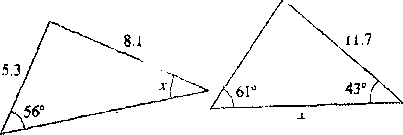
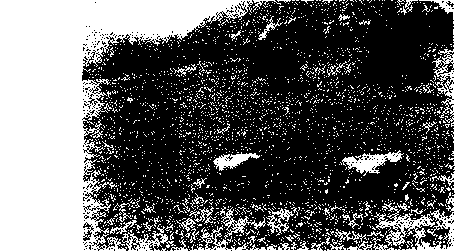

Bu kadın.... çiğneme hareketinin yüzün şeklini bozduğuna, kadının güzelliğini ve zerafetini yokettiğine inanıyor; bu yüzden acıktığında başkalarının yanında bulunmaktan kaçmıyor. Bir de öyle bir adam tanıyorum ki ne başkalarının yemek yediğini görmeye ne de başkalarının onu yemek yerken görmesine tahammül edebiliyor. Midesini boşaltırken olduğundan çok midesini doldururken eşten dosttan kaçıyor.
Montaigne cinsel arzulan yüzünden çok büyük baskı altında yaşayan bazı erkeklerin bu büyük sıkıntılarım sona erdirmek için kendilerini hadım ettirdiklerine tanık olmuştu. Bazı lan is» ■ fazla çalışan testislerine kar ya da sirke karışımları ile koınp res yaparak şehvetlerini dindirmeye çalışıyorlardı. İhı par. t İm Maximilian, bir kral olmak İle bedene sahip bir insan olmal> arasındaki karşıtlığın farkında olduğu için kimsenin mm,
e, s
özellikle belden aşağısı çıplakken görmesini istemezdi; hatta yakılmadan önce kendisine bir don giydirilmesini istediğini vasiyetinde özellikle belirtmişti. "İmparator vasiyetine mutlaka bir ek madde koymuştur/' diye ekliyor Montaigne, "bu maddede de, donumu giydirecek adamın gözleri bağlı olmalı, diye buyurmuştur."
Biz de bu türden radikal önlemler alma eğiliminde olabiliriz ama unutmayalım, Montaigne'in felsefesi insanın kendiyle barışık olması gerektiğini vurgular: "En büyük kabalık insanın kendi varlığım hor görmesidir." Kendimizi iki parçaya bölmeye çalışmak yerine, bizi şaşkınlığa düşüren bedenimize karşı açtığımız iç savaşı sona erdirmeliyiz çünkü bedenimiz ne korkunç ne de küçük düşürüdür; o varoluşumuzun değişmez bir parçası olarak ölene kadar bizimle kalacaktır.
1993 yazında, L. ile tatil için Portekiz'in kuzeyine gitmeye karar verdik. Arabayla yola çıkıp Minho köylerinde konakladıktan sonra Viana do Catelo'nun güneyinde birkaç gün geçirdik. İşte burada, tatilimizin son gecesinde, denizi gören küçük bir otelde, sevişme yetimi kaybetmiş olduğumu gördümbuna çok hazırlıksızdım çünkü bedenim bu bozukluğu önceden farketmemi sağlayacak bir işaret vermemişti. Portekiz'e gitmeden birkaç ay Önce, Montaigne'in Denemeler adlı yapıtının ilk cildinde 21. bölümü okumamış olsaydım, bırakın bu sorunu birilerine anlatmayı meseleyi sindirmekte bile hayli zorlanırdım.
Yazar, bu bölümde bir arkadaşından söz eder; bu arkadaşı ona, tam kadının içine gireceği anda penisinin küçüldüğünü anlatan bir adamdan söz edildiğini aktarır. Bu hikaye Montaigno'in arkadaşını çok etkilemiştir, öyle ki adam erekte olamamanın insanı nasıl bir utanca boğacağını Lizun uzun düşünür.
Bu düşünceler aklını öylesine meşgul eder, adam benzer bu felaketin başına gelmesinden öyle korkar ki korkusu vuzuh den bir sonraki sevişmesinde penisi bir türlü serileşme/ Adam o günden sonra bir kadım ne kadar arzularsa arzulasın, asla erekte olamamış, her talihsiz denemenin sonunda belleği ne bir yüz kızartıcı hatıra daha eklenmiş, bu hatıralar gün geçtikçe ona daha büyük işkenceler, zulümler etmeyi sürdürmüş tür.
Montaigne'in arkadaşı, penisine söz geçirme becerisini gösteremediği için iktidarsız olmuştur. Bu beceri ona göre bölün normal erkeklerin mutlak özelliğidir. Ancak Montaigne burada suçun peniste olmadığını düşünüyor: "Eğer bir işi bir kore yapabildiysen aynı şeyi ertesi gün yapamaz hale gelemezsin, tabii gerçek iktidarsızlığı bunun dışında tutuyorum." Aslında, Montaigne'in arkadaşı, bedenin akılla denetlenebileceği yo lundaki görüş, bu görüşün insan üstünde yarattığı baskı ve normal erkek tanımının dışında kalmaktan duyulan korku yüzünden bu hale gelmişti. Çözüm ise normal erkek tanımım yeni baştan yapmaktı; Montaigne'in arkadaşının da en sonun da keşfettiği gibi, penis üzerindeki hakimiyetin kaybedilmesi, sevişme sırasında ortaya çıkabilecek, çok da zararlı olmayan, üstelik Önü alınabilecek bir aksaklıktı. Montaigne arkadaşının bütün bunları nasıl öğrendiğini şöyle anlatıyor:
...böyle bir sorunu olduğunu itiraf etti, hatta bundan açıkça söz etti; böylece ruhunu saran gerilim azalmış oldu. Sorununu kabul ettiği için sıkıntısı azaldı, bunun ağırlığım daha az hissetmeye başladı.
Montaigne'in samimiyeti kuşkusuz okuyucuların ruhunu :.,ı ran gerilimleri de azaltıyordu. Bedenle ilgili hiçbir şeyi yal mu cı, itici bulmayan bu filozof penisin gösterdiği ani değişikli!leri, sözü bile edilmeyecek, kasvetli, utanç verici bir şey nl maktan çıkarıyor, dünya gözü ile değerlendiriyordu. Munia
iğne'in aşağıdaki sözleri sayesinde pek çok insan kendini suçlamaktan vazgeçmişti:
....en uygunsuz zamanda, hiç istemediğimiz anda büyüyen ama ona en çok gereksinim duyduğumuzda bizi yarı yolda bırakan bu organın [evrensel] itaatsizliği...
Bir adam, metresi ile birlikte olmayı başaramayınca mazeret uydurmaya çalışmak yerine, iktidarsızlığın aslında sıkça rastlanan bir aksilik olduğunu, üstelik yalnızca kendisine özgü bir şey olmadığını kabullenirse, cinsel gücünü tekrar kazanabilir, sevgilisinin kaygılarını yatıştırabilirdi. Montaigne, Gaskonyalı bir asil tanıyordu; bu adam bir kadınla beraberken erekte olamayınca eve kaçıp penisini kesmiş, "kabahatinin özrü olarak" kadına göndermişti. Tabii Montaigne bize başka türlü davranmamızı öğütlüyor:
Eğer [çift] hazır değilse, işi aceleye getirmemek gerek, tik beceriksizlikte umutsuzluğa kapılmaktansa.... uygun zamanı beklemek daha iyidir. Sertleşme sorunu çeken bir adam, değişik küçük oyunlarla yavaş yavaş kendini hazırlayabilir; inatçılık edip, kendini tümüyle yetersiz görmesine yol açacak biçimde davranmamalıdır.
Bu, cinsel yaşamımızdaki yalnızlığı rahatça, abartısız ve samimi bir biçimde anlatan, yepyeni bir dildi. Montaigne, yatak odamıza bir yol açıyor, oraya hapsolmuş mahrem kederleri utançtan arındırıyor ve bizi kendi bedenlerimizle barıştırmaya çalışıyordu. Onun gizlice yaşanan ve nadiren dile getirilen l)iı deneyimlerden söz etmek konusunda gösterdiği cesaret sayesinde kendi kendimize ya da sevgililerimize itiraf edebileceklerimizin sayısı artıyordu. Montaigne'in bu cesareti, insanın başına gelebilecek hiçbir şeyin insanlık dışı olamayacağına ilişkin görüşünden kaynaklanıyordu. Ona göre "Her insan, varoluşumuzun bütün biçimlerini içinde taşıyor"du. Tabii bu varoluş biçimlerine, penisimizin hiç umulmadık bir anda yumuşaması da dahildi. Yani başımıza böyle bir şey geldiğinde utanıp kendimizden nefret etmemize hiç gerek yoklu.
Montaigne, bedenlerimizle yaşadığımız sorunları bir ölçiulr, bunları rahatça tartışabileceğimiz ortamlardan yoksun olm.ı miza bağlıyordu. Yazarlar ya da ressamlar, yapıtlarını okuyan ya da bunlara bakan kişinin, kadının sevişme isteği duy a bil e ceğini, güç sahibi olan bir erkeğin de her erkek gibi anüsü ve penisi olduğunu akimdan geçirmesine izin vermek istemezler. Kralların, hanımefendilerin resimlerine bakınca onların da gaz çıkartan, sevişen insanlar oldukları aklımızdan bile geçmez. Montaigne aşağıdaki resimlerde eksik olduğunu düşündüğü noktaları o güzel, dobra sözleriyle tamamlıyor:
Au plus esleve throne du monde si ne sommes assis que sus nostre cul.
En yüce tahtta bile üstüne oturduğumuz kendi kıçımızdır.
Les Koy s et les philosophes fientent, et İes dames aussi Krallar ve filozoflar da sıçar, hatta kadınlar bile.
Kral III. Henri Catherine d e M n 1111
t
M om ta iğne bu sözleri söylerken başka sözcükler de kullanabilirdi. 'Cul' (kıç) yerine 'derriere' (kaba et) ya da 'fesses' (popo); 'fienter' (sıçmak) yerine de 'aller au cabinct' (tuvalete gitmek) diyebilirdi. Randle Cotgrave'in 1611 Londra basımı Fransızcaİngiiizce Sözlüğü, (Yeni öğrenenlerin dillerini ilerletmek için kullanabilecekleri, Fransız dilinin inceliklerine hakim olmak isteyenlerinse bütün aradıklarını bulabilecekleri ideal bir sözlük) 'fienteb (sıçmak) fiilinin 'haşerenin ya da porsukların dışkılaması' anlamında kullanıldığını belirtiyor. Montaigne'in bu denli güçlü bir sözcük kullanmayı seçmesinin nedeni, insan bedeninin tablolardan felsefe yapıtlarına kadar pek çok yerde ne kadar yadsındığını vurgulamak ve yapılan bu hatayı düzeltmekti. Hanımefendilerin asla ellerini yıkamadıkları, kralların kıçları üzerinde oturmadıkları yolundaki kanı Montaigne'in harekete geçmesine yol açmıştı: Artık bu insanların da sıçtıkları, kıçları üzerinde oturdukları bütün dünyaya hatırlatılmalıydı:
Üreme organlarımızın çalışmaları öylesine doğal, gerekli ve doğru kİ; acaba bu organlar bize ne yaptılar da biz utanç duymadan onlardan söz açamıyor, onları hep ciddi sohbetlerin dışmda tutuyoruz? Öldürmek, hırsızlık yapmak ya da İhanet etmek gibi sözcükleri rahatlıkla kullanmaktan korkmuyoruz ama üreme organlarımızın adlarını ancak fısıldayarak söylüyoruz.
Montaigne'in şatosunun çevresinde kayın ormanları vardı; bunlardaıı biri Castillon-la-Bataille köyünün kuzeyinde, bir başkası da St Vivien'in doğusundaydı. Montaigne'in kızı Leoııor bu ormanların sessizliğini, görkemini mutlaka biliyordu ıeak ağaçların adlarını öğrenmediği kesin: "Kayın ağacı"nm Imnsızcası "fouteau" iken, "düzüşmek" fiilinin fransızcası da "l<uılre"dır.
"Kızımın yaşıtları arasında şehvetli olanlar çoktmı evlendi I n lezaten başka çocuğum yok-" diye başlayan Moıılaignr, on dört yaşın ne demek olduğunu bize şöyle aktarıyor:
O narin ve zariftir; yaşından daha küçük görünüyor. Anne si onu kendi başına, sessiz sakin büyüttü; şimdilerde ise çocuksu masumiyetinden kurtulmayı öğreniyor. Bir gün benim de yanında bulunduğum bir sırada yüksek sesle kitap okurken fouteaıı (kayın) sözcüğü ile karşılaştı. Mürebbiyesi aniden, kabaca sözünü kesip bu utanç verici durumdan kurtulmasını sağladı.
(VLontaigne hoşnutsuzlukla fark etti ki yirmi kaba saba uşak bîr araya gelseler, "fouteau" sözcüğünün neleri çağrıştırdığım, kızın sözünü kesip sözcüğü atlamasını buyuran bu kadından daha iyi anlatamazlardı. Ancak kızm mürebbiyesi ya da Montaigne'in kaba deyişiyle "yaşlı kocakarı" için bu sözcüğün atlanması çok gerekliydi çünkü ona göre genç bir hanımefendinin birkaç yıl sonra kendini yatak odasında bir erkekle başbaşa bulduğu zaman başına gelecekleri biliyor olması hanımefendi saygınlığıyla asla bağdaşamazdı.
Montaigne portrelerimizi hep alışıldık biçimde çizmemizi, kendimizi anlatırken gerçekte kişiliğimizi ortaya koyan pek t;ok şeyden söz etmememizi yanlış buluyordu. İşte kitabım yazarken bir amacı da bu yanlışı düzeltmekti. 38 yaşında emekliye ayrıldığında yazmaya karar vermişti ama ne yazacağım bilmiyordu. Yavaş yavaş kafasında, kütüphanesindeki yarım daire biçimindeki rafları dolduran binlerce kitaptan hiçbirim' benzemeyecek, alışılmadık bir kitap yazma fikri oluştu.
O, binlerce yıllık geleneği, yazarın kendisiyle ilgili bir şev lor yazma konusundaki çekingenliğini bir kenara bıraktı. / V t irmeler'in Önsözünde de belirttiği gibi, aklının ve bedeninin nasıl çalıştığını elinden geldiğince açık bir biçimde anlat mavi istiyordu. Denemelerin ilk iki cildi 1580 yılında Borde.»iv’»İn
yayınlandı, 8 yıl sonra yapıta Paris'te basılan bir üçüncü cilt eklendi:
Hâlâ doğanın en ilkel yasalarına uyarak, özgürce yaşadıkları söylenen o insanların arasında olsaydım, sizi temin ederim, kendimi bir bütün olarak, bütün çıplaklığımla resmetmeyi çok isterdim.
O güne değin hiçbir yazar okuyucularının karşısına üzerinde giysileri olmadan çıkmayı arzulamamıştı. Oysa resmi giysiler içindeki azizlerin, papaların, Romalı imparatorların, Yunan devlet adamlarının portrelerinden bol bir şey yoktu. Montaigne'in bile, Thomas de Leu (1562-1620) tarafından yapılmış, onu belediye başkanlığı giysileri içinde, yüzünde esrarengiz ve biraz da ciddi bir ifade, boynunda ise 1571'de IX. Charles tarafından kendisine sunulan kolye ile gösteren resmi bir portresi vardı.
Ama onun Denemeler adlı yapıtında göstermek istediği lıen' bu poıiredeki cüppeli, Cicerovari adam değildi. O, insanla bir İniliin olarak ilgileniyor, insanın aslında ne olduğunu gösterı ıırktc yol ersiz kalan portrelere bir alternatif sunmak istiyor
du. Bu yüzden yazdığı kitapta, yediği yemekler, penisi, dışhı sı, cinsel zaferleri, yellenmeleri, daha Önce ciddi bir ki lapla as la yer bulmadığı ölçüde ayrıntılı biçimde ele alınıyordu. (İslilik bütün bu ayrıntılar öylesine büyük bir ciddiyetle akla rıh yordu ki bunları okuyan, insanoğlunun aklı selim sahibi bit yaratık olu p olmadığım sorgulamaya başlayabilirdi. M on t a i g ne okuyucularına kendisiyle ilgili şu bilgileri veriyordu:
Penisi kimliğinin önemli bir parçasıydı:
Bütün organlarım beni ben yapar; her biri en az öteki kadar değerlidir ama hiçbirisi beni bu organın yaptığı kadar erkek yapamaz. Okuyucularıma portremi bir bütün olarak göstermeyi borç biliyorum.
Cinsel ilişkinin gürültülü ve pis bir iş olduğunu düşünüyordu: Başka her yerde az da olsa derli toplu davranmak mümkündür; bütün öteki işler yürütülürken Özlük haklan göz önünde bulundurulur: Ama bu iş ancak gülünç ya da kaba diye tanımlanabilir. Buyrun bir deneyin bakalım da bulun bu işi bilgece, saygılı bir biçimde yapmanın yolunu! Tuvalete oturduğunda sessizlik istiyordu:
Bütün doğal etkinliklerim içinde, rahatsız edilmeye en az tahammül edebildiğim etkinlik budur.
Düzenli tuvalde gitme alışkanlığı vardı:
Bazı acil işler ya da hastalıklar dışında yataktan çıkabildiğim sürece, bağırsaklarım ve ben tuvaletteki randevularımızı asla kaçırmayız.
Çevremizde gördüğümüz portrelere önem veriyorsak bu, kendimizde varolan özellikleri, ancak başkalarının kendileriy le ilgili olarak söyledikleri ölçüsünde sınırlayıp ortaya kny.ı bildiğimiz, hayatlarımızı bu örneklere göre biçimlendirdiği miz içindir. Başkalarında gördüğümüz özellikleri kendinıı/ı h bulmaya çalışır, başkalarının hiç sözünü etmediği şeyim ■ gı ı, lerimizi kapatır ya da bunları yaşarken utanç duy.n i/:
En yüce düşüncelere vakıf, en bilge insanın bile sevişirken nasıl acaip hareketler yapacağını gözümde canlandırıyorum da... Bu kişinin bir düşünür, bîr bilge olduğunu iddia etmesi küstahlık değil de nedir?
Montaigne bu sözlerle bilgeliğin olanaksız olduğunu söylemeye çalışmıyordu; o yalnızca bilgeliğin tanımında küçük değişiklikler yapılması gerektiğini düşünüyordu. Gerçek bilgeliğin yolu benliğimizin temelini oluşturan şeylerle barışık olmaktan geçiyordu. Bilge kişi zeka ve kültürün insan hayatında sanılandan çok daha küçük bir rol üstlendiğini bilmeli, ölümlü bedenimizin bazı acil, uygunsuz gereksinimlerini kabullenmeliydi. Epikurosçu ve Stoacı filozoflar bedenlerimiz üzerinde hakimiyet kurabileceğimizi böylece bedenlerimizin, ihtiraslarımızın peşinden sürüklenmeden rahatça yaşayabileceğimizi iddia etmişlerdi. En büyük arzularımız bağlamında dile getirilmiş çok hoş bir öneriydi bu. Ama aynı zamanda uygulamaya konması olanaksız, üstelik üretime engel olacak bir öneri:
Hiçkimse buralarda yerleşip oturamayacaksa felsefenin bu yüce tepelen ne işe yarar? Bizim uygulama becerimizi ve gücümüzü aşan kuralların kime ne faydası var?
İnsanın kendi zorunluluklarım, başka bir canimin standartlarına uydurmaya çalışması hiç de akıllıca değil.
Bedenimizi ne yok sayabilir ne de onu alt edebiliriz ama en azından, Montaigne'in 'yaşlı kocakarı'ya hatırlatmak istediği gibi,'fouteau' sözcüğünün çağrışımlarını öğrenmek ile saygınlığımız arasında bir tercih yapmak zorunda olmadığımızı bilebiliriz. O zaman kısaca şöyle diyebiliriz:
Ihı dünyadaki esaretimiz süresince, içimizdekilerin ne tümüyle bedensel ne de tümüyle ruhsal olabileceğini düşünebiliriz; dolayısıyla insanı bunları birbirinden ayırmak zoi ıımla bırakmak ona haksızlık etmek olacaktır.
Kültürel Yetersizlik Üzerine
Yetersizlik hissinin bir nedeni de, insanların dünyayı hiç düşünüp taşınmadan, küstahça normal-anormal diye iki farklı kutba ayırmalarıdır. Kaşın teki havada, hafif şaşkın bir ifadeyle söylenen "Gerçekten mi, ne kadar tuhaf," cümlesi karşısında deneyimlerimizi, inançlarımızı bir kenara bırakmaya, hatta mantığımızı, insanlığımızı bile unutmaya hazırızdır.
1580 yılının yazında, Montaigne en büyük düşünü gerçekleşlirdi; at sırtında, Almanya, Avusturya ve İsviçre'den geçerek Koma'ya gitti; böylece Fransa dışına ilk yolculuğunu yapmış oldu. Bu yolculukta ona kardeşi Bertrand de Mattecoulon da içlerinde olmak üzere 4 genç asil ile bir düzine hizmetkar eşlik ettiler. 17 ay boyunca evlerinden uzak kalacak, toplam 3000 mil mesafe katedeceklcrdi. Gezileri sırasında Bazel, Baden,
o* ı
Selin Ilhan sen, Augsburg, Innsbruck, Verona, Venedik, Padua, Polonya, Floransa ve Siena da dahil bir çok kente uğradılar. Yok ıı luk 1580 yılında Kasım ayının son günü akşam vakti Roına'cla sonlandı.
YolcuLuk boyunca, Montaigne yöreden yöreye kavramlarm ne denli çarpıcı bir biçimde farklılık gösterdiğine tanık oldu. İsviçre kantonlarındaki hanlarda yatağın tırmanılarak çıkılacak kadar yüksek olması, süslü cibinliklerle çevrelenmesi, her yolcunun başka odada kalması normal karşılanıyordu. Birkaç mil ötede, yani Almanya'da, yatağın yere serilmesi normaldi; süslü cibinliklerden eser yoktu, üstelik yolcular dört kişilik odalarda konaklıyorlardı. Burada hancılar üste örtmek için Fransa'daki gibi çarşaf değil kuştüyü yorganlar veriyorlardı. Bazel'de kimse şarabına su katmıyordu; akşam yemeklerinde altı yedi çeşit yemek yeniyordu. Baden'de ise Çarşambaları herkes balık yiyordu. En küçük İsviçre köyünde bile iki polis memuru bulunuyordu. Almanya'da her çeyrek saatte bir, hatta bazı köylerde her dakika çanlar çalmıyordu. Lindau'da ayvanın çorbası yapılıyordu, ana yemek çorbadan önce yeniyordu. Buradakiler ekmeği rezene kullanarak yapıyorlardı.
Fransız yolcular genellikle bu farklılıklardan rahatsız oluyorlardı. Otellerde, ilginç yemeklerden uzak duruyor, kendi ülkelerinde yedikleri yemeklerden yemek istiyorlardı. Fransızca konuşmama gibi bir hataya düşen insanlarla muhatap olmamaya çalışıyor, rezeneli ekmeği çekinerek ellerine alıyorlardı. Montaigne oturduğu masadan onları gözlemlemişti:
Köylerinin dışına çıktıkları zaman sudan çıkmış balığa dönüyorlar. Nereye giderlerse gitsinler kendi adetlerine sıkı sıkı yapışıyor, başkalarımnkine lanet okuyorlar. Eğer bir hemşerileri ile karşılaşırlarsa hemen bu olayı kutluyorlar. Asık suratlılar, az konuşuyor, yolculuk sırasında ihtiyatlı
bir edayla pelerinlerine sarılıyor, bÖylcce kendilerini y.ı bancı bir diyarın bilinmedik illetlerinden korumaya yalıtı yorlar.
< Mıbeşinci yüzyılın ortalarında, Almanya'nın güney eyaletlerinde, yeni bir ısınma yöntemi geliştirilmişti: Knstenofen. Bıı, birbirine tutturulmuş dikdörtgen levhalardan oluşan kutu bi t iminde, hareket ettirilebilen demir bir sobaydı. Sobanın içinde kömür ya da odun yakılabiliyordu. Uzun kışlarda bu soba çok büyük faydalar sağlıyordu. Kapalı sobalar açık ateşin dört katı fazla ısıtıyor, üstelik daha az yakıt harcıyordu; ayrıca bara temizliği de gerektirmiyordu. Demir levhalar ısıyı emiyor, yavaş yavaş ve eşit biçimde çevreye dağıtıyordu. Sobanın yakınma çamaşır kurutmak ya da havalandırmak için sopalar asılıyordu. Kış boyunca aileler sobalann çevresini oturma alanı olarak kullanıyorlardı.

Ama Fransızlar bu buluştan pek etkilenmediler. Onlara göre şömine yakmak daha ucuzdu; üstelik Alman sobaları ışık ver iniyor, havadaki nemi fazla azaltıyordu. Odanın içinde insan soluk alamıyordu.
l<v,
Aslında mesele yöresel bir anlaşamamazlıktan ibaretti. Montaigne, 1580 yılının Ekim ayında Ausburg'da bir Almanla tanışmıştı. Adam Fransızların evlerini şöminelerle ısıtmalarını uzun uzadıya eleştirdikten sonra demir sobanın avantajlarından söz etmeye başlamıştı. Bu konuşmayı sabırla dinleyen Montaigne kentte çok kısa kaldı (ayın 15'inde gelmişti, 19'unda ayrıldı) çünkü adama acımıştı; bu kenti terketmek istiyordu çünkü şömineyle ısınan evine döndüğünde 'sersemleyeceğinden' korkuyordu. Ne gariptir ki Fransızlar da insanda bu 'sersemliği' ancak demir döküm sobanın yaratacağını iddia ediyorlardı.
Montaigne yakın çevrede konuyu enine boyuna inceleme fırsatı buldu. Baden'de ona demir sobalı bir oda ayrılmıştı. Çıkarttığı hafif kokuya alıştıktan sonra rahat bir gece geçirdi. Soba sayesinde kalın sabahlığım giymeden yatabildiğinden de söz etti. Aylar sonra İtalya'da soğuk bir gecede, kaldığı handa soba olmadığı için ne kadar üzüldüğünü ifade etti.
Eve döndüğünde, iki ısıtma sisteminin niteliklerini karşılaştırdı:
Sobaların dışarıya bunaltıcı bir ısı verdiği ve yapıldıkları malzemenin ısındığı zaman alışık olmayanlarda baş ağrısına yol açabilecek bir koku yaptığı doğru. Öte yandan,
ısıyı her tarafa eşit dağıtıyorlar; bacalardan dunum, is, kurum akmıyor; bu yüzden bizim şöminelerden uslun sayılacakları pek çok nokta var.
Montaigne'in canını sıkan Ausburg'ta tanıştığı adamın ila I kansızların da kendi ısıtma sistemlerinin üstün olduğu yo lundaki körükörüne inançlarıydı. Bu inançlarda inceleme ve araştırmaya yer yoktu. Montaigne Almanya'dan dönüp kü Itiphanesine bir Ausburg demir sobası yerleştirecek olsa, yu kınları bu nesneye de her yeniliğe yaklaştıkları gibi şüpheyle yaklaşacaklardı:
Her ulusun, başka uluslar için sadece alışılmadık olmakla kalmayan, aynı zamanda barbarca ve acayip görünen pek çok geleneği, alışkanlığı vardır, labii soba ya da şömine söz konusu olduğunda barbarlıktan ya da acayiplikten söz edemeyiz. Herhangi bir topluluğun yarattığı normal tanımı akla uygun olanın yalnızca bir bölümünü kapsar; insan deneyiminin büyük bir bölümünü de adaletsizce yabancılığa mahkum eder, Montaigne, Ausburglu adam dan, Gaskonyalı komşularından söz edip, soba ile şöminenin olası ısıtma sistemleri içerisinde akla yatkın yönleri olan iki tanesi olduğunu anlatırken aslında okuyucularının yöresel "normal" algılarını genişletmeyi hedefliyordu. Yazar en sevdiği filozofun izinden giderek şu sözleri söylüyor:
Sokrates'e nereli olduğu sorulduğunda o bu soruyu "AtinalIyım" diye yanıtlamazdı; "Dünyalıyım" derdi.
Dünyanın, herhangi bir AvrupalInın tahmininden çok dalın tuhaf bir yer olduğu kanıtlanmıştı. 12 Ekim 1492 Cuma günü, Montaigne'in doğumundan tam 41 yıl önce, Kristof Kolomb, Rorîda Körfezi açıklarındaki Bahama takımadalarından I üı i ne ayak bastı ve Guanahani yerlileri ile karşılaştı. Bu yerlıln ilaha önce Isa'nın adını duymamışlardı, üstelik çıplak dolan yorlardı.
Montaigne yerlilerin yaşamıyla çok ilgileniyordu. Oval kütüphanesinde, Amerika'daki yerli kabilelerin hayatını anlatan pek çok kitap bulunuyordu; örneğin Francisco Lopez de Gomara'nm Yerlilerin Genel Tarihi, Giralamo Benzoni'nin Yeni Dünya Tarihi ve Jean de Lery'nin Brezilya'ya Yolculuk adlı yapıtları. Montaigne Güney Amerika'da insanların örümcek, çekirge, karınca, kertenkele ve yarasa yediklerini okumuştu. 'Onları pişiriyor, değişik soslarla servis yapıyorlar'. Bazı Yerli kabilelerinde bakireler herkesin ortasında mahrem bölgelerini sergiliyor, gelinler evlenecekleri gün seks partilerine katılıyor, erkeklerin birbirleriyle evlenmesine izin veriliyor ya da Ölüler içine şarap katılan bir bulamaçta kaynatılıp karıştırıldıktan sonra bu bulamaç akrabaları tarafından partilerde keyifle içiliyordu. Bazı ülkelerde kadınlar ayakta erkeklerse çömelerek işiyordu; erkekler bedenlerinin ön tarafmdaki kılları uzatırken arka taraftaki kılları traş ediyorlardı. Bazı ülkelerde erkekler sünnet edilirken bazılarında da penis ucunun güneş ışığı görmesinden öylesine korkuluyordu ki 'penisteki üst deri dikkatle gerilip Öne doğru çekiliyor, penisin uç kısmını kapatacak biçimde uzatılıp uç kısımdan küçük iplerle sıkı sıkı bağlanıyordu'. Bazı ülkelerde insanlar birbirlerine sırtlarını dönerek selam veriyor; kral tükürdüğünde sarayın en seçkin kişisi ona elini uzatıyor; kral bağırsaklarım boşalttığında 'yardımcıları dışkısını keten bir örtüye sarıyorlardı/ Ayrıca her ülkenin farklı bir güzellik anlayışı vardı:
Peru'da büyük kulakların güzel olduğuna inanılıyor, bu yüzden oranın insanları kulaklarını gerebildikleri kadar gererek uzatıyorlar. Bugün hâlâ hayatta olan bir adamın anlattığına göre, Duğu'da bir ülkede, bu kulak germe, kulağı mücevherlerle donatma işi öyle bir itibar göstergesiymiş ki bu adam herhangi bir kadının kulak memesindeki deliklen silahım, giysilerini rahatça geçirebiliyormuş.
I >iinynmn başka bir yerinde insanlar dişlerini özenle karartıyor, dişlerinin beyaz olmasından çok utanıyorlardı iş.
Bir başka yerde ise dişler kırmızıya boyanıyormuş... M ek sikalı kadınlar için dar alın bir güzellik simgesiymiş, bu nedenle bedenlerinin çeşitli yerlerindeki tüyleri kopart ip saçlarının daha sık çıkmasını sağlamaya çalışırlarmış. Büyük memeli kadın öyle makbulmüş ki kadınlar çocuklarını emziririrken memelerini omuzlarından arkaya atıp çocukları sırtîarındayken onları emzirebiliyorlarmış.
Montaigne'in jcan de Lery'den öğrendiğine göre, Tupi kabile sinde Brezilyalı kadınlar anadan üryan dolaşır, bundan hiç utanmazlarmış. Hatta AvrupalIlar Tupi kadınlarına örtünmeleri için giysi verdikleri zaman kadınlar gülüp giysileri reddetmişler, insan böyîesine rahatsız şeyleri üzerine giyip kendisine niye eziyet eder ki diye düşünüp şaşırmışlar.
Erkekler de kadınlar da ana karnından çıktıkları günkü kudur \ 1/'/.//* hu Jeande Lery. Brezilyaya Yolculuk (757^
I )(■ I rry'nın bu kabilelerle 8 yılını geçiren gravürcüsü, Avrupa'da yaygın bir inancı, Tupilerin hayvanlar kadar kıllı olduklarına ilişkin yanlış inancı düzeltmek istemişti. (De Lery: 'Doğul olarak bizden daha kıllı değiller/) Erkekler saçlarını kazıtıyor, kadınlarsa uzatıp kırmızı kurdelelerle Örüyorlardı. Tupi yerlileri yıkanmayı çok seviyorlardı; ne zaman bir ırmak görseler ırmağa atlayıp birbirlerini yıkamaya başlıyorlardı. Günde 12 kez yıkandıkları bile oluyordu.
İki yüz kişinin birlikte yattığı ambara benzer yapılar içinde yaşıyorlardı. Pamuk yataklarım hamak gibi, sütunlar arasına asıyorlardı. Avlanmaya gittikleri zaman Tupiler yataklarını da yanlarında götürüyor, Öğle vakti ağaçların arasında şekerleme yapıyorlardı. Her altı ayda bir köy yeni bir yere taşınırdı; çünkü köy sakinleri manzara değişikliğinin onlara iyi geleceğini düşünürlerdi ('Başka açıklamaları yoktu, yalnızca hava değişikliğinin onlara iyi geldiğini söylerlerdi/ De Lery.) Bu insanlar öylesine düzenli bir yaşam sürüyorlardı ki çoğu yüz yaşma kadar yaşadığı halde kimsenin saçı ağarmıyordu. Çok da konukseverdiler. Köye yeni biri geldiğinde kadınlar elleriyle yüzlerini kapayıp ağlamaya başlar, 'Nasılsın? Demek bizi görmeye gelmek için bunca sıkıntıyı göze aldın!' diye bağırırlardı. Ziyaretçilere hemen en sevilen Tupi içkisi ikram edilirdi. Bir bitkinin köklerinden yapılan, şarap rengi bu içki biraz sertti ama mideye çok iyi geliyordu.
Tupi erkeklerinin birden çok kadınla evlenmelerine izin veriliyordu; erkekler eşlerinin hepsine de aynı oranda bağlıydılar. 'Bütün ahlak sistemleri iki temel üzerinde yükseliyor: Savaşta sağlamlık ve eşlere karşı sevgi' diye anlatıyor Montaigne. Kadınlar da bu düzenlemeden memnunlardı; hiç kıskançlık duymuyorlardı (Cinsel ilişkileri konusunda rahattılar; tek yasakları şuydu: kimse yakın akrabalarıyla sevişemezdi). Karısı şatonun alt katında oturan Montaigne Tupilerin yaşamına ilişkin bazı ayrıntılardan şöyle söz ediyor:
Evliliklerinin güzel özellikleri arasında bir tanesi var ki un dan söz etmeden geçemeyeceğim: Bizim eşlerimiz Başka kadınlara karşı aşk, sevgi duymamızı ne kadar engel İçmeye çalışıyorlarsa, onların eşleri de erkeklerinin başka kadınlara aşk duymasını sağlamak için o kadar çaba gösteriyorlar. Kocalarının saygınlığına her şeyden çok önem veren bu kadınlar, üstlerine olabildiğince fazla kuma gelsin diye her türlü sıkıntıyı, üzüntüyü göze alıyorlar; çünkü erkeğin eşlerinin sayısı onun saygınlığının bir ölçüsü.
Kuşkusuz tuhaf bir durumdu bu. Yine de Montaigne bunda hiçbir anormallik görmüyordu.
Tabii onun gibi düşünenler azınlıktaydı. Kolomb'un keşfinden sonra yeni topraklara ayak basmak üzere Avrupa'dan gelen İspanyol ve Portekizli koloniciler yerlilerin hayvanlardan yalnızca bir parça daha gelişmiş olduklarına kanaat getirmişlerdi. Katolik şövalye Villegagnon onları 'insan yüzlü hayvanlar diye niteliyordu; Calvinci bakan Richer'e göre bu insanların bir ahlak anlayışı yoktu (1au sersemler iyiyle kötüyü birbirinden ayırmaktan acizleT). Beş Brezilyalı kadını inceleyen doktor Laurent onların adet görmediklerini ve bu yüzden kategorik olarak insan ırkına dahil edilemeyeceklerini iddia et misti.
İspanyollar onları hayvanlar gibi boğazlamaya başladılar, çünkü nasılsa onlar insan değildiler. Kolomb'un keşfinden 42 yıl sonra, yani 1534'de Aztek ve İııka İmparatorlukları yok edilmiş; yerli halkları köleleştirilmiş ya da katledilmişti. Mon taigne, bu barbarlığı Bartolomeo kas CasasTn Brevissuua Reln dön de la Destrucciön de las îndias adlı kitabında okuyup öğren di. 1552 yılında Sevilya'da basılan bu kitap 1580 yılında Janji ı es de Miggrode tarafından 'İspanyollar 'm Yeni Dünya f h’tnlaı Doğu Topraklarında Yerlilere Uyguladıkları Zulümler' adıyla Fransızca'ya çevrilmişti. Yerlileri yıkan kendi misafirin-tvn
İlkleri ve silahlarının güçsüzlüğü olmuştu. Kentlerinin, köylerinin kapılarını İspanyollara açmışlar, en hazırlıksız anlarında konuklarınm kendilerine karşı kötü niyetli olduklarını anlamışlardı. İlkel silahlan İspanyolların top ve kılıçları karşısmda etkisizdi. İşgalciler kurbanlarına hiç acımadılar. Çocukları Öldürdüler, hamile kadınların karınlarını yardılar, gözlerini oydular, bütün bir aileyi bir arada yaktılar, geceleri köyleri ateşe verdiler.
İspanyol!ar köpeklerini özel olarak eğitiyor, onları kaçan yerlilerin peşinden ormana salıyorlardı.
Yerli erkekler birbirlerine demir zincirlerle bağlanarak gümüş ve .illin madenlerinde çalışmaya gönderildiler. Birisi öldüğü .',111ı.m bedeni kesilerek zincirden çıkartılıyor, zincire bağlı
öteki yerliler hiçbir şey olmamış gibi çalışmaya devam <\!ıy< *ı lardı. Yerlilerin çoğu madenlerde üç haftadan fazla dayana inadı. Kadınlara kocalarının gözleri önünde tecavüz ediliyor, kadınların bedenleri parça parça kesiliyordu.
ün sık rastlanan işkence yöntemi çene ve burnu kesmekti. Las Casas, köpekleriyle yaklaşan İspanyol askerlerini gören bir yerli kadının kendini çocuğuyla birlikte astığını anlatıyordu. Bir asker gelip, çocuğu kılıcıyla ikiye bölmüş, bir parçasını köpeğine verdikten sonra , çocuğun İsa'nın cennetine gitmesi için papazdan son görevini yerine getirmesini istemişti.
Kadınlarla erkekler birbirlerinden ayrılmıştı; çaresiz, korku içindeki yerliler arasında intihar edenlerin sayıları giderek artıyordu. Montaigne'in doğduğu 1533 yılından yazarın üçüncü kitabının yayınlandığı 1588 yılma kadar, Yeni Dünya'mn yerli nüfusu 80 milyondan 10 milyona düşmüştü.
Yerlileri doğrarken İspanyolların vicdanları rahattı çünkü m >r mal bir insanın ne demek olduğundan emindiler. Mani ıklan onlara normal insanın pantolon giydiğini, tek bir eşi okluğu nu, Örümcek yemediğini ve yatakta yattığını söylüyordu. Dillerini hiç anlayamıyorduk; davranışları, dış görünüşle ri, hatta kılık kıyafetleri bile bizimkilerden çok farklıydı
Hangimiz onların vahşi birer hayvan olduğunu düşünmedi ki? Hangimiz sükunetlerini aptallıklarına, cehaletlerine yormadı? Üstelik,., bizim el öpme, eğilerek selam verme gibi alışkanlıklarımızdan bile habersizdiler.
Görüntüleri insana benzeyebilirdi ama pantolon giymemeleri olacak iş değildi.
Sözü edilen kasaplığın altında kötü bir akıl yürütme yatıyordu. Normal olanı anormal olandan ayırmaya çalışırken, özel durumlardan yola çıkarak genel bir kural türettiğimiz tümevarım mantığının tipik adımlarıyla ilerleriz. (Mantıkçıların ifadesiyle, Al 0, A2 = 0 ve A3 = 0 ise bütün A'lar 0'dir.) Birisinin zeki olup olmadığına karar vermek için onda, o güne kadar rastladığımız zeki insanların özelliklerini ararız. Eğer o zamana kadar birinci, ikinci ve üçüncü resimdeki gibi
3.
4,
zeki insanlara rastladıysak, zeki insanların çok okudukla ma. siyah giydiklerine ve ağırbaşlı göründüklerine inanına rgılı minde oluruz. Bu durumda dördüncü resimdeki gibi görünen birini aptal olarak değerlendirebilir,, hatta belki de onu öidiire biliriz.
Yatak odalarına Alman sobası konduğunu görünce dehşete düşen Fransız gezginleri Almanya'ya gelmeden önce kendi ülkelerinde pek çok iyi şömine görmüş olmalılar. Bunlardan bir kısmı birinci resimdekine, bir kısmı ikinci resimdekine, bir kısmı da üçüncü resimdekine benziyordu belki. Onlar da bu gördükleri kadarından yola çıkarak iyi bir ısıtma sisteminin mutlaka açık olması gerektiği sonucuna vardılar.
3.
Montaigne, bu kibirli tavırdan üzüntü duyuyordu. Evet, ( ai ney Amerika'da vahşiler vardı ama örümcek yiyen yeri i üt bunlardan değildi:
Herkes alışık olmadığı şeyi barbarca buluyor; hakikale ya da doğru akıl yürütme yöntemine ilişkin ülkemizdeki alış kanlıklardan, burada üretilen fikirlerden başka ölçülümü/

yok. Kusursuz din, kusursuz idare biçimi, her şeyin en gelişmişi, en iyi uygulaması burada, bu ülkede.
O, barbar ve uygar arasındaki ayırımı bir kenara atmak istemiyordu. Bazı ülkelerin gelenek ve görenekleri ötekilerden tabii daha uygar, daha anlamlıydı (Ona göre, kültürde görecelik de en az milliyetçilik kadar kötüydü). Montaigne'in asıl yapmak istediği bizim bu farkları belirlerken yaptığımız hataları düzeltmekti. Ulusumuzun pek çok erdemi olabilirdi ama bu erdemlerin, ulusun bizim ulusumuz olmasıyla hiç ilgisi yoktu,. Yabancı bir ülkenin kusurlu yanları olabilirdi ama o ülkenin yalnızca alışık olmadığımız göreneklerinden yola çıkarak böyle bir karara varmamız yanlıştı. Neyin iyi olduğunu belirlemek için milliyet ve aşinalık gibi iki ölçütü temel almak son derece saçmaydı.
Fransız görenekleri, burnunun içinde sümük olan bir insanın mendile sümkürmesini buyurur. Montaigne'in bir arkadaşı buna karşı çıkıyor, avuç içine sümkürmenin daha iyi olacağını iddia ediyordu:
Hareketini savunmak için.... bu pis sümük, kaliteli ketenle sarılıp sarmalanıp bütün gün üstümüzde taşınmayı hak edecek kadar önemli bir şey mi ki diye sordu... Aslında söyledikleri hiç de mantıksız değildi; alışkanlıklarım yüziinden, başka ülkelerdeki benzer görenekleri iğrenç bulmamızın ne kadar da garip olduğunu fark edememiştim.
1 kıvranışları değerlendirirken önyargılı olmak yerine dikkatle akıl yürütrneliydik. Aşina olmadıklarıyla yetersiz olanı rahatça aynı kefeye koyanlar Montaigne'i hüsrana uğratıyor, böyle yaparak eski büyük filozofların alçakgönüllü olmak gerektiği konusundaki öğütlerini yok sayıyorlardı:
t ielmiş geçmiş en bilge adam, kendisine ne bildiği sorulduğunda, tek bildiğinin, hiçbir şey bilmediği olduğunu söylemiştir.
(>yleyse, tek kaş havada, hafif şaşkın bir ifadeyle 'Gerçeklen ini? Ne kadar tuhaf!' diye tepki vererek (Gaskonya'da bııınıı mı avucuna stimkürdüğünde Montaigne'in arkadaşının karşı !aştığı ve en uç biçimiyle, ifade etmek gerekirse Güney Amerika kabilelerinin yok olmasına neden olan tepki de buydu) .ıslında bizde bir anormallik olduğunu, hatta bizim insan olmadığımızı ima etmeye çalışan biriyle karşılaştığımızda ne yapmalıyız?
belki de tarih boyunca çeşitli insanlara ya da ırklara yöneltilen .1 normallik suçlamalarının yöreyle ve tarihle ne kadar bağlanlılı olduğunu hatırlamalıyız. Bu suçlamanın üzerimizdeki etkisini azaltmak için zamana ve yöreye bağlı olarak göreneklerin ne kadar çeşitlilik gösterdiğine şöyle bir bakmamız yeterli olacaktır. Bir grubun belli bir zamanda anormal bulduğu şey ılaima bu biçimde algılanamaz, algılanmayacaktır. Aslında I tizler aklımızdaki sınırları aşabiliriz.
NE NEREDE ANORMAL KARŞILANIR
I
Montaigne, kütüphanesini önyargı sınırlarını aşabilmesinde kendisine yardımcı olacak kitaplarla donatmıştı. Bunların arasında tarih kitapları, seyahatnameler, misyonerlerin raporları, kaptanların seyir defterleri, başka ülkelerde üretilmiş edebiyat yapıtları ve garip balıklar yiyip garip giyinen kabilelerin resimlerini gösteren kitaplar vardı. Bu kitaplar sayesinde, Montaigne daha önce hiç bilmediği yanlarım keşfedebildi; Romalılara, Yunanlılara benzeyen yanlarını, Gaskonyalılardarı çok MeksikalIlara ve Tupilere benzediğini,altı kadınla evlenmeyi, sırtını traş etmeyi ya da günde 12 kez yıkanmayı isteyebileceğini öğrendi. Taci tus'un Tarihsel Olaylar adlı yapıtı, Gonçalez de Mendoza'nın Çinlilerin tarihi, Goulart'm Portekiz tarihi, Lebelski'nin Pers tarihi üzerine yazdığı kitaplar, Afrikalı Leo'nun Afrika Yolculukları, Lusignano tarafından kaleme alınan Kıbrıs Tarihi, Postel'in Türk ve Doğu öykülerinden yaptığı derlemeler ve ('garip hayvanların resimlerini de içeren) Muensteıün evrensel kozmografisi sayesinde böyle özellikleri olan tek insanın kendisi olmadığını anlamış, kendini daha az yalnız hissetmişti.
Başkalarının evrensel gerçekle ilgili iddialarından bunaldığı bir anda Montaigne, evren konusunda antik çağın büyük filozofları tarafından geliştirilen kuramları yaııyana getirip birbirleriyle karşılaştırmıştı. Düşünürlerin herbiri evrenle ilgili bütün gerçeklere vakıf olduklarını düşünüp kendilerine güveniyorlardı ama ortaya çıkan sonuca göre hepsinin görüşleri de birbirinden çok farklıydı. Bu karşılaştırmalı çalışmadan sonra Montaigne bunlardan hangisini kabul etmesi gerektiğine ilişkin hiçbir fikri olmadığını alaycı bir biçimde ifade ediyordu:
Platon'un İdeaTarı mı, Epikuros'un atomları mı, Demokritos'un uzay ve çekim gücü mü, Thales'in suyu mu, Anaximander’in sonsuz doğası mı, yoksa Dıogenes'in esareti,
PythiigorasTn sayıları ve simetrisi, Parmenides'in sonsuzluğu, Musaeus'un birliği, Apollodorus'un ateş ve suyu, Anaksagoras'ın homojen parçacıkları, Empedocles'in (ark lılık ve uyumu ya da Heraclitus'un ateşi mi, yoksa o hiç yanılmaz, kendinden emin insan aklı tarafından yaratılan sayısız doktrin, varılan sayısız yargı içinden başka herhangi biri mi?
Yeni dünyanın ve antik çağda yazılan metinlerin keşfinden ..onra, Montaigne'in 'saldırganlık, kendine sonsuz bir güven v** inanç duyma biçiminde kendini gösteren o huzursuz edici nisan kibri' diye nitelediği şeyin ne olduğu iyice anlaşılmış!): İnsan bilgeliği diye nitelenen ahmaklıkları zekice bir araya getirebilen kişi harikulade bir hikaye yaratabilir... İnsan zekasını bu denli yüksek noktalara taşıyan Önemli kişilerin bile belirgin, kocaman hatalar yaptıklarım gördükten sonra, insanla, insan sağduyusuyla ve insan aklıyla ilgili neler söylenebileceğini tahmin etmek zor olmasa gerek.
ı >n yedi ay boyunca at sırtında dolaştığı Avrupa yolculuğunun da Montaigne için çok yararlı olduğunu unutmamalıyız. Ikışka ülkeleri görüp tanımak, oralardaki yaşama tanıklık etmek Montaigne'in kendi yaşadığı yerde hissedebileceği sıkınuları da azaltmıştı. Bir toplumun garip diye nitelediğini bir başkası son derece normal karşılayabiliyordu.
Yabancı ülkeler görmek bizi yöresel kibrimizden uzaklaş in ır, bizim başka olasılıkları görmemizi, kendimizle daha barışık olmamızı sağlar. Atina, Ausburg, Cuzco, Meksika, Koma, 1 .rvilya, Gaskonya gibi herhangi bir bölgede oluşmuş normal kavramı içinde doğamıza özgü yalnızca birkaç özellik yer ala bilir; öteki özelliklerimiz ise hiç de adil olmayan bir biçimde barbarca ve tuhaf diye nitelendirilir. Aslında tüm insanlar in ■.anlığın bütün hallerini üzerlerinde taşırlar ancak öyle gom nii yor ki hiçbir ülke bu karmaşanın içinden tek başına çıka mı vor.
t < 1
Montaigne'm tavanına yazdırdığı 57 alıntı arasında Terenı v'deıı bir cümle de vardır:
I lomo sum, humani a me nihil alienum puto.
Ben bir insanım,, insanca olan hiçbir şey bana yabancı değildir.
1 lem at sırtında hem de düşgücünün yardımıyla sınırlar ötesine yolculuk eden Montaigne, bizi yaşadığımız yöreye özgü önyargıları bir yana bırakmaya ve dünya vatandaşı olmaya davet ediyordu; böylece önyargılarımız yüzünden yaşadığımız kişilik bölünmesini artık yaşamayacak, kendimizi çok daha az baskı altında hissedeceğimiz bir yaşam sürebilecektik.
Anormallik suçlamalarıyla başetmenin en iyi yollarından biri de dostluk kurmaktır. Dostumuz, her şeyden önce, bizi başkalarının bulduğundan daha normal bulacak kadar iyi niyetli ve anlayışlıdır. Gündelik eş dost muhabbetlerinde çok iğneleyici, seks düşkünü, umutsuz, budala, zeki ya da hassas biri diye yaftalanmamıza yol açacak düşüncelerimizi doslarımızla paylaşırız. Dostluk aslında başkalarının mantıklı diye kabul ettiklerine ka rşı kurulan küçük bir komplodur.
Epikuros gibi Montaigne de dostluğun, mutluluğun temel öğelerinden biri olduğuna inanıyordu:
Bence doğru kişilerin, denklerin birbirini bulduğu bir dostluktan değerlisi yoktur. Evet! Bir dost! Bir dostla sık sık görüşmenin sudan daha serinletici, ateşten daha gerekli olduğunu anlatan eski bir söz ne kadar da doğrudur.
Bir zamanlar, Montaigne de böyle bir dostluk yaşamıştı, yirmi beş yaşındayken, Bordeaux Parlamentosu üyesi olan, yirmi sekiz yaşındaki yazar Etienne de La Boetie ile tamştırılmıştı. İlk görüşte dost olmuşlardı:
Tanışmadan Önce de birbirimizi arıyorduk çünkü birbirimiz hakkında çok şey duymuştuk... İkimiz de ötekinin kim olduğunu hemen anladı; kucaklaştık. İlk tanışmamız
kalabalık bir festival zamanına denk geldiği halde, birbirimize Öyle uyum sağladık, öyle hoş bir sohbete daldık, öyle yakınlaştık ki o andan itibaren kimse bize birbirimizden daha yakın olamadı.
Montaigne, bu dostluğun 300 yılda bir görülen türden oldu ğuna inanıyordu; sıradan birliktelikler için kullanılan arkadaş sözcüğü ile kendi kurduğu dostluk arasında hiç benzerlik yoktu:
Normalde arkadaş ya da arkadaşlık dediğimiz, yalnızca bir şans ya da fırsat eseri tanıştığımız kişiler ve bu kişilerle kurduğumuz yakın ilişkilerdir. Bu türden bir ilişkide arkadaşlar birbirlerine destek olurlar. Benim sözünü ettiğim dostlukta ise, iki ruh kaynaşarak öyle evrensel bir bileşim oluşturur ki başlangıçta onları birleştiren mührün izleri bile görünmez olur.
İnsanların çoğu onda düşkırıklığma yol açmasa, Montaigne kendini onlardan bunca sakınmak zorunda kalmasa, bu dostluk bu kadar da kıymetli olmazdı. Onun La Boetie'ye duyduğu derin bağlılık, başkalarıyla kurduğu ilişkilerde, kuşku uyandırmaktan kaçınmak, tek kaş kaldırılarak kendisine yöneltilen bakışlardan sakınmak için kendi imgesini nasıl sansürlemck zorunda kaldığının bir göstergesiydi. Yıllar sonra, Montaigne1, La Boetie'ye olan sevgisinin neden kaynaklandığmı şöyle dile getirmişti:
Luy seuî jouyssoit de ma vraye image,
Yalnızca o benim gerçek yüzümü görme ayrıcalığına sahipti.
Yani,Montaigne'in bütün başka arkadaşları arasında bir irk La Boetie onu tam olarak anlıyordu. La Boetie, Monlaigne'm olduğu gibi davranabilmesini sağlamış; onun psikolojik dm u muna gösterdiği hassasiyetle dostuna kendisi gibi olma ol.m.ı ğmı sunmuştu. Kişiliğinin değerli ancak o zamana dek ılım,W
('iliİmi,s yanlarını sergilemesi için Montaigne'e fırsat vermişti, lîıı da gösteriyor ki aslında biz dostlarımızı, yalmzca bize eşlik edecek, iyi yürekli ve eğlenceli insanlar oldukları için değil, aynı zamanda ve en çok da bizi olduğumuzu sandığımız kişi biçiminde algılayabilecek ve anlayabilecek kişiler oldukları için seçeriz.
13u dostluk şarkısı kısa sürdü; üstelik acıyla noktalandı. 1563 yılının Ağustos ayında, yani tanışmalarından dört yıl sonra La Boetie hastalandı. Mide krampları çeken genç adam birkaç gün içinde öldü. Bu kaybın yol açtığı acı Montaigne'in yüreğinden hiç çıkmayacaktı:
Hayatımın geri kalanını, bu insanın sıcak dostluğuyla geçirdiğim o şanslı dört yılla kıyaslıyorum da, geriye kalan yalnızca duman ve kül; kasvetli, karanlık bir gece. Onu kaybettiğim günden beri... keyifsiz, şevksiz yaşayıp gidiyorum.
Denemeler'de Montaigne'in ölen dostuna benzer bîr ruh arkadaşına özlem duyduğunu gösteren ifadelere rastlanır. La Boetie'nin ölümünden on sekiz yıl sonra bile Montaıgne dönem donem büyük üzüntüler yaşamıştır. 1581 yılının Mayıs ayında, denize girmek için gittiği, Lucca yakınlarındaki La Villa'da, seyahat günlüğüne şunları yazmıştır: 'Bütün bir günü Monsieur La Boetie'yi düşünüp üzülerek geçirdim. Kendimi bir türlü toparlayamadım ve bu ruh hali öylesine uzun sürdü ki bedenimin bundan zarar gördüğünü hissettim.'
Montaigne bir daha böyle bir dostluk kuramadı ama bunu telafi etmek için olabilecek en iyi yöntemi keşfetti. Denemeler'de, kendi gerçek yüzünü, bir tek La Boetie'nin tanıdığı gerçek kişiliğini ortaya koydu. Dostunun yanında nasıl kendisi olabilı fiyse, kağıt üzerinde de aynen öyle olmayı başardı.
Çevresindeki insanlar onu düşkırıklığma uğrattığı için yazar olmuştu ama yazıyor olması, bir gün bir yerlerde birinin kendisini anlayabileceği umudunu hâlâ taşıdığını gösteriyordu. Montaigne'nin kitabı belli bir kişiye değil herkese sesleniyordu. Aslında, kişiliğinin en gizli yanlarını kitapçılarda alışveriş yapan yabancı insanlara sunmanın bir çelişki olduğunu o da biliyordu:
Tek bir insana söylemeye asla yanaşmayacağım pek çok şeyi bütün insanlara söylüyorum; en gizli düşüncelerimi öğrenmek isteyen en sadık dostlarımı kitapçıların tezgahlarına yolluyorum.
Tabii biz bu çelişkiye şükran duymalıyız. Konuşacak kimse bulamadıkları için kaç kişinin yazar olduğuna, bu yüzden kaç kitap yazılmış olduğuna şöyle bir bakarsak, kitapçıların yalnız insanlar için gidilebilecek en iyi yer olduğunu anlarız.
Montaigne kendi yalnızlık duygusunu hafifletmek için yazmaya başlamış olabilir ama kitabı bizim yalnızlığımızı da biraz olsun hafifletiyor. Montaigne'in iktidarsızlıktan, gaz çıkarmaktan söz öttiği, Ölmüş dostunu, tuvalette otururken gürültüye tahammül edemediğini anlattığı bu portresi, hiçbir şey sakınmadan, dürüstçe kaleme aldığı portre sayesinde, biz de normal arkadaşlar arasında çizdiğimiz normal portrelerde asla sözünü etmediğimiz ama yine de kendi gerçekliğimizin bir parçası olan yönlerimizle barışabilir, kendimizi daha az yalnız hissedebiliriz.
lU .
Entelektüel yetersizlik üzerine
Entelektüel bir insanm sahip olması gereken belli başlı özellikler vardır:
Entelektüel insanların bilmesi gerekenler
Entelektüel bir insan, çoğu okulda ve üniversitede öğretilen aşağıdakilere benzer soruları yanıtlamayı bilmelidir:
1. Aşağıdaki üçgenlerde x ile belirtilen açılan ve uzunlukları bulunuz.

2. Aşağıdaki cümlelerde özne, yüklem, bağlaç ve (eğer varsa) sıfa tları bulunuz: Köpekler insanların en iyi dostudur; Lucilius garip biridir; Yarasalar kemirgenler familyasının üyeleridir; Odı da yeşil bir şey yok mu?
3. Akinalı Thomas'm İlk Neden savım açıklayınız?
Montaıgne bu türden pek çok soruyla karşılaşmış ve bunları başarıyla yanıtlamıştı. Yazan Fransa'nın en iyi eğitim kuramlarından birinde, 1533'te, kentin eski ve yetersiz Güzel Sanatlar Lisesi yerine kurulan Bordeaux Guyenne Okulu'nda eğitim aldı. Daha altı yaşındaki Michel okula başlamadan önce bu okul bir eğitim merkezi olarak, ülke çapında üne kavuşmuştu. Okulun eğitim kadrosunda Andre de Gouvea adlı aydın bir müdür, ünlü Yunanca uzmanı Nicoias de Grouchy, Aristotelesçi bilim adamı Guillaume Guerente ve İskoç şair (ieorge Bııehanan bulunuyordu.
Bu okulun ya da bundan önce ve sonra kurulmuş okulların ve üniversitelerin genelde nasıl bir eğitim felsefesi benimsediklerini kısaca anlatmak istersek, felsefeyi şöyle Özetlemek mümkündür: Öğrenci dünyayla ilgili (Larih, bilim, edebiyat) ne kadar çok şey bilir, öğrenirse o kadar iyi. Ancak okul müfredatım mezun olana dek sorumlu bir biçimde izleyen Montaigne, bu felsefeye Önemli bir koşul ekler:
Eğer insan bilge olsaydı, her şeyin gerçek değerini, onun kendi yaşamına getireceği yarar ve uyum bağlamında Ölçerdi.
Yani öğrenmeye değer olanlar, yalnızca kendimizi daha iyi hissetmemizi sağlayanlardır.
Antik dönemin iki büyük düşünürü okul müfredatında Özel bir yere sahiptiler ve insan zekasının en önemli Örnekleri olarak kabul ediliyorlardı. Öğrencilere, Aristoteles'in Birinci ve İkinci Analitikler adlı yapıtı okutuluyordu. Yunan filozof, mantık bilimine öncülük ettiği bu kitapta, eğer A, B'nin tamamının yüklemi ve B, C'nİn tamamının yüklemi ise, A'nm zorunlu olarak C'nin tamamının yüklemi olduğunu belirtiyordu. Aristoteles aynca, bir önerme P'yi S'ye bağlıyor ya da ondan ayırt ediyorsa, P'nin yüklem terim, S'nin de konu terim olarak bu önermenin terimleri olduğunu ve P'nin, S'nin tamamına ya da bir bölümüne bağlanmasına ya da P'nin, S'nin tamamından ya da bir bölümünden ayırt edilmesine bağlı olarak, bütün önermelerin ya tümel ya da tekil olduklarını savunuyordu. Bir de Romalı bilim adamı Marcus Terentius Varro vardı. Varro, Julius Sezar için bir kütüphane kurmuş ve altı yüz kitap yazmıştı; bunların içinde bir yüksek bilimler ansiklopedisi ile kökenbilim ve dilbilim üzerine 35 kitap yer alıyordu.
Montaigne bunlardan bir hayli etkilenmişti. Sözcüklerin kökenleri üzerine bir raf dolusu kitap yazmak ve evrensel olumlamaları keşfetmek bir ustalıktı. Pekiyi, ya biri bize bu in
sanların, felsefi mantığın ne olduğunu hiç duymamış olanlardan daha mutlu olmadıklarını, hatta ne yazık ki daha mutsuz olduklarım söylerse ne olacak? Montaigne, Aristoteles'in ve Varro'nun hayatlarını göz önünde bulundurarak şu sorulan soruyordu:
Engin bilgileri Varro ve Aritoteles'in ne işlerine yaradı? Onları hastalıktan mı korudu? Onlan sıradan bir hamalın başına gelebilecek talihsizliklerden mi kurtardı? Mantık gut hastalığım iyileştirebilir mi?
Bu iki insanın nasıl bu kadar bilgili ama bir o kadar da mutsuz olabüdiğini anlamak için Montaigne bilgi birikimini ikiye ayırdı: Bilgi ve bilgelik. Mantık, kökenbilim, dilbilgisi, Latince ve Yunanca ile birlikte başka pek çok konuyu da bilgi başlığı altına yerleştirdi. Bilgelik başlığı altına ise, daha engin, elde edilmesi daha zor ve daha değerli bir birikimi, insanın iyi yaşamasına, Montaigne'in deyişiyle insanın mutlu ve ahlaklı yaşamasına yardımcı olabilecek her şeyi sıraladı.
Profesyonel bir kadrosu, çok iyi bir müdürü olmasına karşın Montaigne'in gittiği okulun sorunu, bilgi verme üzerinde yoğunlaşması ama bilgeliği öğretmeyi başaramamasıydı. Montaigne'e göre bu, Varro ve Aritoteles'in hayatlarını olumsuz etkileyen yanlışların, kurumsal düzeyde yinelenmesi demekti:
Eğitim sistemimizin saçmalığına geri gelmek İsterim: Bu sistemin amacı bizi iyi ve bilge biri haline getirmek değil; bilgili bir ihsan yapmaktı. Bunu başardığını da söyleyebilirim. Okullarda bize erdemi aramayı ya da bilgeliği kucaklamayı değil ancak bu sözcüklerin türemiş hallerini ve köklerini öğrettiler...
I İvmen şu sorulan soruyoruz, "Yunanca ya da Latince biliyor mu?", "Şiir ya da düzyazı yazabilir mi?" Ama asıl önemli soruyu sormak en son aklımıza geliyor: "Daha iyi
bir insan, daha bilge biri oldu mu?" Oysa, kimin daha çok şeyden anladığını değil kimin daha iyi anladığını merak etmeliyiz. Biz yalnızca belleğimizi doldurmakla uğraşıyor, kavramayı, doğruyu yanlıştan ayırt etme becerisini kazanmayı o kadar da önemsemiyoruz.
Montaigne asla başarılı bir sporcu olamadı: "Dansta, teniste ve güreşte ancak en temel şeyleri Öğrenebildim; yüzmede, eskrimde, yüksek ve uzun atlamada ise bu kadarını bile beceremedim." Bununla birlikte Montaigne, okul öğretmenlerinin çoğunun bilgelik aşılamaktansa bilgi vermekle yetinmelerine o denli karşıydı ki, Fransa gençliğine sınıf ortamı yerine çok farklı bir ortam önermekten geri durmadı.
Eğer ruhlarımız daha kıvrak hareket edemiyorsa, eğer daha sağlıklı akıl yürütme becerisine sahip olamıyorsak, o zaman öğrenciler zamanlarım tenis oynayarak geçirsinler daha iyi,
Montaigne, tabii ki öğrencilerin okula gitmelerini yeğlerdi ama bilgelik sözcüğünün köklerini öğretmek yerine Öğrencilere gerçek bilgeliğin ne olduğunu anlatmaya çalışan ve soyut sorulara yönelik eskiden kalma önyargıyı yok etmeyi amaç edinmiş okullara gitmelerini. Bu önyargıya Örnek oluşturabiUr ek filozoflardan biri Milctli Thales'ti. Thales İ. Ö.6. Yüzyılda gökyüzünün yüzölçümünü hesaplamayı denemiş, eşkenar üçgenler teoreminden faydalanarak Mısır'daki Büyük Piraıııid'in yüksekliğim bulmuş ve çağlar boyu bu başarısıyla övülmüştü. Thales'in bu çalışmaları kuşkusuz karmaşık işlemler gerektiren, takdire şayan çalışmalardı ancak okul müfredatında Thales'le ilgili yalnızca bu çalışmaların bulunması MontaigneT hoşnut etmezdi. O, Thales'in küstah genç arkadaşlarından birinin örtük biçimde dile getirdiği eğitim anlayışını çok daha akla yakın buluyordu:
Gözlerini yukarı dikmiş, durmaksızın gokkubbcyi düşünen filozofa bir çelme takarak önce ayağım bastığı yeri iyice incelemesi, ancak bundan sonra bulutların ötcsindekilcri düşünmeye başlaması gerektiğini anlatmaya çalışan Miletli kıza hep şükran duymuşumdur... Felsefe ile uğraşan herkese, o kızın Thales'e yönelttiği eleştiriyi yöneltmek, onun bastığı yeri göremediğini söylemek mümkündür.
Montaigne, başka alanlarda da, nispeten gösterişsiz ama aslında hiç de önemsiz olmayan ctkinliklerden.se gösterişli etkin1 iklere önem verildiğini farketmiş ve Miletli kız gibi o da insanları ayaklarını yere basmaya davet etmişti:
Güvenliği sağlamak, bir elçiliği idare etmek, halkı yönetmek gösterişli eylemlerdir. Azarlamak, gülmek, satın almak, satmak, sevmek, nefret etmek, eşinleve kcndinlehuzurlu, dürüst bir biçimde yaşamak, kendine karşı sorumsuz ya da sahte davranmamak, bunlar daha dikkate sayan, ciaha nadir rastlanır ve daha zor işlerdir. İnsanlar ne söylerse söylesin, göz önünde olmayan yaşamlar da içlerinde en az ötekilerin barındırdığı kadar zor görevler barındırır.
Öyleyse Montaigne öğrencilerin okulda neler öğrenmelerim istiyordu? Düşünü kurduğu,, ne mutsuz Aristoteles'in ne de Varro'nun sahip olamadıkları o bilgelikle harmanlanmış zek.ı yı nasıl bir sınav ölçebilirdi?
Sınavların günlük hayata ilişkin sorular içermesi gereki yordu: örneğin aşka/ sekse, hastalıklara, ölüme, çocuklara, paraya ve hırsa ilişkin sorular.
Montaigne usulü bilgelik sınavı
1. Yedi sekiz yıl önce, yaşadığım yerden birkaç saatlik mesafede oturan bir köylü vardı. Bugün hâlâ hayatta olan bu adam karısının kıskançlığından çok çekiyordu. Adam bir gün eve döndüğünde karısı yine her zamanki gibi söylenmeye başladı; bu, adamı öylesine deliye döndürdü ki, elindeki orakla kadım bunca telaşlandıran organlarını kesip kadının yüzüne fırlattı. (Denemeler, il. 29)
a. Evde yaşanan tartışmaları nasıl çözmeliyiz?
b. Bu hikayedeki kadın dırdır mı ediyordu yoksa aslında sevgisini mi ifade etmeye çalışıyordu?
2. Şu iki alıntıyı inceleyiniz:
Ölümün beni lahanalarımı ekerken bulmasını isterim, böylece ne ölümle ilgili bir kaygım olur ne de bitmemiş bahçe işleriyle. (Denemeler, 1.20)
Lahanaları marullardan güç bela ayırt edebiliyorum. (Denemeler, 11.17)
İnsan ölümle ilgili olarak nasıl bilgece bir tavır takınabilir?
3. Belki de, kadınları hayatın gerçeği (penis boyunun gerçeği) konusunda erken yaşta eğitmek, onları ateşli bir düşgiiuimm kılavuzluğunda kendilerince varsayımlarda bulunmaya İn! etmekten daha erdemli ve anlamlı olacaktır. Belki böylıve l a
dınlar organlarımızı, kendi umutları, arzulan doğrultusunda aşırı derecede büyük beklentiler içine girmeksizin olduğu gibi kabullenirler... Gençlerin saray koridorlarına, merdivenlere çizdikleri bu devasa cinsel organ resimleri insanlara ne zararlar vermiştir! İşte bu resimler yüzünden doğal kapasitemizin ötesinde zalimce beklentiler ortaya çıkmıştır. (Denemeler, III. 5) Eğer "Yaşamının gerçeği" küçükse, kişi bu konuya nasıl yaklaşmalıdır?
4. Bir adam tanıyorum, konuklarını evinde ağırladıktan dört beş gün sonra şaka olsun diye onlara yemekte kedi turtası yedirdiğini söylemişti; partiye katılan hanımefendilerden bir tanesi bu şakadan öylesine etkilendi ki mide sancıları çekmeye başadı; anında ateşi fırladı: Ne yazık ki kadını kurtarmak mümkün olmadı. (Denemeler, 1.21)
Bu olayda ahlaki sorumluluğun kime yüklenmesi gerektiği ni tartışınız.
5. Eğer kendi kendine konuşmak delilik belirtisi kabul edilmeseydi, kendi kendime "seni salak herif" diye söylenmediğim tek bir gün bile geçmezdi, (Denemeler 1,38)
Kederlerin en tatsızı insanın kendi kendini hor görmesidir.
(Denemeler, III. 13)
İnsan kendisini ne kadar sevmelidir?
İnsanlar bilgi birikiminden çok bilgeliği ölçen sınav kağıtları ile karşılaşsalardı, sonuçta büyük olasılıkla entelektüel hiyerarşinin yeniden düzenlenmesi gerekecek ve tabii beklenmedik biçimde yeni bir seçkin sınıf ortaya çıkacaktı. O zamana dek aykırı kabul edilen insanların, gereksiz biçimde yüceltilen .una aslında değersiz olan, geleneksel dahi adaylarından dalın eıılelrkliiel diye nitelenmesi düşüncesi Montaigne'e büyük h-yil veriyordu.

Üniversite rektörlerinden daha bilge ve. daim mutlu yüzlerce zanaat kar ve çiftçi gördüm.
Entelektüel insanlar neler söylemeli, nasıl görünmeli?
Okumakta olduğumuz kitabı anlamadığımızda, genellikle bunun entelektüel birikim gerektiren bir kitap olduğunu düşünürüz. Nihayetinde, çok derin fikirler çocukların konuştuğu dille anlatılamazlar, değil mi? Zorluk ile derinliği bağdaştırmaya yönelik bu yaklaşım, duygusal yaşantımızdan aşina olduğumuz bir sapkınlığın edebi bağlamdaki yansıması biçiminde tanımlanabilir: Duygusal yaşantımızı düşünelim; gizemli ve zor anlaşılır kişiler bizde, güvenilir ve açık sözlü iıı sanların asla uyandıramadıkları bir saygı uyandırmazlar mı?
Montaigne gizemli kitaplarla olan sorununu dobra dobra oltaya koymuş; "[Bunlarla] pek bir alışverişim yok; ben ilgimi çeken, bana keyif veren, basit [kitapları 1 seviyorum." diye ya/ mıştı.
lîir şeyi Öğrenme aşkıyla bile olsa, akilim zorlayıp kendimi hırpalamam; öğrenilecek şey ne kadar değerli olursa olsun, farketmez. Kitaplardan tek beklentim bana keyif vermeleri, düzeyli bir biçimde bana hoşça vakit geçirtmeleri.... Okurken zor paragraflarla karşılaşırsam asla bunlar yüzünden tırnaklarımı yemem, biraz kendimi zorlarım, olmadı orayı atlar okumaya devam ederim... Bir kitap beni çok yorarsa onu bırakır bir başkasını alırım.
Kütüphanesinde binlerce kitabı bulunan, Yunan ve Latin felsefesi üzerine pek çok şey bilen bir adamın bunları söylemesi insana saçma geliyor; önce onun bu sözleri espri olsun diye söylediğini düşünüyoruz. Sonra, eğer Montaigne kendini, felsefi toplantılarda uyuklamaktan başka bir şey yapmayan budala bir adam gibi sunuyorsa bunu mutlaka bir amaçla yapıyordur diye düşünürüz. Belki de tembelliği, kalın kafalılığı öven sözler sarfedip durmasının asıl nedeni, entelektüellik ve iyi yazmak gibi konulara ilişkin yerleşik, çürümüş anlayışı yıkma isteğiydi.
Montaigne'in de belirttiği gibi, felsefi kitapların zor anlaşılır ya da sıkıcı olmalarım zorunlu kılan mantıklı nedenler yoktur; bilgelik özel bir sözcük dağarcığı ya da sözdizimi gerektirmez, okuyucular da kafalarının karışmasından bir yarar sağlayamazlar. Aslında can sıkıntısı, dikkatlice kullanılmak şartıyla, kitapların değerlerine ilişkin bir ölçü olarak alınabilir. Can sıkıntısı (özellikle daha yozlaşmış haliyle kayıtsızlık ve sabırsızlık), bir kitabın başarısını değerlendirmek için yeterli olmasa da, bir kitabı okurken canımızın ne kadar sıkıldığına bakarak, laf salatasına ve saçmalıklara gösterilen aşırı hoşgörüye karşı tavır almış oluruz. Okurken can sıkıntılarına kulak vermeyenler, tıpkı acıya aldırmayanlar gibi, ıstıraplarım gereksiz yere artırıyor olabilirler. Can sıkıntımızın kendi düzeyi
mizden kaynaklanması tehlikesi her zaman varılır .mı.ı nl u duğumuz şeye karşı sonsuz bir sabır göstererek de I>,>Lı y,»| *ı yor olabiliriz.
Her zor yapıtta şu ikilemle karşı karşıya kalırız; ya yazar km dini yeterince açık ifade edemeyen yeteneksizin biridir ya da biz söylenenleri kavrayamayacak kadar aptalız. Montaigne suçu yazara atmak konusunda bizi yüreklendiriyor. Anlaşıl maz bir düzyazı çoğunlukla entelektüelliğin değil tembelliğin göstergesidir; kolayca okunan bir yazıysa asla kolayca yazılmamıştır. Ya da böyle anlaşılmaz bir yazı kaleme alan yazar içerikteki eksikliği gizlemek istiyordur; anlaşılmaz olmak söyleyecek hiçbir şeyi olmayan için benzersiz bir korunaktır: Zorluk, eğitimlilerin, öğrendikleri şeylerin boş olduğu anlaşılmasın diye hokkabazlık yapmakta kullandıkları, insanın aptal yanının da ödeme olarak kabul etmeye dünden razı olduğu demir paradır.
Filozofların çarşıda pazarda gezerken yersiz, anlaşılmaz sözler söylemeleri için de hiçbir neden yoktur:
Çok kendine özgü ya da alışılmadık bir giysi ile insanların ilgisini çekmeye çalışmak nasıl küçük bir aklın göstergesi ise, konuşmada da yeni deyişlerle, az bilinen sözcüklerle kendini ifade etme arzusu bir ilkokul müdürünün yeniyetmelerinkini andıran hırslı tavırlarını akla getirir. Sözcük dağarcığımı Paris sebze halinde kullanılan sözcüklerle sınırlı tutabilmeyi ne kadar isterdim.
Ancak yalın yazabilmek cesaret ister çünkü böyle yaptığınız takdirde anlaşılması zor olan yazıyı 24 ayar bir zekanın simgesi gibi gören insanların inançları yüzünden basit diye nitelenme, küçümsenme tehlikesiyle yüzyüze kalırsınız. İnsanlarda bu eğilim öyle güçlüdvir ki, Montaigne şunu sorar kendine; acaba üniversite hocaları, o herkesten çok değer verip yerlere göklere koyamadıkları Sokrates ile kendi yaşadıkları sokakla
karşılaşsalar, onu üstünde kirli peleriniyle Platon'un Diyalog hır'mm sağladığı prestijden yoksun, sade bir dille konuşurken görseler ona bu kadar değer verirler miydi?
Arkadaşları tarafından bize miras bırakılan Sokrates'in konuşmaları takdirimizi kazanıyorsa bunun tek nedeni vardır: Çoğunluğun onayı. Bu takdirin altında bilgi yatmaz, zira bu diyaloglar bizim bugünkü anlayışlarımızın çoğuna aykırıdır. Eğer günümüzde Sokrates'inkilere benzer bir şeyler yazılsaydı, bunları değerli bulacak az insan çıkardı. Aslında biz, ustalıkla büyütülmemiş, şişırilmemiş hiçbir şeyi değer kabul etmeyiz. Bu türden bir değer ancak saflık, basitlik diye nitelenir; bizim kıt anlayışımız bunun bir değer olduğunu farkedemez bile... Bizler için basitlik, boş kafalılığın yakın akrabası olup ayıplanması gereken bir özellik değil midir? Sokrates'in ruhunda sıradan insanın doğallığı vardır: Bir çiftçi nasıl konuşursa, sıradan bir kadın nasıl konuşursa o da öyle konuşur... Çıkarımlarım ve karşılaştırmalarını yaparken, en sıradan en bilindik insan etkinliklerini kullanır ki söylediklerini herkes anlayabilsin. Eğer bugün yaşasaydı ve böyle sıradan bir anlatım biçimi .kullansaydı bizler, yani, bilgiyle şişirilmcmiş her şeyi adi, alelade diye değerlendiren, gösterişli bir biçimde ortaya konmamış hiçbir güzelliğin asla farkına varamayan bizler onun ortaya attığı müthiş düşüncelerdeki asaleti, ihtişamı da asla göremezdik.
Kullanılan dil gözümüzü korkutmasa, fikirler en açık biçimde ifade edilmiş olsa da kitapları çok ciddiye almayalımayrıca külçemizdeki açık, eğitimimizdeki eksiklik yüzünden ya da kılık kıyafetimiz basit, sözcük dağarcığımız sebze halinde çalışan bir adammkinden daha geniş değil diye budala olduğumuzu düşünmekten kaçınalım.
Entelektüel insanlar neleri bilmelidirler?
Entelektüel insanlar gerçekleri bilmelidirler; eğer bilmiyorlar Na, üstelik bildikleri kadarım da bir kitaptan öğrenecek kadar aptallarsa, üniversite hocalarından merhamet beklememeliler çünkü o zaman kendilerine hak doğan hocalar bu kişileri ala yağı etmek için kollan sıvayıp bir tarihin yanlış olduğunu, bir sözcüğün yanlış yazıldığım, bir sözün bağlama uygun kullanılmadığını ya da bir kaynağın belirtilmediğini, içinde kibri barındıran bir nezaketle dile getiriverirler.
Montaigne'in entelektüellik anlayışına göre, bir kitabın değeri onun insana ne kadar fayda sağladığıyla, hayata ne kadar uygun olduğuyla ölçülür. Platon'un ne yazdığını ya Epikuros'un ne demek istediğini ezbere söylemek, söylediklerinin İlginç olup olmadığı üzerine yorum yapmaktan ya da bu söylenenlerin bize endişe, yalnızlık gibi duygular konusunda ne kadar yardımcı olabileceğini anlamaya çalışmaktan daha değersizdir. Montaigne'in öfkesi, bu noktayı gözden kaçıranlara yöneliyor:
Tek bildikleri, yargılarıyla kitapları doldurmak olan akademisyenler bilgiden başka hiçbir şeye değer vermez, akademik etkinliklerden başka hiçbir etkinliği dikkate almazlar. Bir Scipio'yu ötekiyle karıştırdıktan sonra söylenenin ne değeri olabilir, değil mi? Onlara göre, Aristoteles'i tanımıyorsan kendini de tanıyamazsın.
Denemeler de yazım hatalarıyla, yanlış atıflarla doluydu; bazı savların birbiriyle ters düştüğü, bazı terimlerinse beceriksizce tanımlandığı görülüyordu. Yine de bunlar yazarın hiç canını sıkmıyordu:
Yazılarımı, kent dışındaki evimde yazarım; burada kimsi1 bana yardım edemez, hatalarımı düzeltemez. Duaların ku sutsuz Fransızca karşılıklarını bilmekle kalmayıp ba linçi ■
(erini bile ezberden okuyan kimselerle de ben görüşmüyorum zaten.
Doğal olarak kitapta hatalar vardı (Montaigne, "Hatalarla doluyum" diye bobürlenmekten de geri durmazdı) ama nasıl hatasız olmaları bu denemelerin değerli olduğunu kanıtlamaya yetmeyecekse hatalar da Denemeler'i mahkum etmemiz için yeterli değildi. Bilgelikten eser bulunmayan bir yazı yazmak ona göre Scipİo Aemılianus (t. Ö. 185-129) ile Scipio Africanusfu (İ. Ö. 236-183) karıştırmaktan daha büyük bir günahtı.
Entelektüel insanlar fikirlerini nerelerden edinmeli?
Tabii ki kendilerinden daha entelektüel olanlardan. Hatta bütün zamanlarınn bilgi ağacının en tepesinde yer alan büyük otoritelerden alıntılar yaparak ve bunları yorumlayarak geçirmeliler. Platon'un etik anlayışı, Cicero'nun ahlaka yaklaşımı üzerine araştırma yazıları yazmalılar.
Montaigne bu görüşe çok şey borçludur. Denemeler'de pek çok bilge insanın düşüncelerini yorumlamış; önemli konulan kendisinden daha şık ve daha güçlü biçimde ifade edebildiğini düşündüğü yazarlardan sık sık alıntı yapmıştır: Platon'dan 128, Lucretius'dan 149 ve Seneca'dan 130 alıntı yer almaktadır.
Kendi düşüncelerimizi ulaşamadığımız bir açıklık ve kesinlikle ifade edebilmiş yazarlardan alıntılar yapmak bize cazip gelir çünkü bu kişiler sanki bizi bizden daha iyi tanıyor gibidirler. Onlar, kafamızın içinde utangaç utangaç bir kenara sinmiş düşünceleri kısa, öz ve şık cümlelere dönüştürmeyi başarmışlardır. Yazdıkları kitapların sayfa boşluklarını notlarla doldurul; nerede kendimizden bir parça bulursak oranm altım çizer, (azim düşüncelerimizi ifade ettiğini düşündüğümüz her şeyi
ödünç alırızözellikle de bu yapıt antik döneme ail gıyaleı m giyildiği, hayvanların kurban edildiği bir çağda kaleme alın mışsa. Bütün bunları yaparken sanki bu sözler bize kim oldu ğumuzu hatırlattığı için onlara olan minnettarlığımızı göslrr meye çalışırız.
Ancak büyük kitaplar, deneyimlerimizi dile getirmek ve kon di keşiflerimizi yapmak konusunda bizi cesaretlendirecekleri yerde üzerimize bir gölge gibi düşebilir. Bizi, hayatımızın yazılı tanıklıktan yoksun yanlarını gözardı etmeye itebilir. Ufku muzu genişletmek yerine, bizi kendi sınırları içine hapsebilir. Montaigne, bu türden bir alıntı hastalığının pençesine düşmüş bir adam tanıyordu:
Bu tanıdığıma ne zaman bir konu ile ilgili ne bildiğini sorsam bana bir kitap göstermek isterdi: Sözlüğünü açıp mayasıl ve kıç. sözcüklerinin tam karşılığım bulmadan, kıçında mayasıl çıktığını söylemek gibi bir tehlikeye atmazdı kendini.
Eğer kitaplar bizi, mayasılımız dahil her yanımızla ifade edebilmeydi, edebi olmayan kendi deneyimlerimize güvensizlik duymamız çok da kötü bir şey olmazdı. Ama Montaigne'in de fark ettiği gibi, büyük kitapların bile dile getirmediği pek çok konu vardır; eğer merakımızın sınırlarını kitapların belirlemesine izin verirsek, asla entelektüel gelişme gösteremeyiz. Montaigne'in İtalya'da yaşadığı bir olay konuya daha bir açıklık getirebilir:
Pİsa'da, aklıbaşmda bir adamla tanışmıştım, bu adam öyle Aristoteles tutkunu çıktı ki ona göre, doğruluğunu kabul etmeden Önce, dile getirilen bütün fikirleri, bütün gerçek leri, bunların Aristoteles'in öğretilerine uygun olup olma dığına bakarak değerlendirmeliydik. Aristoteles'in söyle dikleriyle çelişen her şey anlamsız ve uydurmaydı çünkü O, her şeyi görmüş, her şeyi yapmıştı. *
Kuskusu/. Aristoteles pek çok şey görmüş, pek çok şey yapmıştı. O, Antik donemin bütün düşünürleri arasında belki de en çok yönlü olanıydı; neredeyse her konuda yapıtlar kaleme almıştı (Oluşum ve Çürüme Üzerine, Gökyüzü Üzerine, Meteoroloji Üzerine, Ruh Üzerine, Hayvanların Uzuvları, Hayvanların Hareketleri, Sofistik Bölümlemeler, Fizik Üzerine, Politika Üzerine).
Ancak Aristoteles'in bu çok yönlülüğü beraberinde bir sorun getiriyordu. Bazı yazarlar bize faydalı olamayacak kadar entelektüeldirler. Bazen o kadar çok konuşurlar ki bizde söylenebilecek her şeyi söyledikleri izlemini uyandırırlar. Dehaları, arkalarından gelenlerin onları eleştirmesine engel olur. Oysa eleştiri yaratıcılığın vazgeçilmez bir parçasıdır. Gariptir, Aristoteles kendisine en çok saygı duyanların Aristotelesçiliğe yakışır biçimde davranmalarım engelleyebilir. Aristoteles, Plato ve Heraclitus'u okumayı reddederek değil, onların güçlü oldukları noktalan takdir ederken bir yandan da zayıf oldukları noktalan eleştırirerek, kendisinden önce ortaya atılmış bütün düşüncelerden şüphe ederek büyük bir düşünür olmuştu. Montaigne'in anladığı, Pisalı adamınsa anlamadığı şuydu; gerçek bir Aristoteîesçi olmak demek, entelektüelce davranıp en büyük adamlara! bile söylediklerinde açıklar bulabilmek, gerektiğinde bunlarla ters düşmek demekti.
Yine de, kendi adımıza düşünmek ve konuşmak yerine alıntılar, söylenmiş sözler üzerine yorumlar yapmak anlaşılır bir şey. Başkasının yazdığı bir romanla ilgili yorum yapmak uzun saatler çalışmayı, araştırmayı gerektirebilir ama Özgün bir çalışmanın hedef olabileceği acımasız saldırılara asla hedef olmayacaktır. Yorumcular büyük düşünürlerin fikirlerine haksızlık ettikleri için eleştirilebilirler, kendi düşüncelerini kaleme aldıkları için değil, Montaigne'in Denemeler'de bunca alıntıya ve yoruma başvurmasının nedenlerinden biri de budur:
Bazen insanlar dili iyi kullanamadığımı, bazen de entelektüel birikimimin yetersiz olduğunu söylüyorlar. Bu yüzden kendimi yeterince iyi ifade edemiyormuşum. Ben de, bütün yazarlara, özellikle de hayatta olanlara saldıran, peşin hükümle kaleme alınmış cüretkar eleştirilerden biraz olsun kendimi kurtarabilmek için, zayıflığımı büyük adların arkasına saklamak zorunda kalıyorum.
Öldükten, birkaç yüzyıl sonra, yaşadığımız zamana göre çok daha fazla ciddiye alınabileceğimiz düşüncesi şaşırtıcı. Eski yazarların kalemlerinden dökülmüş olsa kabul görebilecek pek çok fikir çağdaş yazarlar tarafından ifade edilince gülünç karşılanıyor. Eleştirmenler, üniversitede aynı sınıfı paylaştıkları kişilere, zamanından önce övgüler yağdırmaya hiç de hevesli olmuyorlar. Hayır; nasıl olur da bu çağdaş yazarlar Antik Çağ düşünürleriymiş gibi ahkam keserler? Seneca, 'Dünyaya gelmenin cezasını çekmekten kimse kurtulamadı' demişti; günümüzde benzer bir düşünceyi dile getirmek isteyen birine böyle sözler söylemesini Önermeyiz, aşağılanmaktan özel bir haz duymuyorsa tabii. Aşağılanmaktan hiç de keyif almayan Montaigne alıntılara sığınmış ve Denemeler'in sonunda dokunaklı bir itirafta bulunmuştu:
Eğer biraz özgüvenim olsaydı, sonucu ne olursa olsun, bir tek kendi sözlerimi söylemek isterdim.
Montâigne'in özgüven eksikliğinin nedeni kendi zamanında görüşlerinin asla Seneca'nm ya da Platon'un görüşleri kadar kabul görmemiş olmasıdır:
Gaskonya'da, kendi memleketimde, herkes yazdıklarıma gülüyor. İnsanlar benden ne kadar uzaktaysalar, yazdıklarıma o kadar fazla değer veriyorlar.
Onun horlamasını duyan, çarşaflarım değiştiren hizmeiçilm ve ailesi ona Parisliler kadar saygı göstermiyorlardı; öldüku-n
sonra ne denli önemli bir insan haline geldiğim siz düşünün; Bir adam bütün dünyanın gözünde bir dahi olabilir; yine de karısı, uşağı onda olağanüstü bir yan göremez. Çok az, insan ailesi tarafından olağanüstü biri diye nitelenmiştir.
Bunu iki farklı şekilde algılamak mümkün; Aslında hiç kimse olağanüstü değildir ama yalnızca aileleri ve çalışanları, düşkı nklığı yaratan bu gerçeğin farkına varabilecek kadar onlara yakındırlar. Ya da aslında insanların çoğu ilgi çekicidir ama zaman ve mekan olarak bize o denli yakındırlar ve biz elimi/, dekine karşı her zaman o denli garip bir önyargıyla yaklaşırız ki onları ciddiye almak aklımızdan bile geçmez.
Montaignc kendini acındırmaya çalışmıyordu; tersine, eski lerle kıyaslandığında çok daha iddialı denebilecek güncel yapıtlara yöneltilen eleştirileri kullanarak, gerçeğin ille de bizden çok uzaklarda, başka bir iklimde, eski bir kütüphanede, çok eskiden yaşamış insanların kitaplarında bulunabileceği düşüncesinin aslında takıntıdan başka bir şey olmadığım göstermeye çalışıyordu. Mesele şuydu: Gerçekten değerli şeyleri1 ulaşmak bir tek, Parthenon Tapınağının inşa edilmesi ile Roma İmparatorluğu'nun çöküşü arasındaki zaman dilimi içinde yaşamış bir avuç dahiye mi nasip olmuştu? Yoksa Monta igne'in de vurguladığı gibi gerçek aslında hepimize aynı mesafede mi duruyordu?
Montaigne, Pyrrho'nun domuzundan, bir Tupi Yerlisinden ya da Gaskonyalı bir köylüden bile daha alışılmamış bir bilgelik kaynağına, okuyucuya işaret ediyordu. Montaigne'e göre, eğer deneyimlerimizden gerektiği gibi faydalanabilir, kendi ıııizi entelektüel yaşam içinde rahatça yer alabilecek kişiler olarak değerlendirmeyi öğrenirsek, biz de yeni düşüncelere kolaylıkla varabilirdik; üstelik bu düşünceler eski kitaplarda yer alanlardan daha sığ olmayabilirdi.
Düşünmek kolay iş değildir. Eğitim sistemimiz bize, yazıl.m ları kendi algı mekanizmalarımız yardımıyla keşfetmeyi değil, yazı otoritelerine itaat etmenin erdemli olmakla aynı <1111.1111,1 geldiğini Öğretir. Montaigne bizi bu konuda uyarmaya e.ılı:., mıştır:
"Cicero şöyle söylemişti", "İd a ton ahlak konusunda şunu der" ya da "Aristoteles'in ipsissima verba'sı şunlardır" demeyi hepimiz biliriz. Pekiyi, bizim söyleyecek neyimiz var? Hangi yargılara varıyoruz? Ne yapıyoruz? Bir papağan da bizim kadar konuşabilir.
Tabii araştırmacılar, akademisyenler yorum yapmanın papağan gibi başkalarını taklit etmekle eş anlamlı olduğunu dii şünmezler. Bu kişiler mutlaka Cicero'nun ya da Platon'un ahlak anlayışı üzerine yorumlar yazmanın anlamlı olduğunu ile ri sürecek, bu düşüncelerini destekleyen bir sürü savla karşınıza çıkacaklardır. Montaigne İse tersine bu tür etkinliklerin bir korkaklık göstergesi olduğunu vurgulamıştır. Ona göre, ikincil yapıtlar üretmek için çok az beceri gerekir ('Yeni bir şey söylemek alıntı yapmaktan çok daha değerlidir/) çünkü bu tür çalışmalarda zorluk teknik düzeydedir; biraz sabır ve sessiz bir kütüphane, araştırmacı için yeterli olacaktır. Dahası, aka demik geleneğin bizi papağan gibi taklit etmeye teşvik ettiği kitaplar aslında hiç de etkileyici değildir. Müfredatta öncelikli yer tutmalarının tek nedeni bunların prestijli yazarlar tarafın dan kaleme alınmış olmasıdır. Öte yandan, eşdeğer ya da daha geçerli temalar işleyen yapıtlar, henüz entelektüel otoriteler tarafından keşfedilmedikleri için görmezden gelinir. Sanalın gerçekle ilişkisi çok uzun zamandır ciddi bir felsefi konu ola rak kabul edilmiştir; bunun altında biraz da konunun ilk koz Platon tarafmdan ele alınmış olması yatar. Utangaçlık ile dış görünüş arasındaki ilişki ise felsefi bir konu olarak kaimi gor mez; bunun nedeni de büyük olasılıkla, konunun daha omv hiçbir antik çağ filozofu tarafmdan ele alınmamış olma-aı lu.
(Jeleneğe bu denli abartılı bir saygı gösterilmesine tepki t>1 arak Montaigne aslında Platon'u sınırlı, hatta sıkıcı bulduğunu okuyucularına açıkça söylemiştir:
Çağımızın ehliyet sahibi otoriteleri benim bu cüretkârkarlığımı, hürmetsizliğimi bağışlayabilecekler mi bilmiyorum ama söyleyecek çok daha Önemli şeyleri olan fPlaton'un] hazırlık tartışmalarmı bu denli uzatarak konusunu boğduğunu düşünüyor, bundan büyük üzüntü duyuyorum.
(Bir yazar olarak dile getirmeye çekindiğim ama içten içe hep düşündüğüm şeyi büyük bir yazarın ağzından duymak çok rahatlatıcı.)
Montaigne, Cicero'ya yönelttiği eleştiriden önce ise Özür dileme gereğini bile duymamıştır:
Giriş pasajları, tanımlamalar, alt başlıklar, sözcüklerin kökenleri, yapıtının büyük bölümü neredeyse yalnızca bunlardan oluşuyor... Onun yazdıklarını bir saat okuduktan sonra (ki bu benim için epey uzun bir süre aslında) kendi kendime, okuduklarımın bana ne tür bir cevher, bir zenginlik kattığını sorduğumda, verecek yanıt bulamıyorum. Montaigne"e göre, bilim adamlarının klasiklere bunca önem vermelerinin altında, bu prestijli adlarla birlikte anılarak olduklarından daha entelektüel görünme çabası yatıyordu. Sonunda ortaya, bilgelikten zerrece nasibini almamış, bilinenlerle dolu bir yığm kitap çıkıyordu:
Başka hiçbir konu hakkında, kitaplar hakkında yazıldığı kadar çok kitap yazılmamıştır: Bütün yaptığımız, birbirimizi açıklayıp durmak: Yazar kıtlığı var.
Pakat Montaigne, ısrarla, herkesin ilginç fikirler ortaya atabileceğini savunuyordu. Ne kadar alçakgönüllü olursa olsun, kendi yaşantımızdan, bu eski kitaplardan çıkarabileceğimizden çok daha derin, anlamlı sonuçlar çıkarabilirdik:
Eğer iyi bir bilim adamı olsaydım, kendi deneyimlerimden yola çıkarak bilgeliğe ulaşabilirdim. İnsanın, öfkenin ne denli çirkin bir tutku olduğunu anlamak için Aristoteles okuması gerekmez, en son öfke krizine kapıldığı anı anımsaması bunu anlaması için yeteriidir. İnsan, çektiği acılan, atlattığı tehlikeleri ve önemsiz olayların kendisini nasıl bir durumdan başka bir duruma sürüklediğini aklına getirirse, kendi durumunu kavrar, gelecekte olabilecek değişikliklere hazır olur. Sezai'm hayatı bile, bizim kendi hayatımız kadar örnek alması değildir; ister bir imparator olsun ister alt tabakadan biri, insan hayatını etkileyebilecek olan her şey, onun da hayatını etkileyebilir.
Yalnızca kendimize olan güvenimizi sarsmayı amaç edinmiş bir bilim kültürü bize bunun tersini düşündürebilirdi:
Biz, herbirimiz sandığımızdan çok daha zenginiz aslmda.
Eğer ikibin yaşında olmadığımız, Platon7un diyalogları ile ilgilenmediğimiz ve kent dışında kendi halinde bir yaşam sürdüğümüz için bu işe uygun olmadığımızı düşünmekten vazgeçersek, hepimiz bilgece fikirler ortaya atabiliriz:
Nasıl Önemli birinin özel yaşamından yola çıkarak tüm bir ahlak felsefesine varabiliyorsak aynı şeyi sıradan birinin Özel yaşamından yola çıkarak da yapabiliriz.
Belki tam da bu nedenle, kendi özel yaşamının ne kadar sıradan olduğunu göstermek istediği için Montaigne bize yaşamıyla, tercihleriyle ilgili bu kadar çok bilgi vermiştir:
Elma sevmiyordu:
Meyvelerden bir tek... kavuna düşkünüm.
Turplarla arasında anlaşılmaz bir ilişki vardı:
İlk başta turplarla anlaşıyorduk, sonra karar değiştirip bu na karşı çıktılar, anlaşılan şimdi yine fikir değiştirmişiı*r.
En ileri diş bakımı yöntemlerini uyguluyordu:
Dişlerim daima çok iyi olmuştur... Çocukluğumdan beri her sabah, ayrıca yemeklerden önce ve sonra peçeteyle ovalarım onları.
Çok hızlı yemek yiyordu:
Aceleden sık sık dilimi, hatta bazen parmaklarımı ısırdığım olur.
Ağzını silme takıntısı vardı:
Varsın örtü bulunmasın masada, fark etmez, yine de huzur içinde yerim yemeğimi. Ama eğer temiz bir peçete yoksa, işte o zaman çok rahatsız olurum... Keşke krallarımızın başlattığı geleneği devam ettirmiş olsaydık da, sofraya her farklı yemek getirildiğinde tabakla birlikte peçetemiz de değiştirilseydi.
Önemsiz gibi görünebilir ama aslında yazdığı kitabın arkasında düşünen bir "ben" olduğunu bize hatırlatan ayrıntılardır bunlar.
Dışarıdan bakıldığında, geçmişin büyük düşünürleri ile uzaktan yakından bir ilgimiz yokmuş gibi gelebilir bize ama
Cicero LÖ. 106-43
yine de cesaretimizi kaybetmek için yeterli bir neden değil İm. Montaigne'in yeniden çizdiği makbul, yarı-rasyonel insim portresine göre, Yunanca konuşamamak, gaz çıkarmak, bir yemek yiyip hayatla ilgili tüm fikirlerini değiştirmek, kitaplar dan sıkılmak, antik çağ filozoflarının hiçbirini tanımamak ve Scipiosları birbirine karıştırmak mümkün.
Bilgeliğe ulaşmak için çabalamak fakat hiçbir zaman buda lalıktan tam olarak kurtulamamak, erdemli fakat sıradan bir yaşam sürmek yeterince büyük bir başarı aslında.
Kırık Bir Kalbin Tesellisi
Çektiği aşk acıları açısından değerlendirildiğinde, belki de filozofların en hassasıdır o.
Hayatı, 17881860
1788 Arthur Schopenhauer Danzig'de doğar. Daha sonraki yıllarda bu olayı pişmanlıkla anacaktır: 'Hiçliğin o keyifli dinginliğini yok yere bozan bir olay diye niteleyebiliriz hayalımı zı/ 'İnsan varoluşu bir tür hata olmalı. İnsan varoluşuyla ilgi li şöyle söylenebilir: "Bugün kötü, yarın daha da kötü olacak ve en kötüsü olana dek de bu böylece sürüp gidecek." Selinpenhauer'ııı babası Heinrich zengin bir tüccar, kocasından y ir
mı yaş küçük annesi Johanna ise aklı havada, sosyal ortamlara pek meraklı bir kadındır. Anne babasından fazla ilgi göremeyen Schopenhauer felsefe tarihinin en karamsar filozoflarından biri olmaya adaydır: "Daha altı yaşında bir çocuktum; annemle babam bir akşam yürüyüşten döndüklerinde beni derin bir keder içinde buldular.'
Hcinrich Schopenhauer
Johanna Schopenhauer
1803-5 Babasının intiharından sonra (Hcinrich Sehopenhauer'ın cesedi aileye ait ambarın hemen yakınındaki kanalda bulunmuştu) on yedi yaşındaki Schopenhauer, hayatını hiç çalışmadan sürdürmesine yetecek kadar büyük bir servete kavuşur. Yine de, bunu düşünmek onu rahatlatmaya yetmez. Filozof o dönemi şöyle amyor: 'On yedi yaşındaydım, doğru dürüst bir okul eğitimi almamıştım ama. yaşamın sefaleti beni ele geçirmişti; tıpkı gençliğinde hastalığı, yaşlılığı, acıyı ve ölümü gören Buddha'ya olduğu gibi. Aslında.... bu dünya sevgi dolu bir yaratıcının değil, varlıklara, ıstırap çektiklerini
görmek için can veren şeytanın eseriydi. Bütün gördüklerim bu düşünceye işaret ediyordu; sonunda bunun doğru olduğuna inandım/
Schopenhauer, İngilizce öğrenmek üzere VVimbledon'a, Eagle House adlı bir yatılı okula gönderilir. Arkadaşı Lorenz Meyer ondan aldığı bir mektuba şöyle yanıl veriyor: İngiltere'de kaldığın süre içinde İngiliz ulusundan tümüyle nefret etmeye başlaman üzücü/ Duyduğu bütün nefrete karşın Schopenhauer İngiliz dilini neredeyse kusursuz biçimde öğrenir, Öyle ki konuştuğu zaman pek çok kişi onun İngiliz olduğunu sanır.
VVimbledon'daki Eagle House Okulu
Schopenhauer Fransa'yı dolaşır, hatta yaklaşık 1800 yıl önce, Romalı mühendislerin vatandaşlar banyoda susuz kalmasınlar diye borular döşeyip Pont Du Gard'ı aşarak bol suya kavuşturdukları Nîmes kentini de ziyaret eder. Roma harabelerinden çok etkilenir: 'Tarihten kalan bu izlere bakınca insan, uzun zaman önce çürüyüp yok olmuş insanları düşünmeye başlıyor/
Schopenhauer'm annesi oğlunun, 'insanın sefaleti üzerine' bu denli 'tutkuyla kafa yormasından' rahatsızlık duymaktadır,
1809-1811 Schopenhauer Göttingen Üniversitesi'nde okumaya başlar ve filozof olmaya karar verir: 'Hayatı yaşamak üzüntü verici bir şey; ben de hayatımı hayat üzerine düşünerek geçirmeye karar verdim.'
Bir kır gezisine gitmek için plan yaptıkları sırada, erkek arkadaşlarından biri, 'Geziye getirecek birkaç kadın bulmaya çalışmalıyız/ deyince, Schopenhauer geziyi iptal eder ve şöyle der: 'Hayat o kadar kısa, tahmin edilemez ve uçucu ki böyle büyük bir çaba göstermeye hiç değmez.'
1813 Schopenhauer VVeimer'a annesini ziyarete gider. Johanna Schopenhauer, şehrin en ünlü kişisiyle, Johann Wolfgang von Goethe ile arkadaş olmuştur. Goethe düzenli olarak Johanııa'yı ziyarete gelmektedir (Yazar, özellikle de Johanna'nm hizmetçisi Sophie ve Arthur'un kız kardeşi Adele ile sohbet etmek ten hoşlanır). Goethe ile ilk tanışmasından sonra Schopeıtlıaııer onu şöyle anlatıyor: 'Sakin, hoş sohbet, nazik ve arkadaş canlısı: Adı sonsuza dek övgüyle anılsın!' Goethe ise
Schopenhauer'ın gençliği
Schopenhauer içirt şunları yazıyor: 'Genç Schopenhauer hayli garip ve ilginç biri gibi geldi bana/ Arthur'un yazara karşı hissettikleri hiçbir zaman tam anlamıyla karşılıklı olmayacaktır. Filozof VVeimar'dan ayrılırken, Goethe onun için iki dize yazar:
Willst dıı dich des Lebens freuen,
So musst der Well du Werth verleichen.
Keyif almak istiyorsan hayattan.
Değer vermelisin dünyaya.
Schopenhauer şiirden pek etkilenmez ve Goethe'nin bu üğü dünü not ettiği sayfanın yan taratma Chamfort'dan bir alınlı yapar: 'II vaut micux laisser les hommes pour ce cju'ils sonl, que les prendre pour ce qu'ils ne sont pas. (İnsanları oldukla rı gibi kabul etmek, onları olmadıkları bir kişi gibi gonnrldon yeğdir.)
1814-15 Schopenhaucr Dresden'e taşınır ve bir tez yazar {Yeter Neden Önermesinin Dört Çeşit Kökü). Pek az arkadaşı vardır; üstelik onlarla yaptığı sohbetlere ilişkin beklentileri giderek azalmaktadır: 'Bazen karşımdaki kadın ve erkeklerle, küçük bir kızın oyuncak bebeğiyle konuştuğu gibi konuşuyorum. Küçük kız oyuncak bebeğin kendisini anlamadığını bilir, yine de bilinçli bir biçimde kendini aldatarak iletişim kurmanın keyfini yaşamaya çalışır/ En sevdiği etleri (Venedik salamı, mantarlı sosis ve Parma jambonu) bulabildiği bir İtalyan lokantasının müdavimi olur.
1818 Schopenhauer İrade ve Tasarım Olarak Dünı/a adlı yapıtını bitirdiğinde kitabın bir başyapıt olduğundan emindir. Bu niçin arkadaşsız kaldığını açıklıyor: 'Bir dahinin hoş sohbet olması pek de mümkün değil; hangi diyalog dahinin kendi monologundan daha zekice ve eğlenceli olabilir ki?'
1818-19 Schopenhauer kitabının bitişini kutlamak için İtalya'ya gider. Sanat, doğa ve iklim onu keyiflendirir; yine de ruh hali ani değişiklikler göstermektedir: 'Şu gerçeği hep aklımızın bir köşesinde bulundurmalıyız: Her insan, bir kılıca ya da zehre uzanıp hayatını sona erdirmek isteyebileceği bir noktaya gelebilir; buna inanmayanlar, kaza, hastalık, şansınya da havanın aniden dönmesi gibi olaylarla karşılaştıklarında yanıldıklarım hemen anlayacaklardır.' Schopenhauer Floransa'yı, Roma'yı, Napoli'yi ve Vcnedik'i ziyaret eder. Bu kentlerdeki resepsiyonlarda pek çok çekici kadınla tanışır: 'Hepsin den çok hoşlandımah bir de beni isteselerdi/ Kadınlar tarafından sürekli reddedilince o da şu görüşü geliştirir: 'Bir tek, cinsel güdülerle bulanıklaşmış erkek zekası, bu ufak tefek, dar omuzlu, geniş kalçalı ve kısa bacaklı cinsi, cins-i latif diye ad I andırabilir.'
1819 İrade ve Tasarım Olarak Dünya adlı yapıtı basılır. Kitabın yalnızca 230 kopyası satılır. 'Her yaşam öyküsü, acılann Öyküsüdür'; 'Yılanlardan, kurbağalardan oluşan bu kuşağı kendi eşitim gibi görme yanılsamasından bir kurtulabilsem, bunun bana çok faydası olurdu.'
1820 Schopenhauer Berlin'de üniversite hocası olarak 'Genel felsefedünyanın ve insan akimın Özüne ilişkin kuram' başlıklı dersler vermeye başlar. Derse yalnızca beş Öğrenci katılır. Biraz ötedeki binada ise rakibi Hegel 30ü kişilik bir öğrenci grubuna ders anlatmaktadır. Schopenhauer, Hegel'in felsefesini şöyle değerlendiriyor: '[Hegel felsefesininl temelleri, saçma sapan fantezilerden, baş aşağı çevrilmiş bir dünyadan ve felsefi maskaralıktan ibaret... içeriği, bütün kaim kafalıların şimdiye kadar uğraşıp bir araya getirdikleri sözcüklerin en boşlarından, en anlamsızlarından oluşuyor, sunumu ise... manılmaz derecede itici ve anlaşılmaz bir laf kalabalığı; insana bir akıl hastasının abuk sabuk sözlerini hatırlatıyor/ Schopenhauer akademik dünyayla ilgili bir düşkırıklığı yaşamaya başlar: 'Anlaşılan, insanın felsefeye ciddi biçimde yaklaşabileceği olasılığını şimdiye kadar*kimse aklından geçirmemiş, özellikle de felsefe hocaları; tıpkı Hıristiyanlığa Fapa'dan daha az inanan kimse olmadığı gibi.'
1821 Schopenhauer on dokuz yaşındaki şarkıcı Caroline Medon'a aşık olur. İlişki, aralıklarla on yıl kadar sürer ama filozofun ilişkiyi resmileştirmek gibi bir niyeti yoktur: 'Evlenmek, iki kişinin birbirleri için iğrenç birer nesneye dönüşmelerini sağlamak üzere mümkün olan ne varsa yapmaktır.' Öte yandan filozof, çokeşliliğe karşı olumlu düşünceler beslemektedir: 'Çokeşliliğin pek çok avantajından biri de kocanın, eşinin ana-babasıyla gereğinden yakın bir ilişkiye girmemesidir. Bu
gün sayısız koca adayı bu korku yüzünden evlenemiyor. Dü şünsenize, bir kayınvalide yerine on tane!'
1822 Schopenhauer ikinci kez İtalya'ya gider (Milano, Floran sa, Venedik). Yola çıkmadan önce arkadaşı Friedrich Osann'dan bir ricada bulunur. Osann hangi kitaplarda, gazetelerde ve edebiyat dergilerine filozoftan söz edildiğini araştıracaktır. Tahmin edilebileceği gibi, bu iş Osann'ın fazla vaktini almaz.
1825 Akademisyen olarak pek başarı kazanamayan Schopenhauer, çevirmen olarak şansını denemeye karar verir. Ancak Kant'ı İngilizce'ye, Tristram Shandy'i de Almanca'ya çevirme önerileri yayıncılar tarafından reddedilir. Bir mektubunda üzüntü içinde 'burjuva sosyetesi içinde bir yer edinme' isteğinden söz eder, ama bu isteği asla gerçekleşmeyecektir. 'Eğer bu dünyayı Tanrı yarattıysa ben Tanrı'mn yerinde olmak istemezdim; bu çaresizlik, bu acılar kalbimi kırardı/ Neyse ki, filozof henüz kötü zamanlarda kendi değerini takdir edebilecek güce sahiptir: 'Ne zaman öğreneceğim... opera için teleskop, tavşan avı için havan topu ne kadar fazlaysa, günlük hayat meseleleri için de... benim aklım ve ruhum o kadar fazla.'
1828 Schopenhauer kırk yaşına girer. 'Hiçbir değerli insan yoktur ki,' diye teselli eder kendini filozof, 'kırk yaşından sonra... biraz olsun insanlardan nefret etmeye başlamasın/
1831 Berlin'de yaşayan, kırk üç yaşındaki Schopenhauer evlenmeyi bir kez daha düşünmeye başlar. Dikkatini on yedi yaşına yeni basmış, güzel, neşeli bir kız olan Flora VVeiss'a çevirir. Bir sandal partisinde, kızı etkilemeye çalışan filozof ona gülümseyerek bir salkım beyaz üzüm uzatır. Flora, günlüğünde bu olaydan şöyle söz ediyor: 'Üzümleri yemek istemedim. Yaşlı Schopenhauer onlara dokunduğu için midem bulandı.
2l8
Avucumu açtım; salkım yavaşça kayarak suya düştü/ Schopenhauer hemen Berlin'den ayrılır: 'Dünyanın gerçek, içkin bir değeri yok; dünya aslında isteklerle, yanılsamalarla dönüyor/
1833 Filozof, 50.000 kişinin yaşadığı bir kent olan Frankfurt'a, mütevazı bir apartman dairesine yerleşir. Kıta Avrupasında bankacılığın merkezi olarak ün yapmış kentin sakinlerinden şöyle söz eder: 'Küçük, resmi, ruh inceliğinden yoksun, yaşadıkları kentle ilgili şişinip duran, köylü gururu taşıyan bu insanların yanına bile yaklaşmak istemiyorum/
Bundan sonra Schopenhauer bir dizi kaniş besleyip en yakın dostluklarını onlarla kuracaktır. Ona göre hayvanlarda, insanların sahip olmadığı bir zarafet ve yumuşak başlılık vardır: 'Hangi hayvana baksa m büyük keyif alıyorum; onlara bakmak beni çok mutlu ediyor/ Filozof köpeklerine düşkünlüğünü onlara 'Efendim!' diye hitap ederek gösterir; hayvan haklarıyla da ilgilenmeye başlar: 'Bu çok zeki yaratık, insanın en iyi ve en sadık dostu köpek, insan tarafından zincirleniyor. Zincirle bağlanmış bir köpek gördüğümde, ona çok büyük bir yakınlık, sahibine de derin bir nefret duyuyorum. Sonra, birkaç yıl önce The Times'da verilen bir haberi hatırlayıp keyifleniyorum. Lordun biri büyük köpeğini zincirle bağlamış. Bir gün bahçede yürürken gidip köpeği sevmek istemiş. Yanına yaklaşır yaklaşmaz hayvan adama saldınp kolunu paramparça etmiş. Hayvan çok haklı değil mî? Bu hareketiyle şunu söylemek istemiş: "Sen benim sahibim değilsin; sen kısacık hayatımı cehenneme çeviren bir şeytansın/' Umarım bu, köpeklerini zincirleyen herkesin başına gelir/
Filozofun hiç aksatmadığı bir günlük rutini vardır. Sabahları üç saat yazı yazar, bir saat flüt çalar (Rossini), sonra beyaz kravatını takarak Rossmarkt'taki Englischer Hof adlı lokantaya öğle yemeğine gider. Çok iştahlıdır. Yemek yerken büyük
beyaz peçetesini yakasına takar ve çevresindekilerle hiç ilgi lenmez ama kahve içerken ara sıra diğer müşterilerle sohbel eder. Bunlardan biri onu şöyle tarif ediyor: "İnsana komik gelecek kadar asık suratlı ama aslında zararsız ve tatlı-sert biri/
Bir başka müşterinin anlattığına göre de, Schopenhauer dişleriyle Öğünür, dişleri kusursuz olduğu için kendisinin Öteki insanlardan, kendi deyişiyle "sıradan iki ayaklılardan" üstün olduğunu iddia edermiş.
Öğle yemeğinden sonra Schopenhauer yakınlardaki Casino Society adlı kulübe giderek kütüphaneye geçer. Orada, dünyada yaşanan üzücü olaylardan kendisini en iyi biçimde haberdar edeceğine inandığı gazeteyi, yani The Times'ı okur. Üç sularında köpeğini de alarak Main Irmağı kıyısında iki saatlik bir yürüyüşe çıkar; yürürken sürekli bir şeyler mırıldanır. Akşam operaya ya da tiyatroya gider. Geç gelenlerin, durmadan hareket edenlerin ve Öksürenlerin çıkardığı seslerden deüye döner. Bunlara karşı ciddi önlemler alınması için yelkilıle re sık sık mektup yazar. Seneca'ya hayran olmasına karşın lö t malı filozofun gürültüyle ilgili görüşlerine katılma/.: 'Uzun zamandır şuna inanıyorum: İnsanın dayanabileceği gürüllu miktarı ile zihinsel yetileri arasında bir ters orantı vardır... Ka pıyı eliyle yavaşça kapatmak yerine gürültüyle çarpan bir İn san yalnızca terbiyesiz değil, aynı zamanda bayağı ve dar gö rüşlüdür... Ancak, düşünen canlıların bilincine, ıslık çalmak, kahkahalar atmak, bağırıp çağırmak, çekiçle ya da kırbaçla vurmak... vs. suretiyle dalı verme hakkını kendinde bulan ... bir tek kişi bile kalmadığında... uygar olabiliriz/
1840 Schopenhauer yeni bir kaniş alır ve ona, Brahmanlar ca dünya ruhu olduğuna inanılan Atma'nm adını verir. Genel olarak Doğu dinlerine, özellikle de Brahmanlığa ilgi duymaktadır (Her gece Upanişad'dan birkaç sayfa okur). Brahmanlardan 'En soylu ve en eski insanlar' diye söz eden filozof, temizlikçisi Margareta Schnepp, emrine uymayıp çalışma odasındaki Buddha heykelinin tozunu almaya kal kınca kadını işten kovmakla tehdit eder.
Giderek daha fazla zamanını yalnız geçirmektedir. Anne sinin oğluyla ilgili ciddi kaygıları vardır: 'Bir tek insan bile görmeden iki ay odandan çıkmıyorsun. Bu hiç iyi değil, oğ lum. Çok üzülüyorum. İnsan kendini dış dünyadan bıı şekil de yalıtamaz; yalıtmamak.' Schopenhauer gün içinde ıı/ım uzun uyur: 'Eğer yaşamak, varolmak çok keyifli olsaydı, lns kes uykudaki bilinçsizlik haline geçmek için isteksiz davranıl, büyük bir mutlulukla uykudan uyanırdı. Ama dunun bunun tam tersi. Herkes uyumak için büyük bir istek, uyanmak inn se isteksizlik duyuyor/ Filozof uykuya olan düşkünlüğüme kendini en sevdiği iki düşünürle kıyaslayarak haklı gnMn ınr ye çalışır: 'İnsan ne kadar çok uykuya gereksinim duyuya ir.a. kendisi o kadar gelişmiş... beyni o kadar akli) demetin M < * 11
la iğne, uykusunun her zaman derin olduğunu, yaşamının büyük bölümünü uykuda geçirdiğini, ilerlemiş yaşma karşın 8-9 saat deliksiz uyuyabildiğim söylüyor. Descartes'ın da çok uyuduğu söyleniyor/
1843 Schoperıhauer Frankfurt'un merkezinde, Main Irmağv'run hemen yakınında yeni bir eve taşınır: No 17, Schöne Aussicht (Güze). Manzara). 1859'da köpeği yüzünden ev sahibiyle tartışınca 16 numaraya geçer ama hay at m m geri kalanında da aynı sokakta oturacaktır.
1844 İrade ve Tasarım Olarak Dünya adlı yapıtının yeni baskısı çıkar. Ayrıca bu yapıtın ikinci cildi de yayınlanır. Schopenhauer yapıtının önsözünde şöyle diyor: 'Tamamladığım bu yapılı, çağdaşlarıma ya da vatandaşlarıma değil, bütün insanlığa bırakıyorum. Yapıtımın değeri çok sonra anlaşılacaktır; hangi
biçimde sunulursa sunulsun iyinin kaçınılmaz kaderi budur/ Gerçekten de kitap 300 kopyadan az satar: '1in büyük zevkimiz takdir edilmektir; ama her nedense, bizi takdir edenler takdirlerini ifade etmek konusunda pek de istekli davranmazlar. Demek ki en mutlu İnsan, hangi yolla olursa olsun, kendini içtenlikle takdir etmeyi başarabilen insandır/
1850 Köpeği Atma ölür. Schopenhauer bu defa kahverengi bir kaniş alır. Butz adını verdiği bu köpek onun en sevdiği kanişi olur. Evinin önünden ne zaman bir bando alayı geçse, filozof sohbetini yanda kesip, hemen pencerenin yanma bir koltuk koyar ki Butz dışarıyı seyredebilsin. Bu arada, mahallenin çocukları köpeği 'genç Schopenhauer' diye çağırır.
1851 Deneme ve aforizmalardan oluşan Parerga ve Pamlipomcna (İkincil Yapıtlar ve Geriye Kalan Yazılar) adlı kitabı yayınlanır. Kitabın çok satmasına en çok yazarın kendisi şaşınr.
1853 Schopenhauer'm ünü Avrupa'da yayılır (kendisi bundan 'ünün komedisi' diye söz eder). Bonn, Breslau ve Jena üniversitelerinde ders vermesi için öneriler gelir. Filozof hayranlarından' da mektup almaya başlar. Örneğin, Şilesini] bir kadın filozofa örtük önerilerle dolu, upuzun bir mektup yollar. Bohemin'dan bir adam Schopenhauer'm portresinin önüne her gün bir çelenk koyduğunu anlatır. 'Koskoca bir ömür boyu önemsiz, dikkate alınmayan biri olarak yaşıyorsun; tam perde kapanırken davullarla, çalgılarla çıkageliyor, sonra da bunun Önemli bir şey olduğunu düşünüyorlar/ Schopenhauer'm geç gelen üne gösterdiği tepki böyle; yine de filozofun gelişmelerden hiç tatmin olmadığı söylenemez: 'Olağanüstü bir beyne sahip insanlar, küçük beyinlilerin o her şeyi silip süpüren iradelerine göre hareket etselerdi, amaçlarına ulaşıp, uzun zaman varlığım sürdürecek yapıtlar ortaya koyabilirler miydi?'
Bunun üzerine, felsefeye ilgi duyan Frankfurtlular Schopenlıauer'a olan saygılarını göstermek için kaniş satın almaya başlarlar.
1859 Ün, kadınların Schopeıı lıauer'a daha fazla ilgi göstermesini sağladıkça filozofun kadınlarla ilgili düşünceleri de yumuşar. Önceden, '[Kadınlar], çocuk gibi, aptal ve basiretsiz, yani tek kelimeyle koca birer bebek oldukları için, Özellikle ilk çocukluk dönemimizde bize bakıcılık ya da öğretmenlik yapmaya çok uygundurlar^ diyen filozof artık kadınların egolarından vazgeçebilme ve kavrama yeteneklerinden söz etmeye başlamıştır. Schopenhauerhn felsefesine hayran olan (ve başkomutan NapoleoıVun soyundan gelen) çekici bir kadın heykeltraş, Elizabeth Ney, Ekim ayında Frankfurt'a gelerek bir ay kadar filozofun evinde kalır ve onun bir büstünü yapar.
'Bütün gün evimde çalışıyor. Ben öğle yemeğinden dönünce kanepeye oturup birlikte kahve içiyoruz. Evliymişim hissine kapılıyorum.'
1860 Schopenhauer'm giderek bozulmaya başlayan sağlığı m * nun yakın olduğuna işaret etmektedir: 'Toprak altındaki kurt lann bedenimi kemirip yok edeceği düşüncesine katlanabil) rim, ama felsefe hocalarının felsefemi lokma lokma yutacakla rım düşününce korkudan taş kesiliyorum/ Eylül ay mm sonunda, Main Irmağı kıyısında yaptığı yürüyüşten dönünce, soluk soluğa kaldığından yakınır, derken İnsan varoluşunun bir tür hata olduğuna' inanarak ölür.
* * *
İşte bize eşsiz bir yardım olarak yüreğini sunan filozofun yaşam öyküsü buydu.
Çağdaş bir aşk Öyküsü
SCHOPENHAUER'DAN NOTLARLA
Sıcak bir bahar günü, öğle saatleri. Bir adam, Edinburgh'dan Londra'ya gitmekte olan trende oturmuş, çalışmaya uğraşıyor.
Önündeki masanın üzerinde kağıtlar ve bir ajanda duruyor. Koltuğun yanında da açık bir kitap. Nemcastle İstasyonu1 ndan trene binen bir kadın kompartımanının kapısını açıp karşısındaki koltuğa oturduğundan beri adanı kafasını bir türlü toparlayamıyor. Kadın kompartımana girip birkaç dakika camdan dışarıyı boş boş seyrettikleri sonra beraberinde getirdiği dergileri okumaya başladı. DarlingIon'dan beri de elinde bir Vogue var. Adam ona bakınca nedense, birkaç yıl önce Danimarka'da bir müzede gördüğü, onu anlaşılmaz
bir biçimde etkileyip hüzünlendiren bir tabloyu, Mrs. Hoegh-Gultl berg'in Christen Kobke tarafından yapılan portresini hatırlıyor (gerçi bu iki ad da aklına gelmiyor).
Fakat Mrs. Hoegh-Guldberg'in tersine bu kadının saçları kısa ve kahverengi; jean pantolon ve kanarya sarısı bir kazak giy miş. Kazağının içinde bir tişört, ayağında da spor ayakkabılar var. Adam kadının çillerle kaplı, bembeyaz bileğine kocaman, dijital bir spor saat taktığını fark ediyor. Parmaklarım kadının kestane rengi saçları arasında dolaştırıp ensesini okşamayı, sonra elini kazağın yakasından içeri kaydırmayı düşlüyor. Yanında uyuyor olsa, dudakları hafifçe aralık. Londra'nın güneyinde, vişne ağaçlarıyla dolu bir sokakla oturuyor olsalar. Belki bir çelisttir ya da bir grafik tasarımcı ya da genetik araştırmalar yapan bir doktor. Adam onunla konuşabilmek için bahaneler bulmaya çalışıyor. Acaba bir kalem mi istese, tuvaletin yerini mi sorsa, öyle birden bire havadan sudan konuşmaya m t başlasa, yoksa dergilerinden birini mi istese? Şimdi bir tren kazası geçirseler ne kadar iyi olurdu. Tren raylardan çıkıp içimi en geçlik leri şu arpa tarlalarına yuvarlansa. O karmaşa içinde katimı lulııp
dışım çıkarır, onu yardım görevlilerinin kurdukları çadırlardan birine taşırdı. Görevlilerin sundukları sıcacık çayları yudumlarken dakikalarca bakışırlardt. Yıllar sonra, o trajik Edinburgh Ekspres kazasında. nasıl tanıştıklarını anlatarak çevredekilerin ilgisini çekerlerdi. Ama bu trenin raydan çıkmaya niyeti yok. Adam, yapacağı şeyin biraz uygunsuz ve garip kaçacağını bildiği halde boğazını temizleyip öne doğru eğilerek kadına bir dolmakalemi olup olmadığını soruyor. Soruyu sorarken sanki çok yüksek bir köprüden aşağı atlamış gibi hissediyor kendini.
1. Aşk, filozofları genellikle pek ilgilendirmez: Aşkın gelgitleri üzerine düşünülmeyecek kadar çocukça gelmiştir filozoflara. Bu konu şairler, histerikler için daha uygundur. El ele tutuşmalar, parfüm sıkılmış mektuplar... Bunlar filozoflara göre değildir. Filozofların aşk konusuna bu kadar kayıtsız kalmaları Schopenhauer'ı şaşırtıyordu:
İnsan yaşamında bu denli önemli rolü olan bir meselenin şimdiye kadar filozoflar tarafından neredeyse tümüyle görmezden gelinmesi ve en işlenmemiş, en ham haliyle Önümüzde durması bizi şaşırtmak.
Yaşamın, mantıklı insan imgesini yerle bir eden bu yanı, kibirli bir tavırla yadsınıyordu. Ancak Schopenhauer garip de olsa gerçeği göz Önüne sermekten yanaydı:
Aşk... en ciddi işleri sekteye uğratır, hatta en büyük zihinleri bile karıştırır. Hiç çekinmeden... devlet adamlarının müzakarelerine, bilim adamlarının araştırmalarına burnunu sokar. Bir yolunu bulup bakanlığa ait evrakların arasına, filozofların müsveddeleri arasına, küçük aşk mektupları, saç lüleleri iliştirir... Bazen sağlımızı, bazen varlığımızı, mevkiimizi ve mutluluğumuzu feda etmemizi ister bizden.
2. Kendisinden 225 yıl önce Gaskonya'da doğan denemeci gibi Schopcnhauer da, bütün yaratıklar arasında mantığını en iyi biçimde kullandığına inanılan insana, mantığını bir kenara bıraktıran şeyin ne olduğu konusunda kafa yoruyordu. Schopcnhauer'm Güzel Manzara Sokağı'ndaki dairesinde Montaigne'in bütün yapıtları mevcuttu. Filozof, mantığın bir yellenmeye, fazla yenilen bir öğle yemeğine ya da batan bir ayak tırnağına nasıl yenik düşebileceğini okumuştu. Montaigne'e göre, aslında zihnimiz bedenimizin kölesiydi ama biz kibirli olduğumuz için bunun tam tersine inanıyorduk. Schopenhauer da bu görüşe katılıyordu.
3. Ancak Schopenhauer bu düşünceyi daha da ileri götürdü. Mantığın bedene yenik düşmesini zayıf örneklerle açıklamaya çalışmak yerine, mantığmuza tümüyle hükmeden, mantığın bütün planlarını bozan, bütün yargılarını çarpıtan güce 'yaşam iradesi7 (VViüe zum Leben) adını verdi. Yaşam iradesi, insanın doğasında var olan bir hayatta kalma ve üreme güdüsüydü. Yaşam iradesi sayesinde en ağır bunalımı geçirenler bile, bir gemi kazasına uğradıkları ya da ölümcül bir hastalığa yakalandıkları zaman hayatta kalmak için savaşıyorlardı. Yine yaşam iradesi sayesinde, en aklıyla hareket eden, en kariyer düşkünü insanlar bile gülücükler dağıtan bir bebek karşısında yumuşayıp baştan çıkıyorlar dı; zaten bebek görünce eriyip bitmeseler bile bir gün nasıl sa çocuk sahibi olacak, çocuk doğunca da onu delici1 seve çeklerdi. Uzun bir tren yolculuğu sırasında güzel bir yoluı görünce insanın akimın başından gitmesine yol açan da vı ne yaşam iradesiydi.
4. Schopenhauer aşkın yıkıcı etkisi karşısında öfke duymuş olabilir (okul çağındaki kızlara üzüm ikram efmek kolay değil); yine de ona göre aşkın getirdiği yıkımlar ne aşırıydı
ne de rastlantısal. Bunlar aslında aşkın işlevine tümüyle uygundu
Bu kadar gürültü patırtı niye? Nedir bu acele, bu çırpınış, bu acı, bu çaba?... Niçin böyle önemsiz bir şey bu denli büyük bir rol oynuyor hayatımızda?... Burada söz konusu olan aslında hiç de Önemsiz bir şey değildir; tam tersine, içtenlikle gösterilen bu çaba, bu gayretkeşlik meselenin önemine uygun düşüyor. Bütün aşk maceralarının amacı... aslında insan hayatındaki bütün öteki amaçlardan çok daha Önemlidir; dolayısıyla bu amaca yönelenlerin büyük bir ciddiyetle hareket etmelerini dc haklı çıkarır niteliktedir.
Öyleyse nedir bu amaç? Ne iletişimsek ne cinsel bir rahatlama, ne birbirini anlama ne de eğlencedir asıl amaç. Romantizm insan hayatına hükmeder çünkü:
Bütün aşk maceralarının nihai amacı bir sonraki kuşağın oluşturulmasından.... insan ırkının gelecekteki varlığının sağlanmasından ve özel yapısının belirlenmesinden başka bir şey değildir.
Aşk bizi, yaşam iradesinin bu iki buyruğundan İkincisini gerçekleştirmek üzere bu denli büyük bir güçle ittiği içindir ki Schopenhauer aşktan, takıntılarımız içinde en gerekli, en anlaşılır olanı diye söz eder.
5. Karşı mızdakinden telefon numarası isterken aklımı/a!.» im diren türün devamına ilişkin bir düşünce bulunması bu ku rama itirazda bulunmamıza yetmez. Schopenhaucr'ii göm, ben imiz bilinçli ye bilinçdışı ben olmak üzere iki parçaya bölünmüştür. Bilinçdışı beni, yaşam iradesi yönetir. Bilinçli ben ise yaşam iradesine boyun eğmek zorundadır; üstelik yaşam iradesinin planlarından genellikle haberdar değildir. Bilinçli ben bağımsız olmaktan çok, üremekten başka bir amaç gütmeyen, baskın yaşam iradesinin yarı kör hizmetkarıdır;
[Akıl] iradenin karar vermek için yaptığı gizli toplantılara giremez; tabii ki Takıl] iradenin sırdaşıdır ama her şeyi de öğrenmesi mümkün değildir.
Akıl ancak üremeyi gerçekleştirmek için kendisine yetecek kadarını öğrenir. Bunun da fazla bir şey olduğu söylenemez:
[Akıl] kendi iradesinin asıl niyetlerinin, gizli kararlarının çoğundan habersizdir.
Yani, birini bir kez daha görmek için bilinçli ve çok yoğun bir istek duyuyoruz, ama aslında bilinçdışmda bir güç bizi üremeye, bir sonraki kuşağı yaratmaya doğru itiyor.
Böyle bir şaşırtmaca niçin bu kadar gerekli? Çünkü Schopenhauer'a göre, eğer aklımızı kaçırmadıysak, çocuk yapmaya yanaşmayız.
6. Bu analiz mantıklı insan imgesini gerçekten de silip götürü yor ama bu analiz sayesinde en azından, romantik aşkın in sam kaçınılmaz biçimde daha önemli işlerden alıkoyduğu, gençlerin ay ışığı altında kendilerinden geçip hayallere d.ı larak, yorganların altında ağlayıp sızlayarak çok vakil k.ıy bettikleri, erişkinlerinse trende gördükleri bir yüzden et kileni jt işlerini ihmal ederek gereksiz, hatta çılgınca bir şey y.ıplık lan yolundaki iddialar da çürütülüyor. Schopenhuuetün
imde kuramı, aşkı biyolojik bir gereklilik, türün devamını yağlayan bir itici güç olarak görüyor ve bizi, insanların aşk yüzünden sergiledikleri garip davranışlar karşısında daha hoşgörülü olmaya davet ediyor.
Adamla kadın Londra'nın kuzeyindeki bir Yunan restoranında canı kenarına oturmuşlar. Masada bir kase içinde zeytinler duruyor ama ikisi de çekirdekleri komik duruma düşmeden nasıl çıkartacaklarım bilemedikleri için zeytinlere dokunmuyor.
Trende adanı kadından dolmakalem istediğinde kadın dolmakalem yerine bir kurşunkalem verebileceğini söylemişti. Kısa bir suskunluktan sonra kadın uzun tren yolculuklarından ne kadar nefret ettiğini belirtti. Bu yüzeysel söz adama gereksinim duyduğu cesareti vermeye yetti. Kadın bir çeiist ya da bir grafik tasarımcı değildi. Bir firmada çalışan, finans konusunda uzmanlaşmış bir avukattı. Aslında Nezvcastle'bydı ama sekiz yıldır Londra'da yaşıyordu. Bu arada tren Euston'a yanaşmış, adam kadından telefon numarası ve akşam yemeği için söz almayı başarmıştı.
Siparişleri almak üzere masaya bir garson yaklaşıyor. Kadın bir salata ve kılıç balığı ısmarlıyor. İşten çıkıp geldiği için açık gri bir tayyör giymiş ama kolunda yine aynı saat var.
Konuşmaya başlıyorlar. Kadın hafta sonlan dağcılık sporu yapmaktan çok hoşlandığını anlatıyor. Kayalara tırmanmaya okuldayken başlamış; o zamandan beri de Fransa, Ispanya, Kanada gibi ülkelere düzenlenen çeşitli tırmanış gezilerine katılmış. Kadın, vadinin tabanından yüzlerce metre yükseklikte, kayalara asılı olmanın, sabahları uyanınca çadırın içinin ince bir buz tabakasıyla kaplandığını görmenin, yüksek dağlarda kamp yapmanın heyecanından söz etmeye başlıyor. Karşısında oturan adamınsa bir binanın ikinci katına çıkınca bile başı dönüyor. Kadının bir başka tutkusu da dans. Dansın insana bir enerji, bir özgürlük duygusu verdiğini düşünüyor. Kadın her fırsatta sabahlıyor. Adamsa saat onbir buçukta yatakta olmak gerektiğine inananlardan. İşten konuşmaya başlıyorlar. Kadın şu aralar bir patent davasına bakıyor; Frankfurtlu bir tasarımcı bir İngiliz firmasına Copyright davası açmış. Firma, lyjy yılında çıkarılan Patent Yasasının 60. maddesi la bendi uyarınca Copyright ödemekle yükümlü.
Adam davayla ilgili öteki ayrıntıları dinlemiyor ama kadının zeki ve üstün yetenekli olduğu sonucuna varıyor.
1. Aşkın en gizemli tarafı da 'Neden bu adam?' ya da 'Neden bu kadın?' sorusuyla ifade buluyor. Bir sürü başka ad, ıy varken arzumuz niçin ille de bu yaratığa yöneliyor? Yemek sohbetleri her zaman çok keyif verici olmayan, alışkanlıkla rı bizimkilere hiç uymayan bu insanlara neden her şeyden çok değer vermeye başlıyoruz? Bütün iyi niyetimize karşın, nesnel bir gözle bakıldığında en az onlar kadar çekiei olan ama birlikte yaşarken bizi çok daha az zorlayacak nlekı adaylara karşı bir türlü cinsel istek duyamıyoruz.:*
2. Bu seçicilik Schopenhauer'ı şaşırtmıyor. Ona göre, her önümüze gelene aşık olamayız çünkü herkesle sağlıklı çocuklar yapamayız. Yaşam irademiz bizi, güzel ve zeki çocuklar dünyaya getirme şansımızı yükseltebilecek kişilere doğru iter. Aşk, yaşam iradesinin ideal eşi keşfedip, bu bilgiyi bilincimize iletmesinden başka bir şey değildir:
[İki insanın] birbirini sevmeye başladığı anIngilizlerin deyişiyle birbirine tapmaya başladığı an, yeni bir bireyin ortaya çıkmaya başladığı ilk an olarak değerlendirilebilir.
İlk buluşmalarda, taraflar bir yandan havadan sudan söz ederken öte yandan da bilinçsiz olarak karşıdaki kişiyle cinsel ilişkiye girdikleri takdirde ortaya sağlıklı bir çocuk çıkıp çıkmayacağını değerlendirirler:
İlk kez bir araya gelen ayrı cinsten iki genç insanın birbirlerini farkında olmadan ama derin bir ciddiyetle, araştıran, inceleyen bakışlarla süzmelerinde, birbirlerinin bedenlerini biçimsel açıdan ayrıntılı biçimde gözden geçirmelerinde ilgi çekici bir yan vardır. Aslında, bu araştırma ve inceleme sırasında, tür ruhu, bu iki insanın birleşmesinden ortaya nasıl bir birey çıkabileceğini hesaplamaktadır.
3. Yaşam iradesi böyle bir araştırma yaparak neyi bulmak istiyor? Karşı d a kinin sağlıklı çocuklar verebileceğini gösteren bir kanıt tabii. Yaşam iradesi, bir sonraki kuşağın tehlikelerle dolu bir dünyada hayatta kalmayı becerecek kadar sağlıklı, fiziksel ve ruhsal açıdan sağlam olmasını sağlamak zorundadır. Dolayısıyla çocukların orantılı vücut hatlarıyla (ne çok kısa ne çok uzun, ne çok şişman ne de çok zayıf) ve sağlam bir karakterle (ne çok korkak ne çok gözü kara, ne çok soğuk ne de çok duygusal) donanmasını amaçlar. Ana-babamız flört döneminde hata yaptığı için bizler ideal dengelerden nasibimizi alamamışız. Bu yüzden bazılarımız
çok uzu^ bazılarımız çok kaslı, bazılarımızsa çok kadınsı; burunlarımız geniş, çenelerimiz sivri. Eğer bu dengesizliklerin böylece sürüp gitmesine izin verilseydi, insan ırkı acayip bir ırk olup çıkardı. İşte bu nedenle yaşam iradesi bizi, kusurları açısından bizimkileri dengeleyecek insanlara doğru yönlendirerek (kocaman bir burunla düğme gibi bir burun birleşince ortaya mükemmel bir burun çıkabilir) bir sonraki kuşağın fiziksel ve ruhsal açıdan daha dengeli olmasına yardım eder:
Herkes kendi zayıflıklarını, kusurlarım, türün özellikleriyle farklılık gösteren yanlarını başka bir birey aracılığıyla düzeltmeye, yani dünyaya geLecek çocuğun aym özellikleri taşımasını, batta bu özelliklerin çocukta bir anormallik biçiminde ortaya çıkmasını önlemeye çalışır. Kusurların etkisiz kılınmasıyla ilgili bu kuram Schopenhauer'ı, insanların neleri çekici bulduklarıyla ilgili tahminler yapmaya yönlendirmiştir. Kısa boylu kadınlar uzun boylu erkeklere aşık olurlar ama uzun boylu erkeklerin uzun boylu kadınlara aşık olması pek enderdir (çünkü farkında olmasalar da ilerde çocuklarının dev gibi birer yaratık olmasından korkarlar). Spordan hoşlanmayan kadınsı erkekler genelde kısa saçlı, (spor saat takan), erkeksi kadınlara ilgi duyarlar:
İki tarafın bireysel Özelliklerinin birbirini etkisiz kılması için,... erkeğin erkekliğiyle kadının kadınlığı birbiriyle tam olarak uyuşmalıdır. Böylelikle bireyler birbirlerinin tek yanlılıklarını ortadan kaldırmış olurlar.
4. Ne yazık ki Schopenhauer bu kuramdan kalkarak öyle karamsar bir sonuca varıyor ki, evlenmek üzere olan okuyucularım sonraki birkaç paragrafı okumasa iyi olur. Aksi halde planları üzerinde biraz daha düşünmek isteyebilirler. Schopenhauer'm çıkardığı sonuç şu: Çocuk yapmamız için çok uygun olan kişinin aynı zamanda bizim için de uygun olması pek az rastlanan bir durum (tabii bunu o zaman farkedemiyoruz çünkü yaşam iradesi gözlerimizi kör ediyor).
Tutkulu aşkla uyumun bir arada olması, çok nadir rastlanan bir şeydir/ diyor Schopenhauer. Çocuğumuzun kocaman çeneli ya da kadmsı mizaçlı olmasını engelleyen aşığımız aslında bizi hayatımız boyunca mutlu edecek kişi değildir. Kişisel mutluluğun peşinden koşmak ve sağlıklı çocuklar dünyaya getirmek birbirine tamamen ters düşen iki amaçtır; fakat aşk kafamızı karıştırdığı için bir süre bu ikisinin aynı şey olduğunu düşünürüz. Bu yüzden, asla dostluk kuramayacak iki insanın evlenmesine şaşmamak gerekir: Aşk insanları ... cinsel çekim olmasa, nefret edecekleri, hor görecekleri, hatta tiksinti duyacakları kişilere doğru yönlendirir. Ancak türün iradesi bireyin iradesinden çok daha güçlü olduğu için aşık kendisine itici gelebilecek bütün bu özellikleri görmezden gelir, her şeye gözlerini kapar, her şeyi yanlış değerlendirir ve tutkusunun yöneldiği nesneye iyice bağlanır. Kısacası bu insan büyük bir
aldanış içindedir; çünkü türün iradesi doyuma ulaşır ulaşmaz tutku ortadan kalkacak vc ona yalnızca hiç hoşlanmadığı bir hayat arkadaşı kalacaktır. Aklı başında, hatta üstün nitelikli adamların cadaloz, şeytan gibi kadınlara bağlandıklarını görüp bu adamların nasıl böyle bir seçim yaptıklarım anlayamayız ya; işte bu ancak yukarıda söylenenlerle açıklanabilir... Bir aşık evlendiği kişinin gelecekte kendisine yalnızca mutsuzluk getirecek bazı karakter özelliklerini, kusurlarını önceden açıkça görmesine ve bundan rahatsızlık duymasına karşın korkup kaçmayabilir... çünkü aşık her ne kadar kendi çıkarını gözettiğini sanıyorsa da, aslında kendi çıkarım değil, henüz dünyaya gelmemiş olan bir üçüncü kişinin çıkarını gözetiyordun
Schopenhauerhn kuramına göre, seviştikten hemen sonra çiftleri etkisi altına alan bezginlik ve keder, yaşam iradesinin, bizim mutluluğumuzdan çok kendi çıkarlarım gözettiğini açıkça göstermektedir:
Şuna hep tanık olmuyor muyuz? Miço post coitum cadımmış auditıır
Diaboli? (Kafası kesildikten hemen sonra şeytamn kahka' hası duyulur).
Yani bir gün, erkeksi bir kadınla kadınsı-bir erkek, ne kendilerinin ne de başkalarının bildiği (tabii resepsiyonda az da olsa Schopenhauer okumuş kimse bulunmuyorsa) nedenlerle kürsüye yaklaşacaklar. Kısa bir süre sonra irinle nin istekleri yerine getirildiğinde, şehir dışındaki evin balı çesinde toraman bir erkek çocuk topuyla oynamaya basla dığında, iradenin kurduğu tuzak ortaya çıkacak. Kadınla adam ya ayrılacak ya da düşmanca bir suskunluk içimle akşam yemeklerini birlikte yemeyi sürdürecekler. Scbopeu hauer bu konuda bize bir seçenek sunuyor:
Öyle görünüyor ki evlilikte ya bireyin ya da türün çıkarları zarar görecektir.
Öte yandan filozof, türün kendi yararına olanı ne pahasına olursa olsun elde edeceğini de eklemeden geçmiyor: Çelecek kuşak, şimdiki kuşak pahasına yaratılır.
Adam hesabı ödüyor ve Önceden üzerinde çalıştığı gibi rahat bir tavırla kadım bir içki içmeye evine çağırıyor. Kadın yere balcarak gülümsüyor. Masanın altında, elinde tuttuğu kağıt peçeteyi küçücük olana kadar katlayıp duruyor.'Çok iyi olurdu, gerçekten/ diyor kadın, ‘şu toplantı için sabah erkenden Frankfurt'a uçmam gerekiyor. Beş buçukta, hatta daha da erken kalkmalıyım. Başka zaman gelirim. Çok hoş olurdu, gerçekten.' Bir kez daha gülümsüyor. Kağıt peçete kadının elinde parçalanıyor.
Kadın Almanya'dan arayacağına, döndüğünde de, hatta döner dönmez ilk iş onunla buluşacağına söz verince adamın üzüntüsü biraz hafifliyor. Ne yazık ki kadın döneceği güne kadar aramıyor. Adamın telefonu ancak kadının döneceği gün geç saatte çalıyor. Kadın onu Frankfurt Havalimanı'ndaki bir kulübeden arıyor. Adanı arka planda havalimanmdaki kalabalığın sesini, Doğu seferlerinin kalkış anonslarım duyuyor. Kadın camdan dışarı bakınca kocaman uçaklar gördüğünü, bulunduğu yerin cehennem gibi olduğunu söylüyor.
Allahın cezası Lufthansa uçuşunun ertelendiğini, başka bir uçak bulmaya çalışacağım, orada öyle bir şey yapmadan bekleyemeyeceğini. anlatıyor. Kısa bir suskunluğun ardından kötü haber geliyor. 'Şu anda hayatım cidden karmakarışık/ diye sürdürüyor konuşmasını kadın, 'ne istediğimden de pek emin değilim. Bir tek şeyden eminim. Biraz yalnız kalmaya ve zamana ihtiyacım var. Eğer senin için sorun olmazsa, kafamı biraz toplar toplamaz ben seni arayayım.’
1. Filozof niçin aşık olduğumuz konusunda |>ek de iç açıcı olmayan açıklamalar yapmış olabilir ama bu açıklamaların içinde reddedildiğimiz zaman kendimizi nasıl içselli edeceğimiz bilgisi de saklıdır. Tesellimiz acımızın normal olduğunu bilmektir. Yalnızca bir kaçgiin boyıınca umut beslediğİmiz şey gerçekleşmedi diye bu kadar büyük bir mutsuzluk içine düştüğümüz İçin şaşırmamalıyız. Bizi çocuk yapmaya götürecek kadar büyük bir gücünamacına ulaşmadığı zamanyıkıma yol açmadan yok olup gideceğini düşünmek mantıksız olur. Aşk, düşleyebileceğimizden de büyük bir mutluluğu bize vaadetmedikçe, türün devamım sağlama gibi ağır bir yükün altına sokamaz bizi. Reddedildiğimiz zaman canımızın bu denli çok yandığına şaşırmak, bu anlaşmanın kurallarını unutmak demektir. Çektiğimiz acıların, bu kadar derin bir üzüntü duymanın garip olduğu yolundaki iddialarla daha da artmasına izin vermemeliyiz. Eğer beylesin e derin bir üzüntü duymuyorsak, işte o zaman bir şeyler eksik kalmış demektir.
2. Dahası, asla kimsenin sevemeyeceği yaratıklar olarak dünyaya gelmedik. Ortada bizimle ilgili bir sorun yok. Karakterimiz itici, yüzümüz tiksinti verici değil. İstediğimiz kişiyle bir araya gelemedik çünkü o insanla, dengeli ve sağlıklı bir çocuk ortaya çıkaracak kadar birbirimize uygun değildik.
Kendimizden nefret etmemize lüç gerek yok. Bir gün, bizi çok beğenen, birimleyken çok doğal ve açık davranan birine rastlayacağız (çünkü yaşam iradesi, bizim çenemizle onun çenesinin ileride İdeal bir çene yaratabilecek kadar birbirini tamamladığına kanaat getirecek).
3. Zamanla bizi reddeden kişileri de affetmeyi öğrenmeliyiz. Sonuçta ayrılmamız onların yaptığı bir seçimin sonucu değildi. Bir insan bir başkasına, daha fazla yalnız kalmaya ve zamana ihtiyacı olduğunu, bağlanmaktan ya da yakınlaşmaktan korktuğunu beceriksizce ifade etmeye çalışırken aslında, yaşam iradesinin bağımsız davranarak onun adına verdiği olumsuz kararı bildirmek için uygun yollar arıyordur. Bizi reddedenlerin mantıkları bizim niteliklerimizi takdir ediyor olsa da yaşam iradeleri bunu görmezden gelir ve onlara nihai kararını hiçbir tartışmaya yer bırakmayacak biçimdeyani bize karşı cinsel istek duymalarını engelleyerekbildirir. Üstelik bu kişiler bizden daha az zeki olanları çekici buluyorlarsa, bu onların sığ olduğu anlamına gelmemeli. Schopenhauer'm dediği gibi şunu hiç unutmamalıyız:
Evlilikte asıl istenen şey zekice sohbetlerle hoş vakit geçirmek değil, çocuk dünyaya getirmektir.
4. Her reddetmede doğanın fermam söz konusudur; doğa bu iki kişinin çocuk yapmasını istememiştir. Yıldırımların düşmesine, yanardağlardan lavların fışkırmasına nasıl saygı duyuyorsak buna da öyle saygı duymalıyız, çünkü bu da, korkunç olmasına karşın bizim gücümüzün ötesinde bir olaydır. Şu düşünceyle teselli bulmalıyız:
Bir erkekle bir kadın arasında aşk yoksa, bu onların birleşmesinden ortaya ancak kötü biçimlenmiş, mutsuz, kendi içinde uyumdan yoksun bir varlığın çıkacağına işarettir.
Belki biz aşık olduğumuz kişiyle mutluyuzdur ama doğa bu birliktelikten memnun değildir ve bu aşktan vazgeçmek için doğanın memnuniyetsizliğinden dalra önemli bir neden olamaz.
Adam bir süre melankolinin esiri oluyor. Hafta sonlan Battersea Parkı’nâa yürüyüşe çıkıyor; bir banka oturup Thames Irmağı 'm seyrediyor. Adamın yanında, CocUıe'nin ilk kez v/yfde Leipzig'de yayınlanan Genç VVerliıer'm Acılan adlı yapıtı var.
Çevrede genç çiftler bebek arabalarını itiyor; çocuklarım ellerinden tutmuş gezdiriyorlar. Mavi elbisesi çikolata lekeleriyle dolu küçük bir kız çocuğu Heathroıv'a doğru alçalmakta olan bir uçağa parmağıyla işaret ediyor. Sonra 'Baba, Tanrı orada mı?' diye soruyor. Babanın acelesi var; kızı kucağına alıp 'Bilmiyorum/ diyor, falanca dükkanın nerede olduğunu soran birine yanıt veriyormuş gibi. Dört yaşlarında bir çocuk iiç tekerlekli bisikletiyle çalıların arasına daldığı için ağlayıp annesini çağırıyor. Kadın çiğnenmekten sararmış çimenlerin üzerine yaydığı örtüyle yüzünü kapatıyor; çocukla kocasının ilgilenmesini istiyor. Adam ters ters sıranın kadında olduğunu söylüyor. Kadın 'Hayır, sende/ diye ısrar ediyor. Adam ses çıkarma24t
ymca kadın 'Kahretsin r diyerek yerinden kalkıyor. Onların hemen yakınındaki bir bankta yaşlı bir karı-koca sessizce oturmuş ikiye böldükleri yumurtalı sandviçi yiyorlar.
1. Schopenhauer hayatın getirdiği kederler karşısında şaşırmamamız gerektiğini söylüyor. Çift ya da ana-baba olarak hayatta olmamızın Önemli bir nedeni yok.
2. Schopenhauer'ın kütüphanesinde doğa bilimiyle ilgili pek çok yapıt bulunuyordu. Bunlar arasında William Kirby ve William Spence'in Böcekbilime Giriş, François Hubeırin Arılar, Cadet de Vaux'nun Köstebekler, Davranıştan, Alışkanlıkları ve Onlardan Kurtulmanın Yolları adlı yapıtları sayılabilir. Filozof karıncalarla, böceklerle, anlarla, sineklerle, çekirgelerle, köstebeklerle, göçmen kuşlarla ilgili birçok şey okumuş; bu yaratıkların nasıl akıl almaz bir gayretle çalışıp çabalayarak hayata tutunduklarım şaşkınlıkla gözlemlemişti. Schopenhauer özellikle de köstebeğe ilgi duyuyordu. Yavruları jolemsİ kurtçuklara benzeyen bu bodur yaratık, gün ışığını neredeyse hiç görmeden, nemli, dar koridorlarda yaşamasına karşın hayatta kalmak ve soyunu devam ettirmek için elinden gelen her şeyi yapıyordu:
Hayatı boyunca yaptığı tek iş kürek gibi kullandığı kocaman ön ayaklarıyla durup dinlenmeden toprağı kazmak. Karanlıklar içinde yaşıyor; zayıf gözleriyle ışığa bakamıyor... Bunca sıkıntı çektiği, keyiften yoksun bu yaşantı ona ne veriyor?... Hayatın getirdiği kaygılar ve sıkıntılar ile hayattan elde edilen fayda arasında çok büyük bir uçurum var.
Schopenhauer'a göre, dünya üzerindeki bütün canlılar aynı derecede anlamsız olan varoluşlarına aynı büyük istekle sarılmışlar:
Şu küçücük karıncaların nasıl durup dinlenmeden çalıştıklarım bir düşünün... Çoğu böceğin hayatı, yumurtadan çıkacak yavrularını beslemek ve onlara bir yuva sağlamak için aralıksız çalışmakla geçiyor. Yavrular beslenip erişkin olduktan sonra, aynı işleri bu defa kendi yavruları için yapmaya başlıyorlar... Bütün bunların anlamı ne, diye sormaktan kendimizi alamıyoruz...
Hayatları, açlığın ve cinsel isteklerin giderilmesinden... sonu gelmez gereksinimler ile bunların karşılanması için gösterilen bitmez tükenmez gayret da alman... bir anlık hazlardan... ibaret.
arasın3. Filozofun, böceklerin hayatıyla bizimki arasındaki paralellikleri açıkça belirtmesine gerek yoktu. Biz insanlar da aşk ilişkileri kurabilmek için çabalıyor, müstakbel eşlerimizle kafelerde sohbet ediyor, çocuk yapıyoruz. Yani bizim scçe
neklerimiz de köstebeklerin ve karıncaların seçeneklerinden daha fazla değil, üstelik çoğu zaman onlar kadar bile mutlu olamıyoruz.
4. Bunları söylerken Schopenhauer'ın niyeti bizi karamsarlığa itmek değil, acı çekmemize yol açacak beklentilere kapılmamızı önlemekti. Aşkımıza karşılık bulamadığımızda, hiçbir zaman hayatta mutluluğu yakalayamayacağımızı bilmek bizi teselli edecektir. Ne gariptir, karamsarlıktan kurtulmamıza en çok yardım edebilecek olanlar da düşünürlerin en karamsarlarıdır:
Doğuştan getirdiğimiz tek bir kusur var: Hepimiz mutlu olmak için dünyaya geldiğimize inanıyoruz... Bu kusurumuzu gidermedikçe... dünya gözümüze çelişkilerle dolu bir yer gibi görünecektir. Çünkü her adımımızda, ister büyük ister küçük bir şey yapmış olalım, dünyanın ve insan hayatının, insanların mutlu bir yaşam sürdürmelerine olanak verecek biçimde tasarlanmadığını anlayacağız... İşte bu yüzden neredeyse bütün yaşlıların yüzlerinde aynı ifadeyi, yani düşkırıklığım görmek mümkündür. Oysa bu insanlar aşka ilişkin yerinde beklentiler içinde olsalardı, asla böyle bir düşkırıklığı yaşamazlardı:

N'l
Gençlik döneminde... hayatta kaldığımız süre içinde mutluluğu yakalamamız gerektiğine inanır, bu inanca sıkı sıkı sarılıp mutluluğun peşinden koşmaya başlarız. Sonuçta ortaya çıkan boş umutlar ve tabii tatminsizliktir. Düşlerimizdeki mutluluğun bulanık, aldatıcı imgeleri, rastgele seçilmiş görüntüler halinde belirir gözlerimizin önünde ve biz bunların hakikilerini ele geçirmek için boş yere çabalarız... Eğer gençlere zamanında öğüt ve eğitim verir, onların, dünyada elde edilebilecek çok şey olduğuna ilişkin yanlış düşünceyi kafalarından atmalarım sağlarsak çok şey kazanmış oluruz.
Yine de, köstebeklere kıyasla bir avantajımı/, var. Tıpkı onlar gibi hayatta kalma savaşı veriyor, çiftleşecek bir eş arıyor ve çocuklar dünyaya getiriyor olabiliriz ama bunun yanında tiyatrolara, operalara, konserlere gidiyor, geceleri yatağımıza uzanıp romanlar, felsefe yazıları, epik şiirler okuyoruz. İşte Schopenhauer da bu etkinliklerin, yaşam iradesinin bitmez tükenmez isteklerinden uzaklaşıp huzur bulacağımız cn önemli kaynak olduğunu düşünüyor. Sanat ve felsefe yapıtlarında gördüğümüz, nesnelleştirilip, ses, dil ya da görüntüler aracılığıyla yeniden ifade edilen kendi acılarımız, kendi mücadelelerimiz. Sanatçılar ve filozoflar bize yalnızca neler hissettiğimizi göstermekle kalmıyor, aynı zamanda yaşadığımız deneyimleri bizden çok daha büyük bir ustalıkla ve çok daha zekice dile getiriyor, yaşamımızın, bize özgü olduğunu bildiğimiz ama kendi başımıza asla tam olarak anlamlandıramadığımız yanlarını alıp onlara biçim veriyorlar. İçinde bulunduğumuz durumu bize açıkça göstererek kendimizi o kadar da yalnız hissetmememiz, çok büyük bir şaşkınlık içine düşmememiz için bize yardım etmiş oluyorlar. Hayatımızın geri kalanını yer altında tüneller kazarak geçirecek olabiliriz ama yaratıcı yapıtlar sayesinde ara sıra da olsa kendi acılarımızın nelerden kaynaklandığını kavrayabilir, böylelikle bu acıları çekmek zorunda olmanın yarattığı gerginlikten ve yalnızlık duygusundan (hatta işkenceden) biraz olsun uzaklaşmış oluruz. Sanat da felsefe de, farklı yöntemler kullanmasına karşın aynı amaca hizmet eder: İkisi de, SchopenhauerYn deyişiyle, acıyı 11i Igiye dönüştürür.
Filozof, annesinin arkadaşı Johann VVolfgar g von ( .orilır'y< hayrandı çünkü Goethe, yirmi beş yaşında yazdığı ve İmlini Avrupa'da adını duyurmasını sağlayan ünlü romanında, pHçok aşk acısını bilgiye dönüştürmeyi başarmıştı, Genç Wr;i her'in Acılan adlı bu romanda bir yandan genç bir adamın genç bir kıza (Werther gibi Wakefield'ın Papazı adlı yapı ilan hoşlanan ve kolları pembe kurdelelerle süslü beyaz elbiseler giyen tatlı Lotte'ye) duyduğu karşılıksız aşk anlatılırken, öle yandan da binlerce okurun yaşadığı aşklar dile getiriliyordu (Napoleon'un bu romanı dokuz kez okuduğu söylenir). En büyük sanat yapıtları bizim kim olduğumuzu bilmeksizin doğrudan bize seslenen yapıtlardır. Schopenhauer bu düşünceyi şöyle dile getiriyor:
Şair... tek bir özel yaşamdan yola çıkarak onu bütün bireyselliği içinde olduğu gibi dile getirir; ama bunu yaparken aslında insan yaşamının bütününü yansıtmaktadır... tek bir özel yaşamla ilgileniyor gibi görünse de, asıl ilgilendiği her yerde, her zaman yaşanandır. İşte bu yüzden, özellikle dramatik şairlerin cümleleri, özlü söz olmadıkları halde tıpkı özlü sözler gibi, gerçek yaşamda sıklıkla kullanılır. Coethe'nin okuyucuları Genç VVerther'în Acıları adlı yapıtta hem kendilerini bulmuş hem de bu yapıtı okuduktan sonra kendilerini daha iyi anlamışlardır çünkü Goethe aşık olan bir insanın, yani okuyucuların büyük bölümünün daha önce ya şadıkları ancak büyük olasılıkla üzerine yeterince kafa yorma dıkları ve dolayısıyla da tam olarak kavrayamadıkları o anlık, tuhaf, uçucu duygulan romanında ustalıkla dile getirmişi ir. Goethe ayrıca, aşkın belli başlı kurallarını, yani Sohopenlıaucbın deyişiyle romantik psikolojinin temel İde'sini ele alınış tır. Örneğin, karşısındakine aşık olmayan bir insanın kendim* aşık olan kişiye görünüşte ne kadar nazik-ama aslında ne kadar zalimcedavrandığını yakalayıp bunu okuyuculara göstermeyi başarmıştır. Romanın daha ileriki bölümlerinde çekti
ği acılara artık dayanamayan Werther/ Lotte'nin yanında kendini denetleyemez:
'Lotte' diye bağırdı Werther/ 'Seni bir daha görmek istemiyorum!' 'Nedenmiş o?' diye yanıt verdi Lotte, 'YVerther, bizi her zaman gelip görebilirsin, hatta görmelisin ama bu kadar gergin olma. Tanrım, her şeyi bu kadar yoğun yaşamak, yakın olduğun her şeye bu denli denetlenemez bir tutkuyla bağlanmak zorunda mısın? Rica ediyorum/ diye sürdürdü konuşmasını, Werthe/in elini tutarak, 'biraz sakin ol. Sahip, olduğun bu ruhla, bu bilgiyle, bu yeteneklerle ne büyük mutluluklar y aşayabilirsin, bunları bir düşün.'
Bu sahnede neler olup bittiğini anlamak için 18. Yüzyılın ikinci yarısında Almanya'da doğmuş olmamıza gerek yok. Şu ana kadar anlatılmış öykülerin sayısı dünyada yaşayan insanların sayısından çok daha az; öykülerde adlar ve arka plan değişiyor ama içerik aslında hep aynı. 'Sanatın özü şudur: Sanatta ele alman bir tek durum üzerine söylenenler aslında binlerce durum için de geçerlidir' diyor Schopenhauer.
Buradan şu sonuca varabiliriz: Bizim içinde bulunduğumuz durum binlerce benzer durumdan yalnızca biridir. Schopenhauer biri 1818'de, İkincisi de 1822'de olmak üzere iki kez Floransa'ya gitmiştir. Filozof bu ziyaretleri sırasında büyük olasılıkla Santa Maria del Carmine'deki Brancacci Şapeli'ni gezmiştir. Masaccio, 1425-26 tarihleri arasında bu şapele bir dizi fresk yapmıştı.
Freskte resmedilen Adem ile Havva'nın cennetten kovuldukları için yaşadıkları üzüntü yalnızca onların üzüntüsü değildir. Masaccio, bu iki insan figürünün yüzünde ve duruşunda, üzüntünün özünü yansıtmış, yani üzüntüyü bir İde olarak ele almıştır. Sanatçının yaptığı bu fresk bütün insanların yanılgıya düşebilecek, kırılgan birer yaratık olduğunu gösteren ev
rensel bir simgedir; cennet bahçesinden kovulan ya İm/,m Adem ile Havva değil bütün insanlıktır.
Reddedilmiş bir aşık trajik bir aşk öyküsü okuyarak içinde bulunduğu duruma uzaktan bakabilir; öyküyü okuduktan sonra o artık tek başına acı çeken biri değil, insanlık var olduğundan beri yaşam iradesinin karşı konulmaz isteklerine boyun eğerek aşık olmuş topluluğun bir parçasıdır. Böylelikle reddedilen aşığın acısı biraz olsun dinecek; aşık bu acıları bir tek kendisini hedef alan bir tür lanet gibi değerlendirmekten vazgeçecek, yaşadığı duyguları daha iyi kavramaya başlayacaktır. Bu türden bir nesnelliği yakalayabilen insanlar için Sehopenlıa uer şöyle diyor:
[Böyle bir insan] yaşamı boyunca, başına nasıl talihsizlikler gelmiş olursa olsun, kendi payına düşenle ilgilenmek ten çok, bir bütün olarak insanlığın payına ne düştüğüne bakacak vc acı çeken biri gibi değil, bilen biri gibi davının çaktır.
Biz de, ara sıra karanlığın içinde eşelenmeyi bırakıp göz, yaşla rrmızı bilgiye dönüştürmek için uğraş vermeliyiz.
Zorluklar Yaşamanın Tesellisi
Çok az filozof kendini kötü hissetmenin olumlu bir şey olduğunu düşünmüştük Yaygın inanca göre bilge kişi acılarım bas-. tırabilen; huzursuzluk, kötümserlik, öfke, kendini hor görme, aşk acısı gibi duygularını denetim altında tutabilen kişidir.
İşte tam da bu nedenle, Friedrich Nietzsche'ye göre filozofların çoğu 'lahana kafalı' idi, 'Talihim böyle istiyor, ilk doğru dürüst insan ben olmalıyım,' diye yazmıştı filozof bundan biraz da utanç duyarak 1888 yılının sonbaharında. 'Günün birinde beni ermişler katına yükseltecekler diye ödüm kopuyor/ Nietzsche bunun üçüncü bin yılın başlarında olacağını öngörüyordu; 'Öyle sanıyorum ki 2000'li yıllarda insanların [yazdıklarımı] okumalarına izin verilecek/ Üstelik filozof, yapıtlarını okuyanların bundan çok keyif alacaklarından da emindi:
Bana öyle geliyor ki bir kimsenin kitaplarımdan birini eline alması onun kendine verebileceği en yüksek payedir. Bunu yaparken herhalde ayakkabılarını bileçizmeleriniyse haydi haydiçıkarıyordun
Onun kitaplarını okumak insanın kendine vereceği en yüksek payeydi çünkü öteki lahana kafalılar arasında bir tek o, manevi tatmin arayan insanın her türlü zorluğu kabul edip onunla baş etmeyi öğrenmesi gerektiğini anlayabilmişti:
İstiyorsunuz ki eğer mümkünse,bu eğer mümkünse lafından daha saçma bir şey de yokturhiç acı çekmcj/cliın; pekİ ya. biz? Biz isteriz ki acılar artsın, hiç çekmediğimiz kadar acı çekelim.
Dostlarına iyi dilek mesajları yollamayı hiç ihmal etmemesine karşın Nietzsche onların astında neye gereksinim duyduklarını biliyordu:
Sevdiğim insanların acı, yalnızlık ve hastalık çekmelerini, başkaları tarafından itilip kakılmalarını, hakarete uğramalarını di lerimdilerim kendilerine karşı derin bir horgörü duymadan, kendilerine güvensizliklerinden Ötürü işkenceler çekmeden, yenilgilerin altında ezilmeden yaşayıp gitmezler.
Onun bu sözleri, yapıtlarının niçin "[İnsanlığa] verilen en büyük armağan"gerçi böyle düşünen bir tek kendisiydi amaolduğunu gösteriyor.
3
Dış görünüşleri yüzünden insanlardan korkmamalıyız.
Bizi ilk kez gören insanlar... bizi, gözlerine en çok batan ve uyandırdığımız izlenimi tamamen belirleyen tek bir özelliğimizden ibaret sanırlar. Yani en nazik, en aklı başında bir adam bile, eğer kocaman bir bıyığı varsa,.... yalnızca bıyığından yola çıkılarak asker gibi, kolay Öfkelenen ve genellikle saldırgan biri gibi değerlendirilir ve çevresinden de böyle davranışlar görür.
4
Nietzsche zorluk yaşamanın iyi bir şey olduğunu düşünmemişti her zaman. İlk felsefi görüşlerini/ yirmi bir yaşında Leipzig Üniversitesi'nde öğrenciyken keşfettiği bir filozofa borçluydu. 1865 yılının sonbaharında, Blumengasse'deki bir sahafta, yazarı 5 yıl Önce Frankfurt'un 300 km. batısındaki bir apartman dairesinde ölmüş olan İrade ve Tasarım Olarak Dünya adlı yapıt rastlantı eseri eline geçmişti:
Dalıa Önce hiç görmediğim bu kitabı [Schopenhauetün kitabını] elime alıp say falannı çevirmeye başladım. Hangi iblis kulağıma "Bu kitabı al, eve götür," diye fısıldadı bilmiyorum. Her neyse, koşup bilmediğim bir kitabı satın almak hiç adetim olmadığı halde, onu satın alıp eve götürdüm. Eve varınca, yeni bulduğum bu hâzineyi keşfetmek üzere kendimi kanepeye attım ve bıraktım bu dinamik, bu dahiyane yapıt içime işlesin. Kitabın her satırından, vazgeçişin, reddedişin, teslimiyetin sesleri yükseliyordu.
Yaşlı filozof genç filozofun yaşamım değiştirmişti. SchopenhaueFa göre felsefi bilgeliğin özü Aristoteles'in Nikomakhos'a Ahlak adlı yapıtında söylediği bir sözde yatıyordu:
Sağduyulu insan, zevkten değil, acıdan uzak durmaya çalışır.
Mutluluğu arayan insanın öncelikle, tam anlamıyla mutlu olmanın imkansızlığını kavraması ve mutluluğu ararken her zaıntin karşılaşılan sıkıntı ve sorunlardan kendini uzak tutmaya çalışması gerekiyordu:
Hayatın sunduğu hoş ve güzel şeyleri ele geçirmeyi değil, onun sayısız uğursuzluklarından mümkün olduğunca uzak kalmayı amaç edinmelilyiz]... En şanslı insan, hayatını bedensel ya da zihinsel hiçbir acı çekmeksizin yaşamış insandır.
Nietzsche, Naumburg'daki dul annesine ve on dokuz yaşındaki kız kardeşine yazdığı bir sonraki mektupta, her zamanki gibi neler yiyip içtiğinden, çalışmalarının nasıl gittiğinden söz etmek yerine bu yeni vazgeçiş ve teslimiyet felsefesinin özetini veriyordu:
Biliyoruz ki yaşam acılarla dolu; hayatı keyifle yaşamaya çalıştıkça onun kölesi oluyoruz; öyleyse hayatın hoş yanlarını bir kenara bırakıp kendimizi perhize çekmeliyiz.
Bu görüşler filozofun annesine garip gelmişti. Kadın oğlunun mektubuna bir yanıt yazarak "bu türden görüşler bildiren bu türden vazılardansa, haberlerle dolu, doğru dürüst mektupları' yeğleyeceğini bildirmiş, oğluna yüreğini Tann'ya açmasını ve iyi beslenmesini öğütlemişti.
Ancak Schopenhauer'm filozof üzerindeki etkisi azalmadı. Nietzsche artık temkinli yaşıyordu. Seks ise 'Bireyin Yanılgıları' başlığı altında topladığı yanılgılar listesinin eıı başında yer alıyordu. Nietzsche Naumburg'da askerlik görevini yaparken, Schopenhauer'm bir fotoğrafını masasının üzerine yerleştirmişti; ne zaman sıkıntıya düşse 'Schopenhauer, yardım et bana!' diye yakarıyordu. Yirmi dört yaşında Basle Üniversitesinde Klasik Edebiyat dersleri vermeye başladıktan sonra Nielzsche, bu Frankfurt'lu karamsar, dahi filozofa duydukları ortak hayranlık nedeniyle Richard ve Cosima Wagner ile çok yakınlaştı. ,
On yılı aşkın bir süre devam eden bu bağlılıktan sonra, 1876 yılının sonbaharında Nietzsche İtalya'yı ziyaret etti; döndüğünde görüşlerinde köklü değişiklikler olmuştu. Filozof, orta yaşlı bir sanatsever olan Maldiwa von Meysen bu g' un daveti üzerine kadının bir grup arkadaşıyla birlikte birkaç ay kalacağı, Napoli Körfezi kıyısında, Sorrento'daki villaya gitmeyi kabul etmişti.
'Onu hiç bu kadar canlı görmemiştim. Çok neşelenmişti; kahkahalarla gülüyordu/ diye anlatıyor Maldiwa, filozofun Sorrento'nun dışında, ağaçlarla dolu bir sokakta bulunan Rubinnacci Villası'na gelişinden söz ederken. Villa körfeze bakıyor, salondan Vezuv Dağı görülüyordu. On tarafta, incir, portakal, selvi ağaçlarıyla dolu, asma dallarıyla bezeli küçük bir bahçe denize uzanıyordu.
Evdeki konuklar yüzmeye gidiyor, Pompcii'yi, Vezüv'ü, Capri Adası'nı ve harabeleri ziyaret ediyorlardı. Yemeklerde zcytinyağıyla yapılmış hafif yemekler yiyor, akşamları salonda bir araya gelerek kitaplar okuyorlardı: Jacob Burckhardf m Yunan Uygarlığı üzerine dersleri, Montaigne, La Rochefoucauld, Vauvenargu.es, La Bruyere, Stendhal, Goethe'nin Kor inikli Gelin adlı baladı ve öz Evlat adlı oyunu, Heredotus, Thusidides ve Platon'un Yasalar'ı okudukları arasındaydı (gerçi Nietzsche, belki de Montaigne'nin zevksizlik konusundaki itiraflarını okuduktan sonra iyiden iyiye Platon'dan soğumuştu: 'Platon'un diyalogları, diyalektiğin inanılmaz derecede kendinden emin ve çocukça dile getirilmiş bu hali ancak, iyi Fransız yazarlardan hiçbirini okumamış kişilerin zihinlerini harekete geçirebilir... Platon insanı sıkıyor').
Filozof Akdeniz sularında yüzdükçe, tereyağı yerine zeytinyağıyla pişirilmiş yemekleri yedikçe, sıcak havayı soluyup Montaigne ve Stendhal okudukça ('Bu küçük şeyler, alman besinler, yaşanılan yer, iklim, eğlence, bencilce yapılan şeylerin tümü aslında şu zamana kadar önemli olduğu düşünülen bütün her şeyden çok ama çok daha önemli'), acı ve zevkler ile ilgili felsefi görüşleri, dolayısıyla zorluklar konusuna yaklaşımı da değişti. 1876 yılının Ekim ayında Napoli Körfezi'nde batmakta olan güneşi seyrederken içi birdenbire varoluşa ilişkinve Schopenhauercı görüşleriyle hayli ters düşenbir inançla doldu. O anda, daha genç yaşında ihtiyar bir adam olduğunu hissetmişti. Yaşamının son anlarında bu yeni inanca tutunup kurtuluşu bulduğu için göz yaşı döktü.
1876 yılının sonlarına doğru yazdığı bir mektupla Cosima VVagne/e önceki fikirlerinden döndüğünü açıkça bildiriyordu: 'Bir itirafta bulunursam şaşırır mısın? içimde yavaş yavaş büyüyen ancak birdenbire bilincine vardığım bir şeyden söz etsem? Schopenhauer'm Öğretisine karşıyım desem? Evet, onun bütün genel görüşlerine temelden karşıyım/
Bu görüşlerden biri de, mutluluğu yakalamak bir yanılsamadan ibaret olduğu için, bilge kişinin zevklerin peşinden koşmak yerine sessizce, Schopenhauer'm deyişiyle 'yanmaz duvarlarla çevrili küçük bir odada' yaşayıp kendini acılardan sakınması gerektiği yönündeydi. Artık bu türden öneriler Nietzsche'ye korkakça ve gerçekdışı geliyordu; ona göre bu önerilere uygun davranmak sapkınlıktı; birkaç yıl sonra kullanacağı benzetmeli söyleyişle ifade etmek gerekirse, 'ürkek bir ceylan gibi ormanlarda saklanarak' yaşamaya çalışmaktı. Mutluluğa ulaşmanın, yaşamdan tatmin olmanın yolu, acıdan sakınmak değil, acıyı doğal bir şey, iyi olana erişmek için çabalarken karşımıza mutlaka çıkacak bir basamak olarak görmekti.
Yemekler ve hava dışında filozofun görüşünü değiştirmesini sağlayan bir başka şey de, gerçekten mutlu yaşamlar sürmüş oldukları anlaşılan,Nıetzsche terimleri içinde en çok tartışılanı kullanacak olursakrahatlıkla Üstinsan diye niteleyebileceğimiz birkaç tarihsel kişilikti.
Bu sözcüğün bu kadar tartışılmasının ve saptırılmasının asıl nedeni Nictzsche'nin kendi felsefesi değil, kız kardeşi Elisabeth'in sonraları Nasyonal Sosyalizme duymaya başladığı ilgi (Kız kardeşi Hitler'in elini sıkmadan çok önce Nietzschc onun 'kinci, Yahudi düşmanı bir kaz' olduğuna kanaat getirmişti) İle Nietzsche yapıtlarım İngilizce'ye çeviren ilk çevirmenlerin bu sözcüğün İngilizce karşılığı olarak efsanevi bir çizgi roman kahramanının adını kullanmalarıydı.
Tabii Nietzsche'nin Üstinsan kavramının ne uçan kahramanlarla ne de faşistlerle bir ilgisi vardı. Onun Üstinsan diye nİteI eti iği kişilerin kimler olduğuna ilişkin bilgiyi annesi ile kız kardeşine yazdığı bir mektupta buluyoruz:
Gerçekten de, çevremde yaşayanlardan hiçbiri beni pek fazla ilgilendirmiyor. Benim sevdiğim insanlar çok, çok uzun zaman önce bu dünyadan ayrılmışörneğin, Papaz Galiani, Henri Beyle, Montaigne.
Filozof bu listeye Johann VVolfgang von Goethe'nin de adını ekleyebilirdi. Bu dört ad, belki de Nietzsche'nin olgunluk çağında mutlu bir yaşamdan ne anladığını kavramamıza yarayabilecek birer ipucu olarak değerlendirilebilir.
Elisabeth Nietzsche, HitleFin elini sıkıyor. (Ekim 1935, VVeimar)
Filozofun bu insanlarla pek çok ortak yönü vardı. Hepsi de meraklı, sanat alanında yetenekli ve cinsel açıdan kuvvetliydi. Bazı karanlık tarafları olmasına karşın kahkahalarla gülebiliyorlardı; hatta çoğu dans bile ediyordu. 'İnsanın içini ısıtan güneş ışığı, açık ve temiz hava, güneye özgü bitkiler, denizin soluk alıp verişi, et, meyve ve yumurta yenilerek geçiştirilen
yemekler'; hepsi de bunlara düşkündü. Birkaçının espri anlayışı Nietzsche'ninkine hayli benziyorduidam sehpasına çıkmak üzere olan bir insanınki gibi, derin bir karamsarlıktan doğan ama içten ve garip bir kahkahayla gülerlerdi onlar da. Yaşamın onlara sunduğu bütün olasılıklara kucak açmış, sonunda da Nietzsche'nin 'yaşam" dediği şeye sahip olmuşlardı. 'Yaşam'' demek cesaret, hırs, onur, güçlü bir kişilik, espri anlayışı ve bağımsızlık demekti. Doğal olarak, bu kişilerde sofu
Goethe (1749-1832)
Stendhal/Henri Beyle (1783-1842)
İlıktan, herkesçe kabul gören davranış ve yaşam biçimlerine körü körüne bağlılıktan, öfkeden, mızmızlıktan eser yoktu.
Dünya meseleleriyle de ilgiliydiler. Montaigne iki dönem boyunca Bordeaux'nun belediye başkanlığını yapmış, at sırtında Avrupa'yı baştan başa dolaşmıştı. Papaz Galiani, Paris'teki büyükelçilikte genel sekreterdi; ayrıca para rezervleri ve tahıl dağılımıyla ilgili kitaplar yazmıştı (Völtaıre bu kitapları överek bunların Moliere'in kıvrak zekasıyla Platon'un derin zekasını bir araya getiren yapıtlar olduğunu söylemişti). Goethe, Weimar Mahkemesinde memur olarak on yıl çalışmış; tarım, sanayi ve düşük maaşlarla ilgili reform önerileri sunmuş, diplomatik görevler üstlenmiş ve iki kez de Napoleon'un huzuruna kabul edilmişti.
1787 yılında İtalya'ya gittiğinde tapmak harabelerini ziyaret etmiş, Vezüv Dağı'na üç kez tırmanmış, üstelik kraterin ağzına volkanik taş ve kül örnekleri toplayacak kadar yaklaşmıştı.
N ietzsche onun 'muhteşem' olduğunu söylüyordu. Filozofun 'önünde saygıyla eğildiği son Alman' Goethe idi: 'Günlük ya
şam etkinliklerinden... faydalanmasını bildi... Kendini yaşamdan uzaklaştırmadı; tam tersine yaşamın içinde yer aldı... Mümkün olduğu kadar fazla sorumluluk üstlendi... Asıl istediği bütünlüktü; aklın, şehvetin, duyguların, iradenin birbirinden kopuk olmaması gerekiyordu/
Stcndhal Napoleonün ordularıyla birlikte Avrupa'yı baştan başa dolaşmış, Pompeii harabelerini yedi kez ziyaret etmiş, özellikle de dolunaylı bir gecenin sabahında, saat beşte Pont du Gard'ın ne denli güzel olduğunu övgü dolu sözlerle ifade etmişti ('Roma'daki Colosium bile beni bu kadar derinden etkilemedi...').
Nietzsche'nin kahramanlan da defalarca aşık olmuşlardı. 'Dünyayı döndüren çiftleşmeye duyulan arzudur/ diyordu Montaigne. Goethe, yetmiş dört yaşındayken Marienbad'cla yaptığı tatil sırasında on dokuz yaşındaki güzel Ulrike von Levetzovv'a aşık olmuş, onu defalarca çay içmeye ve yürüyüş lere davet etmiş, sonunda kıza evlenme teklif etmiş (ve (ahii reddedilmişti. VVerther'i okumuş ve çok sevmiş olan Sfeın Ilı,ıl de en az Gocthc kadar tutkuluydu; günlükleri yıllar boyunca hangi kadınları nasıl fethettiğine ilişkin ayrıntılarla doluydu.
Yirmi dört yaşmda Napoleon'un ordularında görev yaparken Almanya'ya gitmiş, orada bir pansiyoncunun kızını yatağına almış, sonra da günlüğüne gururla şu cümleleri yazmıştı: '...Daha Önce hiçbir Alman kadınının, orgazm olduktan sonra bitmiş tükenmiş bir halde yığılıp kaldığına tanık olmamıştım. Başta korkuyordu ama ben onu okşamalarımla rahatlattım/ Son olarak da bütün bu adamlar sanatçıydılar (Sanat insana yaşama arzusu verir/ diyordu Nietzsche); herhalde Denemeler, Düşsel Sokrates, Roma Ağıtları ve Aşk Üzerine adlı yapıtları bitirdiklerinde inanılmaz derecede mutlu olmuşlardı.
İşte bütün bunlar, Nietzsche'nin yazdıklarından çıkardığımız kadarıyla, insanın mutlu bir yaşam sürmek için gereksinim duyduğu şeylerden bazılarıydı. Ancak Nietzsche önemli bir ayrıntıyı eklemeden geçmiyordu; zaman zaman sefalet yaşamadan böyle bir mutluluğa ermek mümkün değildi:
Keyif ile keyifsizliğin birbirinden asla ayrılmaz şeyler olduğunu düşünelim, öyle ki insan birinin ne kadarına sahip olmak isterse ötekinin de ancak o kadarına sahip olacak... seçim sizin: mümkün olduğu kadar az keyifsizlik, kısacası acısız bir yaşam mı... yoksa o ana kadar hiç tadılmamış zevkleri tatmanın, keyifleri yaşamanın bedelini Ödemeyi göze alarak mümkün olduğu kadar çok keyifsizlik mi? Eğer ilk seçeneği yeğler ve acılarınızı azaltmayı, hatta yok etmeyi isterseniz, o zaman keyif alma kapasiteniz de azalacak, hatta yok olacak.
Bize en çok mutluluk veren şeyler büyük acılardan ayrı düşüinilemiyor, en büyük keyiflerimizin kaynağında, garip bir biçimde bize en çok acı veren şeyler bulunuyordu:
En hayranlık uyandırıcı,, en verimli insanların, halkların yaşamlarını inceleyin ve kendinize sorun; büyüyüp heybetle göğe uzanan bir ağaç kötü hava koşullarına, fırtınalara boyun eğmiş midir? Talihsizlik ve dışlanma, hatta bazı durumlarda nefret, kıskançlık, inatçılık, sertlik, tamah ve şiddet arzu edilen şeyler değil midir? Bunlar yaşanmazsa hiçbir büyük gelişme olmaz, hatta hiçbir erdem oluşamaz.
Neden? Çünkü hiç kimse deneyimler yaşamadan büyük sanat yapıtları yaratamaz; birdenbire iyi bir mevkiye gelemez, ilk denemesinde harika bir aşık olamaz; ilk başarısızlığımızla sonra elde edeceğimiz başarılar arasında geçen süre zarfında, bir gün olmak istediğimiz insan ile o anda olduğumuz kişi arasındaki boşluk kapanana kadar mutlaka acılarla, huzursuzluklarla yüz yüze gelir, kıskançlık duyar, aşağılanırız. Acı çekeriz çünkü mutluluğumuz için gerekli olan şeyleri bir anda doğru oranlarda bir araya getirip harmanlayanlayız.
: Nietzsche, yaşamda mutluluğun ya kolayca elde edilebileceği ya da hiç ele geçirilemeyeceği yolundaki inanca tamamen karşıydı; bu inanç yaşamımızı mahvedebilirdi çünkü bu inanç yüzünden, çocukça davranıp zorluklarla savaşmaktan kaçabilirdik. Oysa bu türden vahşi bir savaş için hazırlıklı olmuş olsakki bu vahşi savaş değerli olan her şeyi elde etmek için bir önkoşuldubelki bu zorlukların üstesinden gelebilirdik.
Denemeler'in Montaigne'nin aklından öylece, mükemmel bir biçimde çıkıp üzerinde hiçbir değişiklik yapılmaksızın kağıda döküldüğünü sanabilir; dolayısıyla bir yaşam felsefesi kaleme alma çabalarımızın daha ilk aşamasında, beceriksizliğimizi kapasitesizliğimize yorup bizde böyle bir işi başarabi
lecek yetenek bulunmadığı sonucuna varabiliriz. Oysa böyle bir sonuca varmadan önce, sözü geçen başyapıt, yani yazılanların son hali ortaya çıkmadan önce yazarın ne büyük uğraşlar verdiğini, denemeler üzerinde ne çok değişiklikler yaptığını açıkça gösteren kanıtlara bakmalıyız.
Kırmızı ve Siyah, Henry Brulard'ın Yaşamı ve Aşk Üzerine adlı yapıtları kaleme almak kolay bir iş değildi. Stendhal sanat yaşamına birkaç kötü oyun yazarak başlamıştı. Bu oyunlardan biri göçmenlerden oluşan bir ordunun Quiberon'a konuşlanmasını anlatıyordu (üstelik oyunda William Pitt ve Charles James Fox gibi karakterler de mevcuttu). İkinci bir oyunu Bonaparte'm iktidara gelişini konu alıyor; geçici olarak Yönetilmekten Korkan Adam adını verdiği bir başka oyunu ise bir adamın yaşlılıktan bunaklığa geçişini gözler önüne seriyordu. Stendhal, 'şaka', 'gülünç' ve 'komik' gibi sözcüklerin sözlük anlamlarmı araştırmak için Ulusal Kütüphanece haftalarca çalışmıştı ama bütün bu çabaları yazdığı oyunları daha iyi yapmaya yetmedi. Başyapıtlarını ortaya çıkarmadan önce yıllarca çalışıp çabalaması gerekti.
Çoğu edebiyat yapıtının Kırmızı ve Siyah kadar iyi olmaması, Nietzsche'ye göre, bu yapıtların yazarlarının dehadan yoksun olduklarım değil, bir yapıt ortaya koymak için ne kadar acı çekmek gerektiği konusunda yanlış bir fikre sahip olduklarını gösteriyordu. Roman yazmak öyle zor bir işti ki: Nasıl iyi bir romana olunur... bunun tarifini vermek çok kolay ama bu tarifi uygulamak için, kişinin 'Bende yetenek yok/ derken küçümsediği o niteliklerdir onun asıl sahip olması gerekenler. İnsan bir roman yazmadan önce, herbıri iki sayfadan uzun olmayan yüzden fazla anlatı denemesi yapmalı; yazdıklarına en etkili biçimi verene, onları en yoğun anlamı içerecek biçimde düzenleyebilene kadar her gün bir anekdot kaleme almalı; durup dinlenmeden insanları, kişilikleri betimlemek, bunlarla ilgili her türlü bilgiyi edinmeye çalışmalı; her şeyden önce başkalarına bir şeyler anlatmalı, başkalarının anlattıklarım dinlemeli ve söylenenlerin çevredekiler üzerinde nasıl bir etki yarattığını iyi1 ce anlamak için gözlerini, kulaklarını dört açmalı; bir manzara ressamı ya da kostüm tasarımcısı gibi durmaksızın gezip dolaşmalıdır... son olarak kişi insanların neyi niçin yaptı kları üzerine uzun uzun düşünmeli, onlarla ilgili hiçbir bilgi kırıntısını gözden kaçırmamalı, bunları gece gündüz toplayıp biriktirmeyi sürdürmelidir. Bu çok yönlü alıştırma yirmi otuz yıl böylece sürdürülmelidir ki gösterilen bu çabaların sonunda ortaya çıkan şey dünyaya açılabilecek nitelikte bir şey olsun.
Bu felsefe insan potansiyeline duyulan uç noktada bir inanç ile (manevi tatmini yakalamak hepimizin yapabileceği bir şey, büyük romanlar yazmak da öyle) uç noktada bir sağlamlığın
(ilk kitabımızı yazmak için acılarla dolu bir on yü geçirebiliriz) garip bir bileşimiydi.
Filozof bizi acının kaçınılmazlığına alıştırmak için hep dağlardan söz ediyordu.
Onun yazdıklarını okurken insan birkaç sayfada bir mutlaka
dağlarla ilgili bir bölüme rastlıyor:
Ecce Homo: Yazdıklarımın havasını solumayı bilen kişi, bunun yüksek dağların havası, sert bir hava olduğunu anlar. İnsan böyle bir hava solumak için yaratılmış olmalıdır, aksi halde soğuk algınlığına yakalanma tehlikesi büyüktür. Yükseklerde buzullar yambaşımzdadır, yalnızlık ise korkunçyine de her şey bu aydınlıkla nasıl da sükunetle uzanır! İnsan ne kadar da rahat soluk alır! Kendini nasıl bedeninin içinde hisseder! Felsefe gönüllü olarak buzlarla kaplı dağlarda yaşamaktır. Benim felsefeden anladığım ve şimdiye kadar yaşadığım budur.
Ahlakın Soykütüğü: [Benim felsefemi anlamak için] insan, bu çağda sıklıkla rastlayabileceğimiz türden bir ruha değil, bambaşka bir ruha sahip olmalıdır. ...onların yükseklerdeki o keskin havaya, zorlu tırmanışlara, kısacası buzulların ve dağların bütün özelliklerine alışmaları gerekir.
İnsanca, Fek İnsanca: Hakikatin dağlarına tırmanırken çabalar asla boşa gitmez: Ya bu gün daha yükseğe çıkarsın ya da yarın daha yükseğe çıkabilmek için güç toplarsın.
Çağa Aykırı Düşünceler: Şimdiye kadar bir filozofun tırmanamadığı kadar yükseğe, sisin erişemediği, bulanıklığın hüküm sürmediği, nesnelerin en yalın hallerinden çıkarı uğultulu ve sert ama yine de anlaşılmaz olmaktan uzak sesin kaçınılmaz biçimde duyulduğu doruklara tırmanıp o saf, buz gibi Alp havasım solumak.
Nietzsche hem fiziksel hem de ruhsal anlamda dağların insanıydı, 1869 yılının Nisan ayında İsviçre vatandaşlığına geçen Nietzsche bu ülkenin çıkardığı en büyük filozof sayılabilir. Yine de filozofun, pek çok İsviçre vatandaşına hiç de yabancı gelmeyen bir duyguya yenik düştüğü oluyordu. İsviçre vatandaşı olduktan bir yıl kadar sonra annesine yazdığı bir mektupta 'İsviçre vatandaşı olmak canımı sıkmaya başladı!' diye yakmıyordu Nietzsche.
Otuz beş yaşında Basic Üniversitesi'ndeki işinden ayrılan filozof kışlarını Akdeniz kıyısında, daha çok Cenova ve Nice'de, yazlarını ise Alplekde, İsviçre'nin güneydoğusundaki Engadine bölgesinde yer alan, deniz seviyesinden 1800 metre yüksekte kurulmuş Siis-Maria adlı küçük bir köyde geçiriyordu. St. Moritz'e birkaç kilometre uzakta olan bu köyde, İtalya'dan gelen rüzgarlar, serin kuzey rüzgarlarıyla buluşup gökyüzünü laciverte boyuyordu.
Nietzsche Engadine bölgesini ilk kez 1879 yılında ziyaret etmiş ve burayı görür görmez iklimine ve coğrafi özelliklerine hayran olmuştu. İşte artık Avrupa'nın en iyi, en kudretli havasını soluyabilirim; buranın doğası benim doğama çok uygun/ diye söz etmişti bu hayranlığından Paul Ree'ye. Peter Gaska da şöyle yazmıştı: 'Burası İsviçre değil,.... bambaşka bir yer, en azından daha bir güney havası var. Ancak Meksika'nın en yüksek platosuna (örneğin, Oaxaca'ya) çıkıp Pasifik'e tepeden bakarsam belki buradakine benzer bir şeyler bulabilirim, ama tabii oradaki bitki örtüsü tropikal. Neyse, ben bu Sils-Maria'yı kendime saklamaya niyetliyim/ Filozof eski okul arkadaşı Cari von Gersdorf a ise şunları söylemişti: 'Burası benim gerçek evimmiş, büyüdüğüm yermiş gibi geliyor bana/
26q
Nietzsche Sils-Maria'da, çam ormanlarına ve dağlara bakan kiralık bir odada tam yedi yaz geçirdi. Şen Bilim, Böyle Buyurdu Zerdüşt, İyinin ve Kötünün Ötesinde, Ahlakîn Soy kütüğü ve Putların Alacakaranlığı adlı yapıtlarından bazılarını burada tamamladı, bazılarının da büyük bir bölümünü burada kaleme aldı. Filozof her gün saat beşte kalkar, Öğleye kadar çalışır, sonra köyü bir gerdanlık gibi saran yüksek tepelere, yer altında oluşan basınçtan ötürü yer kabuğunu büyük bir kükremeyle delip daha biraz önce gökyüzüne yükselmiş gibi görünen sipsivri, ıssız dağlara, Corvatsch, de la Margna ve Lagrev zirvelerine doğru uzun yürüyüşler yapardı. Akşamları odasına çekilir, bir iki dilim jambon, bir yumurta ve bir somun ekmek yiyip erkenden yatardı. ('İnsan, günün en az üçte birini tutkulardan, insanlardan ve kitaplardan uzak geçirmezse nasıl düşünür olabilir?')
Günümüzde doğal olarak köyde bir müze bulunuyor. Birkaç frank karşılığında, kitapçıkta da belirtildiği gibi, 'Nietzsche'nin burada yaşadığı zamanki odayı bire bir yansıtacak biçimde, bütün sadeliğiyle yeniden döşenen' odayı ziyaret edebilirsiniz.
Yine de, Nietzsche'nin kendi felsefesiyle bu bölgedeki dağlar arasında niçin bu denli yakın bir ilişki kurduğunu daha iyi anlamak istiyorsanız, en iyisi odayı boşverip, treking ayakkabılan, bir sırt çantası, bir su şişesi, bir çift eldiven, bir pusula ve bir çekiç almak için Sils-Maria'daki spor malzemesi dükkanlanndan birine girin.
Nietzsche'nin evinden birkaç kilometre uzaktaki Corvatsch zirvesine yapacağınız bir tırmanış, onun felsefesini, zorlukları niçin bu kadar ısrarla savunduğunu, Schopenhauercı görüşlerinden niçin döndüğünü, geyiklere özgü korkaklıktan neden hoşlanmadığım bir müzenin anlatabileceğinden çok daha iyi anlatacaktır size.
Dağın eteğinde büyük bir park yeri, yan yana sıralanmış geri dönüşüm bidonları, çöp kamyonları için ayrılmış bir alan ve yağlı sosisler, rostolar yiyebileceğiniz bir restoran var.
/irvc ise, tam tersine, heybetle gökyüzüne uzanıyor. Yukarıdan bakınca bütün Engadine bölgesini görebiliyorsunuz: Scgl'in turkuvaz renkli gölleri, Silvaplana ve St. Moritz; güneyde, îtalya sınırı yakınında o haşmetli Sclla ve Rosseg buzulları. Hava inanılmaz durgun, sanki elinizi uzatsanız dünyanın çatısına dokunacaksınız. Yüksekte insanın soluğu kesiliyor ama garip bir biçimde keyifleniyorsunuz. Hiçbir neden yokken sırıtmaya, hatta kahkahayla gülmeye başlıyorsunuz. Ta derinliklerinizden yükselen bu masum kahkaha yaşıyor olup da böyle bir güzelliği görebildiğiniz için duyduğunuz yalın keyfin bir göstergesi.
Ancak, Nietzsche'nin dağ felsefesini kavrayabilmek için 3451 metre yükseğe tırmanmak kolay değil. Zirveye varmak istiyorsanız, en az beş saati tırmanarak geçireceksiniz; tırmanırken dik yamaçlarda zorlukla ilerleyecek, önünüze çıkan büyük kayaların ya da sık çamlıkların çevresinden dolaşmak zorunda kalacak, oksijeni gittikçe azalan hava yüzünden zorlukla soluk alacak, üstelik yakıcı rüzgarla başa çıkabilmek için kat kat giysiler giyecek, bitip tükenmeksizin yağan karın altında yolunuza devam edeceksiniz.
Nietzsche bir başka dağ benzetmesi de yapmıştı. Filozofun Sİls-Maria'da kaldığı yerden biraz ilende bir patika Fex Vadisi'ne doğru uzanır. Bu vadi Engadine bölgesinin en verimli toprağına sahiptir. Hafif eğimli vadinin hemen hemen tümünde tarım yapılır. Yazın, inek sürüleri yemyeşil çayırlarda otlayıp geviş getirir; inekler hareket ettikçe boyunlarına bağlı çanlar tatlı tatlı çalar.

'tarlaların arasından akan derelerin sesini dinlerken, kocaman bir elin dev bir bardağa gazoz boşalttığım sanırsınız. Küçük, bakımlı çiftliklerin kapılarında bir ulusal bayrak bir de kanton bayrağı görülür. Çiftliklerin hemen yanında uzanan sebze bahçelerinde öyle körpe, öyle güzel karnabaharlar, pancarlar, havuçlar, lahanalar yetişir ki çömelip bir tavşan gibi bu sebzelerden birer ısırık almak istersiniz.
Bu vadide bu denli güzel lahanalar yetişmesinin nedeni burasının bir zamanlar buzlarla kaplı olmasıdır. Buzlar eriyip çekilince vadinin toprağı mineraller açısından çok zengin bir tarım toprağı haline gelmiştir. Vadinin ötelerine, bu düzenli, küçük çiftliklerden yukarılara doğru saatlerce yürüyecek olursanız buzullara varırsınız. Bu engin, ürkütücü buzullar kırışmış bir masa örtüsüne benzer, sanki göklerden bir el uzanıp kırışıklıkları düzeltiverecektir. Tabii kırışıklık gibi duran bu bıçak gibi keskin buz kalıplarının her biri ev büyüklüğündedir. Bunlar yaz güneşi altında eriyip yer değiştirirken yükseklerden garip kükremcler duyulur.
İnsan bu zalim görünüşlü buzullara bakınca şaşırıp kain-: N.» sil olur da kaya gibi sert buz kalıpları, birkaç kilometre' aşağı da uzanan vadide taze sebzeler, yemyeşil otlar yetişmesini sağlayabilir? Ekili bir tarlaya en çok zarar verebilecek şeyler den biri, buz, nasıl olur da bir tarlayı bu denli verimli kılar?
Elinde deri kaplı bir defter ve bir kurşunkalemle sık sık Fex Vadisi'ne yürüyen Nietzsche ('Yalnızca yürüyüş sırasında akla gelen düşüncelerin bir değeri vardır'), insan hayatındaki olumlu şeylerin ancak olumsuzluklar, manevi tatminin de ancak zorluklar sayesinde elde edilebileceğini gösteren bir benzeşim yapmıştı:
Buzullarla, yarıklarla kaplı bu yamaçlara baktığımızda bir zaman sonra bunların yerinde ağaçlarla kaplı, derelerle sulanan, yemyeşil bir vadi uzanacağım asla hayal edemeyiz, insanlık tarihinde de bu böyledir: Zalim güçler bir yol açar, bu yolu açarken pek çok şeyi de yok eder ama yine de bu güçlerin açtığı yol gereklidir; çünkü daha sonra daha insancıl başka bir uygarlık bu açılan yoldan geçerek eserlerini inşa edecektir, insana korku veren, kötücül diye nitelenen enerjiler, aslında insanlık için çalışan mimarlar, yol işçileridir.
Tabii korkunç zorluklar ne yazık ki yeterli olmuyor. Her insanın yaşamı zorluklarla doludur ama bu insanlardan bazılarının aynı zamanda manevi tatmine de ulaşabilmelerini sağlayan şey onların acıyla baş etme biçimleridir. Aslında her acı, bir şeylerin ters gittiğini gösteren bir işarettir. Sonuç, acıyı çeken kişinin zekasına ve zihinsel gücüne bağlı olarak iyi ya da kötü olabilir. Acıdan duyulan sıkıntı kişiyi paniğe de sürükleyebilir; onun, sorunun ne olduğu konusunda doğru bir analiz
yapmasını da sağlayabilir. Haksızlığa uğrayan kişi gidip bir cinayet de işleyebilir, dünyayı sarsacak bir ekonomi kuramı da ortaya atabilir. Kıskançlık duyan insan tatsız biri haline de gelebilir, rakibiyle karşılaşmaya karar verip ortaya bir başyapıt da çıkartabilir.
Nietzsche'nin pek sevdiği Montaigne, Denemeler'in son bölümünde, yaşama sanatını iyi icra edebilmek için kişinin, çektiği acılardan faydalanmayı bilmesi gerektiğini söylüyor:
Eğer bir acıdan kaçına m ıyorsak o acıyı çekmeyi öğrenmeliyiz. Dünyaya da, kendi yaşamımıza da armoni açısından bakarsak, seslerin her zaman uyumlu olmadığını, bu armonik yapı içerisinde hoş tonların da sert tonların da, diyezlerin de bemollerin de duyulduğunu, bazı seslerin yumuşak ve rahatlatıcı ötekilerin inse rahatsız edici olduğunu görürüz. Eğer bir müzisyen yalnızca bunların bazılarından hoşlanırsa nasıl şarkı söyleyebilir? Müzisyen bu ses ve tonların hepsini birden kullanmayı, bunları bir araya getirmeyi bilmelidir. Biz de yaşamımızdaki iyi ve kötü şeylere böyle bakabilmeliyiz; çünkü iyi şeyler de kötü şeyler de aslında aynı özdendir, bizim yaşamımıza aittir.
Derken yaklaşık 300 yıl sonra, Nietzsche aynı düşünceyi dile getiriyordu:
Keşke verimli tarlalar olabilsek, o zaman derinliklerimizde hiçbir şey kullanılmadan kaybolup gitmezdi; o zaman her olaya, her nesneye, her insana kucak açar, bunları toprağımızın gübresi bilirdik.
Öyleyse nasü verimli olabiliriz?
1483'de Urbino'da doğan Raphael küçük yaşlarda resme Öyle büyük bir ilgi duymaya başladı ki babası onu meşhur Pi2/6
etro Perugino'ıum yanında çırak olarak çalışmak üzere Perugia'ya götürmeye karar verdi. Raphael kısa süre sonra kendi yapıtlarını üretmeye başlamış, ergenlik çağını bitirmeden Urbino Mahkemesi üyelerinin portrelerini yapmış, Urbino ile Perugia arasında, Urbino'dan atla bir günlük mesafedeki Castello kentinde birkaç kilisenin altarını resimlendirmişti.
Ama Nıetzsche'nin en sevdiği ressamlardan biri olan Raphael, henüz büyük bir ressam olmadığının farkındaydı, çünkü iki büyük sanatçının, Michelangelo Buonarrotti ve Leonardo da Vinci'nin yapıtlarını görmüştü. Raphael, bu büyük sanatçıların yapıtlarına bakınca hareket halindeki figürleri çizemediğinin farkına vardı. Resimde geometriye bir yatkınlığı olmasına. kaTşm, doğrusal perspektiften bir şey anlamıyordu. Kıskançlık onu korkunç bir insan da yapabilirdi. Ancak Raphael kıskançlığı kendi yararına kullanmayı başardı.
1504'de yirmi bir yaşındayken Urbino'dan ayrılıp bu iki büyük ustanın yapıtlarım incelemek üzere Floransa'ya doğru yola çıktı. Büyük Meclis Binası'nı ziyaret edip Leonardo'nun Anghiari Savaşı, Michelangelo'nun da Cascina Savaşı konulu resim taslaklanm gözden geçirdi. Leonardo'nun ders notlarını ve Michelangelo'nun anatomik çizimlerini buldu; cesetleri parçalayıp bunların resimlerini çizmek konusunda ustalarının izinden gitti. Leonardo'nun Müneccimlere Saygı adlı yapıtı ile Men/em ve Oğlu adlı yapıtın taslağından çok şey öğrendi. Ayrıca Leonardo'nun yaptığı şaşırtıcı ve çarpıcı bir portreyi de yakından inceledi. Leonardo bu tabloda, soylu bir adam olan Francesco del Giocondo'nun isteği üzerine adamın genç ve güzel karısını resmetmiş, kadının o gizemli gülümsemesini portreye büyük bir başarıyla yansıtmıştı.
Raphael'in bu çabaları kısa zamanda çok olumlu sonuçlar verdi. Sanatçının Floransa'ya gitmeden önce çizdiği Genç bir Kadının Portresi adlı resim ile Floransa'da birkaç yıl geçirdikten sonra çizdiği Bir Kadının Portresi adlı resmi karşılaştıralım.
Mona Lisa'ya bakınca Raphael, oturma pozisyonunda önde kavuşmuş kolların, bedenin piramid biçimindeki üst bölümüne bir temel oluşturabileceğini öğrenmişti. Tablo ayrıca ona başı, omuzları, elleri çizerken zıt eksenler kullanmanın figüre canlılık, hareket kazandıracağını da öğretmişti. Oysa Urbino'dayken çizdiği resimde kadın giysilerinin içine hapsolmuş gibi görünüyordu, üstelik kesilmiş gibi duran kollarıyla bu figür doğallıktan çok uzaktı. Floransalı kadın ise ne kadar hareketli, ne kadar doğal bir görüntü veriyordu.
Raphael'in yetenekleri öyle birdenbire gün ışığına çıkmadı. O, sıradan bir adamı rahatlıkla umutsuzluğa sürükleyebilecek olan bir duyguyla, aşağılık duygusuyla zekice başa çıkarak büyük bir adam olmuştu.
Raphael7 i başarıya götüren yola bakarak bir ders çıkarabiliriz: Nietzsche'nin savunduğu gibi, insan çektiği acıları bilgece yorumlayabilmeli:
Yetenekten, doğuştan gelen becerilerden söz etmeyelim. Çok da yetenekli olmayan ama büyük olmayı başarmış o kadar fazla insan sayabiliriz ki. Bunlar bazı nitelikleri sayesinde büyüklüğü sonradan 'edinmiş7, sonradan (bizim
deyişimizle) 'dahi' olmuş kişilerdir; bu büyük insanları tanıyan hiçkimse onlarda böyle nitelikler bulunmadığım iddia edemez: Bunların hepsi de bir zanaatkarın ciddiyetiyle işlerine sarılmış, iddialı bir tavırla büyük bir yapıt ortaya koyma işine girişmeden önce işin küçük parçaları üzerinde yoğunlaşıp çalışmış, bunu yapmak İçin yeterince zaman ayırmış kişilerdir, çünkü bu insanlar göz kamaştırıcı bir bütünün yaratacağı etkiden çok, o bütünün küçük, ikincil önem taşıyan yanlarıyla uğraşıp bunları yaratmaktan keyif almışlardır.
Raphael: Niccolini-Cowper Madonna adlı yapıtın taslağı

Niccoliıü-Covvper Madonna
Nietzsche'nİn deyişi ile söyleyecek olursak, Raphael başarıya giden yolda karşısına çıkan zorlukları damıtmak (:sublimieren), bunlara manevi bir anlam katmak (vergeistigen) suretiyle bunları verimliliğe dönüştürmeyi (aufkeben) başarmıştır.
Filozof yalnızca yazılarında kullandığı benzetmeler bağlamında değil, pratik anlamda da bahçeciliğe ilgi duyuyordu. 1879 yılında Basle Üniversitesi'nden istifa ettikten sonra bahçeciliği meslek edinmeyi akima koymuştu. '"Biliyorsun, ben basit, doğal bir yaşam sürmekten yanayım/ diye söz ediyordu bu hevesinden annesine, 'bu düşüncem giderek daha güçleniyor. Sağlığıma bundan daha iyi gelecek bir şey yok. Zamanımı alacak, zihinsel yorgunluk yaratmadan beni bitkin düşürecek gerçek bir iş yapmam gerek/ Nietzsche Naumburg'da annesinin yaşadığı eve çok yakın bir eski binayı kiralayıp buranın bahçesiyle ilgilenmeye karair vermişti. FÜozof bahçecilik yaşamına 1879 yılının Eylül ayında büyük bir hevesle başladı ama kısa süre içinde sorunlar kendini gösterdi. Gözleri iyi görmediği için çapaladığı yeri iyice göremiyor, beli ağrıdığı için eğilmekte zorlanıyordu. Sonbahar olduğundan bahçede toplanması gereken çok fazla yaprak vardı. Nihayet üç hafta sonra pes etmekten başka çaresi kalmamıştı.
Yine de bu bahçecilik hevesi onun yazılarında varlığını sürdürdü. Nietzsche kaleme aldığı bazı pasajlarda, yaşadığımız zorluklara bahçıvanların bitkilere baktığı gibi bakmamız gerektiğini söylüyordu. Bitkilerin kökleri çok hoş görünmeyebilir ama bitkilerle ilgili bilgi sahibi olan, o köklerin ne güzellikler yaratabileceğini bilen kişi sonunda bitkilerinin harika çiçekler açtığını, meyveler verdiğini görür. Yaşamda da böyledir bu. İnsan temelde bazı olumsuz duygular ve durumlar içinde bulunabilir, ancak bunlardan fayda sağlayacağına inanıyorsa sonuçta mutlaka büyük başarılar elde edecek, büyük sevinçler yaşayacaktır.
İnsan kendi dürtülerine bir bahçıvan gibi yaklaşabilir veyazık ki çok az insan bunun farkında amaöfke, kendine acıma, merak, kibir gibi duyguları üretken bir biçimde kullanarak bunlardan fayda sağlayabilir, tıpkı bir bahçıvanın bir meyve ağacını özenle yetiştirip büyütmesi gibi.
Ne yazık ki pek azımız yaşadığı bu zorluklara ne çok şey borçlu olduğunun farkında. Huzursuzluk ve kıskançlık gibi duyguların bize bir şey öğretemeyecek kadar olumsuz duygular olduğunu düşünüp onları ayrık otları gibi içimizden söküp ştmaya çalışıyoruz. Nietzsche'nin dediği gibi, 'Alçak olanın büyüyüp yükseklere, eremeyeceğine, aslında alçak olanın hiçbir yere varamayacağına' inanıyoruz. Çoğumuza göre, 'seçkin olan her şey cansa sui'dir (kendiliğindendir)'.
Ama Nietzsche'ye göre 'iyi ve saygı duyulan şeyler, ilk bakışta bunların tam tersi gibi görünen, garip şeylere sağlam nakış iplikleriyle, hünerli bir biçimde tutturulmuş gibidir.' 'Aşk ile nefret, şükran ile intikam duygusu, yumuşak mizaç ile öfke... her zaman bir aradadır.' Tabii bu onların aynı anda dışa vurulacakları anlamına gelmez ama özen gösterdiğiniz takdirde olumsuz olandan olumluya varabilir, tatlı meyveler yetiştirebilirsiniz. Dolayısıyla:
Sanat, güzellik, aşk
Öfke, kendine acıma, merak, kibir
Nefret, kıskançlık, açgözlülük ve her şeyi denetim altına alma arzusu gibi duygular yaşam şartlarını belirleyen ve...
mutlaka bulunması gereken duygulardır.'
Elimize geçen her kökü söküp atarsak daha sonra bu kökten güzel bir çiçek ortaya çıkması olasılığım da yok etmiş oluruz.
Yaşadığımız zorluklardan utanç duymamalıyız ama eğer bu zorlukları işleyip bunlardan güzel bir şey ortaya çıkaramadıysak belki o zaman utanabiliriz.
İşte Nietzsche tam da bu nedenle, Antik Yunanda yaşamış olanla r yukarıda söylediklerimizi belirgin biçimde yaşantılarına yansıtabildikleri için Antik Yunan uygarlığını takdirle anıyordu.
Gün henüz ışımak üzereyken Antik Yunan'dan kalma tapınaklarınörneğin Nietzsche'nin 1877 yılında Maldiwa von Meysenbug ile birlikte ziyaret ettiği, Sorrento'dan birkaç kilometre uzaktaki Paestum Tapmağı'nm o yalın çizgilerine, o sakin duruşuna bakıp da bu tapınakları inşa edenlerin son derece ölçülü yaşamış olduklarını, inşa ettikleri tapmakların da
kendi içlerinde ve yaşadıkları toplumda hüküm süren o muhteşem düzenin bir dışa vurumu olduğunu düşünmeden edemiyor insan.
Kuşaklar boyu Alman üniversitelerinde görev yapan profesörleri etkilemeyi başarmış olan büyük klasik dönem tarihçisi Johanr. Winckelmann/ın da (1717-68) görüşleri bu yöndeydi. Ancak Nietzsche Klasik Yunan uygarlığının, ölçülü ve huzurlu bir yaşam tarzından beslenmediğini, tam tersine, bu uygarlığın en kötü güçlerin damıtılmasıyla yaratıldığını iddia ediyordu:
Bir çağ, bir halk, bir birey ne denli büyük, ne denli korkunç tutkulann kendisini yönetmesine izin verirse ve bu tutkuları bir araç olarak kullanma yetisine ne denli sahipse, onun kültürü o denli yüksek bir düzeye ulaşacaktır.
Yunan tapmakları huzur verici bir görüntüye sahip olabilirdi ama aslında onlar kara köklü, iyi bakılmış bitkilerin çiçeklerinden başka bir şey değildi. Diyonizos festivalleri hem Yunan kültürünün karanlık yönlerini, hem dc bu karanlık yönleri denetim altında tutma ve bunlardan yola çıkarak daha iyiye varma çabasını gözler önüne seriyordu:
Yunan kültürü üzerine çalışmakta olan bir kişiyi, Yunanların festivallerini incelemek kadar şaşırtacak başka bir şey daha yoktur. İçlerindeki bütün tutkulan, doğalarında varolan bütün kötücül eğilimleri yansıtan bu festivallerle Yunanlar sanki insanca yanlarını kutluyor gibidirler; üstelik bunu son derece büyiik bir ciddiyetle, resmi bir düzen içinde yaparlar... İşte onlar, içlerindeki bu insanca yanı kabullenmiş, onu lanetlemek yerine alt tabakanın kendini ifade etmesine yarayacak bir hak olarak ortaya koymayı yeğlemiş, toplumsal ve dinsel amaçlar için kullanmak suretiyle denetim altına almışlardır: Üstelik insandaki o büyük gücü kutsal kabul ederek bunu cennetlerinin duvarlarında bile işlemişlerdir. Kötücül niteliklerde ifade bulan
doğal güdüleri reddetmek yerine bunları dengede tutmaya çalışmış; topluma en az zarar verecek bir çözüm, gürleyerek akan sulan kanallara yönlendirmek gibi uygun bir yöntem bulur bulmaz da doğal güdülerini belli tapmma biçimlerine dönüştürüp ayinlerini belli günlerle sınırlamışlardır. Kötücül ve şüpheli olanı kabul etme... bunları makul biçimde yönlendirip denetim altına almaya çalışma ama asla yoketmeye uğraşmama... İşte antik çağda ahlak bağlamında gelişen özgür düşüncenin temelinde bunlar yer alır.
Yunanlar sorunları ortadan kaldırmaya çalışmamış, onları daha olumlu şeylere dönüştürme yoluna gitmişlerdi:
İnsan üzerindeki etkileri bakımından tüm tutkuların belli evreleri vardır. Tutku bir evrede insana felaket getirir, kurbanını aptallığın ağırlığıyla aşağı doğru çekerama belli bir süre sonra, çok daha ileri bir evrede tutkular ruhla bütünleşir, manevi bir anlam kazanır. Eskiden, tutku insanı aptallaşürdığı için insanlar tutkulara savaş açmışlardı: Tutkuları tümüyle ortadan kaldırmaya ant içmişlerdi. Yalnızca kendi aptallıklarından sakınmak, bu aptallığın getireceği kötü sonuçlardan kaçınmak için tutkuları, arzulan yok etmeye çalışmak şimdi bize aptallıktan çok daha ciddi bir araz gibi görünüyor. Biz artık dişi ağrıyanın dişini çeken diş hekimlerine hayranlık duymuyoruz.
İnsan manevi tatmine ancak kendisini kolaylıkla perişan edebilecek zorlukların bilgece üstesinden gelerek ulaşabilir. Tahammülsüz kişiler gidip azı dişlerini bir an Önce çektirmek isteyebilir ya da Corvatsch zirvesine tırmanmaya niyetli oldukları halde tırmanışın daha başlarında pes edebilirler. Fakat Nietzsehe bize dayanmamızı öğütlüyor.
Ve çok mecbur kalmadıkça asla içki içmememizi.
Sevgili Anneciğim,
Sana yazıyorum çünkü hayalımda yaptığım en tatsız, en korkunç şeyi sana itiraf etmek istiyorum. Çok uygunsuz davrandım; bilmiyorum beni affedebilir misin, affedecek misin. Kalemi elime alırken kararsızdım; özellikle birlikte geçirdiğimiz o harika Paskalya tatillerini hatırlayınca yaptığımdan daha da utanç duydum. O tatiller sırasında hiçbir tatsızlık yaşanmaz, hiçbir Şey keyfimizi kaçırmazdı. İtiraf ediyorum, geçen Pazar sarhoş oldum. Nerede durmam gerektiğini bilmiyordum ve o öğleden sonra çok heyecanlıydım; bunlar dışında bir özrüm de yok.
1863 yılının ilkbaharında, okulunun yakınındaki bir birahanede dört bardak bira içtikten sonra annesi Franziska'ya böyle yazmıştı on sekiz yaşındaki Nietzsche. Birkaç yıl sonra, Bonn ve Leipzig Üniversiteleri'nde öğrencilik yaptığı sıralarda arkadaşlarının alkol sevgisi onu çileden çıkarmaya başlamıştı: 'Kulüplerde iyi arkadaşlık adına yapılanları son derece tatsız buluyordum... Hele bazılarının bira içinde yüzen o maddeciliğine hiç tamammül edemiyordum.'
Nıetzsche'nin Bonn Üniversitesi'ndeki sınıf arkadaşları. Nietzsche ikinci sırada, öne doğru eğilmiş.
Not; En alt sırada, bir bira fıçısı görülüyor.
Filozof sonraki yıllarda, artık bir erişkin olduktan sonra da alkole karşı olmayı sürdürdü:
Alköllü içkiler bana göre değil; günde bir bardak şarap ya da bira bana hayatı zindan ediyor. Benimle taban tabana zıt adamların yurdu Münih.
'Alman beyni birayla sulanmış!' diye yakınıyordu filozof. 'Belki modern çağda Avrupa'ya hakim olan mutsuzluğun temelinde atalarımızın Orta Çağ boyunca kendilerini içmeye vermeleri yatıyordun.. Orta Çağ, Avrupa'nın kendini alkolle zehirlediği çağdır/
1871 baharında Nietzsche tatilini kız kardeşiyle birlikte Lugano'daki Park Oteli'nde geçirmişti. 2-9 Mart arasında kesilen otel faturalarından filozofun yedi gün içinde on dört bardak süt içmiş olduğunu öğreniyoruz.
Filozofun alkole karşı tavrı yanlızca kişisel zevkinden kaynaklanmıyordu. Mutlu olmak isteyen insan ağzına bir damla alkollü içecek koymamalıydı. Bir damla bile:
Tinsel yanlan ağır basanlara alkolden tümüyle uzak durmalarım öğütlüyorum. Su insana yeter.
Neden? Çünkü Raphael 1504 yılında Urbino'dayken yaşadığı kıskançlık duygusundan uzaklaşmak için kendini içkiye vermemiş, bunun yerine Floransa'ya gidip büyük bir ressam olmak için yapması gereken her şeyi yapmıştı. Çünkü Stendhal 1805 yılında yaşadığı başarısızlık yüzünden üzüldüğünde içmeye başlamamış, 1822 yılında Aşk Üzerine adlı yapıtını bitirene kadar, yani tam on yedi yıl acılarıyla yaşamaya çalışmıştı. Acı çekmeyi reddediyor, kendi acına bir saat bile katlanamıyorsan; çekebileceğin bütün sıkıntıları önlemeye çalışıyorsan; acıyı, hoşnutsuzluğu nefret edilecek, kötücül, yok edilmesi gereken şeyler olarak algılıyor, bunları yaşantının kusurları gibi görüyorsan, o zaman rahatlık dinine inamyor' sun demektir. Siz rahatlık düşkünleri, insan mutluluğuyla ilgili ne az şey bilirsiniz. Mutluluk mutsuzluğun kardeşi, hatta İkizidir. Bu İkisi ya bir arada büyür, ya da sizin yaşantınızda olduğu gibi hiç büyümez; hep küçük kalır.
Nietzsche'nin alkole duyduğu nefret aynı zamanda İngiliz ahlak felsefesine damgasını vurmuş olan bir ekole, yani Faydacılığa ve onun en büyük savunucusu olan John Stııart Mill'e duyduğu nefreti de yansıtıyordu. Faydacılara göre, ahlaki açıdan belirsizliklerle dolu dünyamızda bir eylemin doğru ya da
yanlış olduğuna karar vermenin tek yolu o eylemin insana ne denli acı ya da zevk verdiğine bakmaktı. Mili şöyle diyordu: Bir eylem insana ne denli mutluluk veriyorsa o denli doğru, ne denli mutsuzluk veriyorsa o denli yanlıştır. Mutluluk ile kastedilen acıdan uzak olma, mutsuzluk ile kastedilense acı çekme ve keyiften yoksun olmadır.
Faydacıların bu düşünceleri, hatta Faydacılık ekolünün doğduğu ülke olan İngiltere bile Nietzsche'nin öfkesinden nasibini alıyordu:
Avrupa'nın modern düşüncesi diye ortaya atılan bu basitlik, bu bayağılık İngiltere'nin icadıdır. Bütün insanlık değil, yalnızca İngilızler mutluluk peşinde koşuyor.
Aslında Nietzsche'nin kendisi de mutluluk peşinde koşuyordu; ancak o mutluluğun Faydacıların Önerdiği yoldan elde edilemeyeceğini düşünüyordu:
Her şeyin değerini, verdiği keyif ve acı bağlamında, yani ortaya çıkan sonuçlara ve ikincil önem taşıyan olgulara bakarak ölçmeye çalışan bütün bu düşünceler, yaratıcı gücün ne demek olduğunu bilen ve sanatçı vicdanı taşıyan herhangi birinin küçümseyeceği safça düşüncelerdir.
Nietzsche sanatçı vicdanı diyordu çünkü bir sanat yapıtı yaratmak insana çok büyük bir manevi tatmin sağlayan ama aynı zamanda çok büyük acılara katlanmayı da gerektiren etkinliklere en güzel örnekti. Stendhal sanatının değerini onun kendisine verdiği anlık 'zevk' ve 'acılar' bağlamında ölçmeye kalksaydı, Yönetilmekten Korkan Adam adlı yapıtının başarısızlığı ardından gücünün doruklarına tırmanamayacaktı.
Nietzsche bize düzlüklerde bira içmek yerine tırmanmanın acısına katlanmamızı Öğütlüyordu. Üstelik filozofun kent planlamacılarına da bir önerisi vardı:
Yaşamdan en fazla haşatı elde etmenin sırrı, insana en fazla keyif veren şeytehlikeyle burun buruna yaşamaktır. Kentlerinizi Vezüv'ün eteklerine kurun.
Bütün bu önerilere karşın yine de içki içmek istiyorsanız, ve eğer Hıristiyanlığı pek de ciddiye almıyorsanız, Nietzsche sizi içki içmekten alıkoyacak bir argüman daha sunuyordu. Ona göre, içki içmekten hoşlanan kişi Hıristiyanlığın sunduğu dünya görüşünü benimsemiş demekti:
Şarabın insanı neşelendirdiğine inanmak için ancak Hıristiyan olmam, yani topyekün bir saçmalık olduğunu düşündüğüm şeye inanmam gerek.
1879'da, yukarıdaki sözler söylenmeden tam üç yıl önce harekete geçen Vezüv Yanardağı
Nietzsche'nin Hıristiyanlıkla ilgili deneyimleri alkolle ilgili deneyimlerinden çoktu. Filozof, Saksonya'da, Leipzig yakınlarında küçük bir köy olan Röcken Köyü'nde doğmuştu. Babası Cari Ludwig Nietzsche bir rahipti. Aslında hayli dindar olan annesi de, filozofun doğduğu köyden bir saatlik mesafede bulunan Pobles Köyü'nde görev yapan bir rahibin, David Ernst Oehler'in kızıydı. Nietzsche'nin 1844 Ekim'inde Röcken Kilisesi'nde yapılan vaftiz törenine bir grup din adamı da katılmıştı.
Friedrich henüz dört yaşındayken kaybettiği babasını çok seviyordu ve bütün hayatı boyunca onu saygıyla andı. 1885 yılında bir yayıncıya açtığı davayı kazanınca eline biraz para geçmiş; o da babasının mezarı için büyük bir mezar taşı ısmarlayıp taşın üzerine Incil'den bir söz yazdırmıştı (I. Korintoslulara,13.8):
Dİe Liebe höret nimmer auf
Sevgi asla zeval bulmaz
'Mükemmel bir köy papazıydı/ diye söz ediyordu filozof babasından. 'Üzün, ince bir bedeni, düzgün yüz hatları vardı; sı
cak ve sevecendi. Yalnızca sıcaklığından ötürü değil, yaptığı zekice konuşmalardan ötürü de gittiği her yerde hoş karşılanır, köylüler tarafından sayılır, sevilirdi. Hem sözleriyle hem davranışlarıyla tinsel rehber olmayı amaç edinmiş biriydi.'
Yine de babasına duyduğu bu sevgi onu, babasının ve genel olarak Hıristiyanlığın acı çeken insanlara sunduğu tesellilere şüpheyle yaklaşmaktan alıkoymuyordu:
Hıristiyan Kilisesi'nc şimdiye kadar hiçbir savcının dile ge1 tİrmediği kadar büyük bir suçlama yöneltiyorum. Bence Hıristiyanlık kokuşmuşluğun en uç noktası... Bir delaletten ibaret olan Hıristiyanlığın dokunmadığı hiçbir şey kalmamış bu dünyada... Hıristiyanlık en büyük lanet, en büyük günah...
Yeni Ahit'i okurken eldiven giymeli. Bu kitabın içinde o kadar çok pislik var ki insanı bunu yapmaya mecbur ediyor... Korkaklık, kendini aldatma, kendi benliğine gözlerini kapatma... Bilmem artık söylememe gerek var mı; bütün Yeni Ahit'te saygı duyulacak tek kişi Romalı Pilate.
Daha kısa ifade etmek gerekirse:
Günümüzde Hıristiyan olmak ahlaksızlıktır.
Pekiyi Yeni Ahit bizleri nasıl teselli etmeye çalışıyor? Yaşadığımız zorluklardan çoğunun aslında zorluk olmaktan çok birer erdem olduğunu söyleyerek:
Ürkek olduğu için sıkıntılar yaşıyanlara, Yeni Ahit şöyle diyor (Matta 5.5):
Ne mutlu halim olanlara; çünkü dünya mirası onlanndır.
Dostu olmadığından yakınanlara Yeni Ahit şöyle sesleniyor (Luka 6.22-3):
İnsanların sizden nefret edecekleri, sizi cemiyetlerinden ayıracakları, size hakaret edecekleri, adınızı kötüye çıkaracakları gün, ne mutlu sîzlere!.... cennetteki ödülünüz büyük olacaktır.
İş yerinde sömürülenlere Yeni Ahit'in tavsiyesi şu (Koloselilerc 3.22-4):
Ey kullar,‘'sizin gibi insan soyundan olan efendilerinize her zaman itaat edin. Bilin ki Rabbiniz sizi mirasıyla ödüllendirecektir: Çünkü siz Rab Mesihe kulluk ediyorsunuz.
Parası olmayanlara Yeni Ahit şunu söylüyor (Markos 10.25):
Devenin iğne deliğinden geçmesi, zenginin Rabbin krallığına girmesinden kolaydır.
Bir bardak içkiyle bu sözler arasında bir bağlantı gömmeyebilirsiniz ama Nietzsche bunlann aslında aym şey olduğu konusunda ısrarlı. Ona göre Hıristiyanlık da alkol de bizi, daha önce kendimizde ve dünyada bulduğumuz kusurların önemsiz olduğuna inandırır; her ikisi de sorunlarımızı üstlenme konusundaki kararlılığımızı zayıflatan, dolayısıyla bizi manevi tatminden ve mutluluktan alıkoyan şeylerdir.
Avrupa'nın İki güçlü uyuşturucusu: Alkol ve Hıristiyanlık.
Nietzsche'ye göre Hıristiyanlık Roma imparatorluğu döneminde yaşamış korkak kölelerin zihninde şekillenmişti. Dağların doruklarına tırmanmaya cesareti olmayan bu köleler alçak yerlerin çok daha keyifli olduğunu iddia ederek kendilerini avutacak bir felsefe oluşturmuşlardı. Hıristiyanlar mutluluğun gerçek kaynaklarını (mevki, seks, zihinsel üstünlük, yaratıcılık) arayıp bulmak istiyor ama bunları elde edebilmek için katlanmaları gereken zorluklarla yüzleşmeye cesaret edemiyorlardı. Gerçekte istedikleri ama güçsüz olduklarından uğruna savaşmaya yanaşmadıklarını yeriyor, aslında hiç istemedikleri ama sahip olduklarını öve öve göklere çıkarıyorlardı. Güçsüzlüğün adı ''iyilik', sünepeliğin adı 'iyi huyluluk', düşmana boyun eğmenin adı 'itaatkarlık' ve Nietzschc'nin deyişiyle, 'intikam almaktan aciz olma'nın adı 'affedicilik' olmuştu. Her tür zayıflığa yüceltici bir ad verilmişti, sanki her zayıflık 'bir başarıymış, istenen, seçilen bir şeymiş, kahramanca bir hareket, bir zafei'miş gibi'. Kendilerini rahatlık dinine adamış Hıristiyanlar, kendi değer sistemleri içinde, arzu edileni değil kolay olanı elde etmeye önem vermiş, boylece yaşamın sunabileceği pek çok zenginliği de bir kenara itmişlerdi.
Zorluklar bağlamında 'Hıristiyanca' bir yaklaşım edinmiş olanlar yalnızca kilise üyeleri değildir; 'Hıristiyanca' yaklaşım Nietzsche'ye göre her zaman var olan psikolojik bir olasılıktır. Gizliden gizliye hasretini çektiğimiz ama bir türlü sahip olamadığımız bir şeyin zaten önemsiz olduğunu iddia etmeye başlarsak; herkesin önünde sevgiye, mevki sahibi olmaya, paraya, başarıya, yaratıcılığa ya da sağlığa gereksinim duymadığımızı açıkladığımız halde bunların adım söylerken bile ağzımızın bir kenarı acıyla seğiriyorsa; toplum önünde vazgeçtiğimizi söylediğimiz şeylere karşı gizli bir savaş başlatıyor, bun
lara siperlerin üzerinden ateş edip ağaçlardan nişan alıyorsak, biz de Hıristiyan olmuşuz demektir.
Öyleyse Nietzsche olumsuzluklar karşısında bizim nasıl davranmamızı isterdi? Bizim arzu ettiğimiz şeye inanmayı sürdürmemizi isterdi, ona hiçbir zaman sahip olmayacak bile olsak. Başka türlü söylemek gerekirse, sırf elde edilmesi zor olduğu için, bazı güzel şeyleri küçük görmekten, onların kötü olduğunu iddia etmekten kaçınmamızı isterdizaten Nietzsche'nin kendi trajik yaşantısına baktığımızda da böyle bir tutum görürüz. Onun yaşam öyküsü belki de bu bağlamda bize en güzel örneği sunuyor.
Epikuros küçük yaştan itibaren Nietzsche'nin en sevdiği Antik Yunan filozoflarından biriydi. 'Antik çağın sonlarında yaşamış, insan ruhuna huzur veren bir filozof/ diyordu Nietzsche Epikuros için. Ona göre Epikuros, 'gelmiş geçmiş en büyük adamlardan biri, destansı-pastoral bir üslupla felsefe yapan ilk insan/ idi. Epikuros'ta ona özellikle anlamlı gelen, filozofun ancak dostlar arasında geçen bir yaşamın insana mutluluk getireceğine ilişkin düşüncesiydi. Ne yazık ki Nietzsche böyle bir yaşantı sürdüremedi: 'Entelektüel bir münzevi olarak yaşayıp benzer biçimde düşünen insanlarla nadiren bir araya gelmek bizim kaderimiz/ Otuz yaşındayken yalnızlığını anlatan bir ilahi bestelemeye başladı ama ilahiyi bitirecek cesareti kendinde bulamadı.
Bir eş bulmaya çalışırken yaşadıkları da onun için hayli acı verici oldu. Sorun biraz da filozofun dış görünüşündenbir morsunkini andıran koca bıyığındanve utangaç mizacından kaynaklanıyordu. Bu haliyle daha çok, sert bir emekli generali andırıyordu, 1876 yılının ilkbaharında Cenova'ya giden filo
zof orada yirmi üç yaşında bir kıza aşık oldu. Sarışın, yeşil gözlü bu kızın adı Mathilde Trampedach'tı. Şair Henry Longfellow,dan söz ettikleri bir sırada Nietzsche, şairin 'Excelsioı/ adlı yapıtının Almanca çevirisini bulamadığından yakındı. Mathilde, kendisinde yapıtın bir Almanca çevirisi olduğunu söyleyerek onu filozofa verebileceğini belirtti. Kızın önerisinden cesaret alan filozof onu yürüyüşe davet etti. Ancak kız Nietzsche'yle yalnız kalmamak için yanında pansiyon sahibini de getirmişti. Nietzsche yürüyüşten birkaç gün sonra kıza piyano çalmayı önerdi. Kızın, otuz bir yaşındaki Basle Üniversitesi Klasik Edebiyat Profesörü'den aldığı bir sonraki teklif ise bir evlenme teklifi oldu. 'Birlikteyken yalnız olduğumuzdan çok daha keyifli, çok daha özgür, çok excelsior* olacağımızı düşünmüyor musun?' diye sormuştu sözcük oyunlarından hoşlanan general. 'Yaşamın, düşüncenin yollarında... benimle birlikte yürümeye cesaret eder misin?' Mathilde buna cesaret edemedi.
Filozofun aldığı tek olumsuz yanıt bu değildi. Nietzsche'nin bunalıma girdiğini, üstelik bedenen de sağlıksız olduğunu gören Richard Wagner'e göre filozof ancak iki şekilde iyileşebılirdi: 'Ya evlenmeli ya da bir opera bestelemeli.' Ne ; yazık ki Nietzsche opera besteleyemiyordu, hatta görünen o ki doğru düzgün bir melodi bile yazamıyordu. (Nietzsche, 1872 yılının Temmuz ayında, yazdığı bir piyano düetini şef Hans von Bülow'a göndermiş, ondan yapıtına dürüstçe bir eleştiri getirmesini istemişti. Von Bülow kendisine şöyle yazmıştı; 'Uzun zamandır, bu kadar garip sesin bu denli yoğun, rahatsız edici ve müziğe aykırı biçimde bir araya getirildiğine tanık olmamıştım.' Filozofun kendisiyle dalga geçip geçmediğine karar veremeyen şef şöyle sürdürüyordu sözlerini: 'Sizin müziğiniz çok "ürkütücü"gerçekten öyle/)
* txcelsior: Latince, daha yüksek, (ç.n.)
Bu arada Wagner evlenmesi için Nietzsche'yi sıkıştırıp duruyordu. 'Tanrı aşkına, zengin bir kadınla evlen/ diye tutturan VVagner, filozofun doktoru Otto Eiser ile temasa geçip onunla, Nietzsche'nin bedensel rahatsızlıklarının çok mastürbasyon yapmaktan kaynaklanıp kaynaklanamayacağı konusunda bir tartışmaya bile girmişti. Ancak asıl ironik olan Wagner'in düştüğü durumdu çünkü Nietzsche'nin gerçekten aşık olduğu tek bir zengin kadın vardı, o da VVagner'in karısı Cosima. Nietzsche duygularını yıllarca arkadaşça bir yakınlık kisvesi altında gizlemeyi başarmıştı. Filozof yalnız bir kez mantığını yitirdi; işte o anda bütün gerçekler ortaya çıktı. 'Ariadne, seni seviyorum/ diye yazıyordu Nietzsche ya da imzaladığı adla söylemek gerekirse Dionysus, 1889 Ocak'ımn başlarında Turin'den Cosima'ya gönderdiği katpostalda.
Yine de Nietzsche, VVagner tarafından evlenmenin önemi konusunda ortaya atılan tezin doğruluğuna ara ara yeniden ikna oluyordu. Evli arkadaşı Franz Overbeck'e yazdığı bir mektupta şöyle yakınıyor: 'Kann sayesinde senin yaşantın benimkinden yüz kere daha iyi. Birlikte bir yuva kurdunuz. Benim yaşadığım yere ise en iyi olasılıkla bir mağara denebilir... Nadir de olsa insanlarla bir araya gelmek benim için tatil gibi oluyor; "ben"den kurtuluyorum/
1.882'de Nietzsche bir kez daha uygun bir eş bulduğunu sandı. Lou Andreas-Salome onun en büyük ve en acı veren aşkı oldu. Yirmi bir yaşındaki Lou güzel, zeki, flörtçü ve onun felsefesine hayrandı. Nietzsche tamamen savunmasız kalmıştı. 'Artık yalnız kalmak istemiyorum, yeniden insan gibi yaşamayı öğrenmek istiyorum! Günlük yaşamla ilgili her şeyi öğrenmem gerek/ demişti filozof Lou'ya. Tautenburg Ormanı'nda iki hafta geçiren iki arkadaş Lucerne'de ortak dostlan Paul Ree'yle birlikte ilginç bir poz vermişler.
Ancak Lou Nietzsche'yi bir koca adayı olarak değil iyi bir filozof olarak görüyor, onunla bu yüzden ilgileniyordu. Lou'dan aldığı olumsuz yanıt Nietzsche'yi. çok daha uzun ve çok daha ağır bir bunalıma itti. "Artık hiç kendime güvenim kalmadı/ ,diyordu Overbeck'e, "duyduğum her şey insanların benden hoşlanmadıklarını düşündürüyor/ Özellikle de Lou ile ilişkisine karışan annesi ile kız kardeşine ateş püskürüyordu. Onlarla da ilişkisini kesince iyice yalnız kalmıştı. ("Annemden hiç hoşlanmıyorum, kız kardeşimin sesini duymak bile acı veriyor bana. Onlarla birlikte yaşadığım zaman hep hastalanırdım/)
Nietzsche mesleki zorluklar da yaşıyordu. Aklı başındayken, yazdığı hiçbir kitap 2000 kopyadan fazla satmadı. Aslında kitaplarının çoğu yalnızca birkaç yüz kopya satmıştı. Az bir maaşla, bir de teyzesinden kalan mirastan kendine düşen payla geçinmek zorundaydı, nadiren yeni giysiler alabiliyordLi; dolayısıyla dış görünüşü kendi deyişiyle giderek 'kırkılmış dağ koyunları'ııa benziyordu. Otellerde, ucuz odalarda kalıyor, sıklıkla kirasını zamanında ödeyemiyor, ne ısınma, ne de o çok sevdiği jambon ve sosisleri alabilmek için para artırabiliyordu.
Bu arada sağlık sorunları da yaşıyordu. Aslında üniversite yıllarından itibaren birçok şikayeti vardı: Baş ağrıları, sindirim bozukluğu, kusma, baş dönmesi, görme bozukluğu, uykusuzluk. Bunlar aslında frengi belirtileriydi. Filozof hastalığı büyük olasılıkla 1865 yılında Cologne'da gittiği ve ısrarla piyanodan başka bir şeye el sürmeden çıktığını iddia ettiği genelevde kapmıştı. Sorrento'ya yaptığı yolculuktan üç yıl sonra Malwida von Meysenbug'a yazdığı bir mektupta şöyle diyor Nıetzsche: 'Yaşadığım işkenceler ve yoksunluklar düşünülürse, şu geçen yıllarda hayatım bir dervişinkinden farksızdı../ Doktorunaysa şöyle yazıyordu filozof: 'Dinmeyen bir ağrı başlıyor, o an yarı felçli gibiyim, deniz tutması gibi bir şey, bu süre içinde konuşmakta güçlük çekiyorum; bu her gün oluyor ve birkaç saat sürüyor. Korkunç nöbetler geçiriyorum (En son gelen nöbette üç gün üç gece hiç durmadan kustum; artık ölümü arzuluyorum). Okuyamıyorum! Nadiren yazabiliyorum! Arkadaşlarımla birlikte olamıyorum! Müzik dinleyemiyorum!'
1889 yılının Ocak ayında, Turin'deki Piazza Carla Alberto'da Nietzsche bilincini tümüyle yitirerek bir ata sarıldı. Onu apar topar pansiyonuna geri götürdüler. Filozof orada kaldığı süre boyunca Kaisefi öldürme, Yahudi karşıtlarına savaş açma planlan yaptı; saatine göre kendini Dionysus, İsa, Tanrı, Napoleon, İtalya Kralı, Buddha, Büyük İskender, Sezar, Voltaire, Alexander Herzen ya da Richard VVagner sanıyordu. Sonra bir trene bindirilip bir bakımevine yollandı. Yaşlı annesi ve kız kardeşi ona burada baktılar. Filozof tam on bir yıl sonra elli beş yaşında öldü..
Yaşadığı bütün olumsuz]uklara, korkunç yalnızlığına, yoksulluğuna, bozuk sağlığına karşın Nietzsche 'Hıristıyanca' bir yaklaşım benimsemeden yaşadı. Dostluğun zaten iyi bir şey olmadığını söylemedi; mevki sahibi, varlıklı, sağlığı yerinde olanlara saldırmadı. Aslında Mathilde onunla yalnızca şiir üzerine biraz sohbet etmek istiyordu ama o inandıklarını söylemeyi sürdürdü: 'Erkeklere Özgü kendini hor görme hastalığının tek çaresi zeki bir kadın tarafından sevilmektir/ Hasta olmasına, Montaigne ya da Stendhal gibi at üzerinde hünerlerini gösterememesine karşın, daima hareketli bir yaşam sürmek gerektiğine inanmıştı: 'Sabah erken tan ağarırken, gücünün en taze olduğu anda, gücünün şafağında kitap okumak bu korkunç birşey!'
Mutluluğu bulmak için çok çetin bir mücadele verdi ama bunu başaramadığında arzu ettiği şeye düşman olmadı. Soylu bir insanın en önemli özelliği olarak gördüğü şeye,'arlık yadsımayan' bir insan olmak düşüncesine her zaman sadık kaldı.
Büyük bir bölümü yağmur altında geçen yedi saatlik bir yürüyüşten sonra, artık bütün gücüm tükenmek üzereyken Corvatseh zirvesine ulaştım. Tarlaları Örten bulutlara tepeden baktım. Çantamda bir su şişesi, bir sandviç ve bir zarf vardı. Sils Maria'daki Edenweiss Oteli'nden aldığım bu zarfın üzerine, dağların filozofu tarafından söylenmiş bir söz not etmiş, zirveye çıktığımda yüzümü İtalya'ya dönüp bu sözü rüzgara, üç bin dört yüz metre yükseklikteki kayalara okumayı planlamıştım.
Din adamı olan babası gibi Nietzsche de teselliler konusuna kafa yormuştu. O da tıpkı babası gibi bize mutluluğa giden
yolu göstermeye çalışmıştı. Ancak rahiplerin, ağrıyan dişi çekip alan diş hekimlerinin, kökleri bahçeyi saran ayrık otlarını yerinden söken bahçıvanların tersine o, zorluklar yaşamanın mutluluğa ulaşmak için bir önkoşul olduğunu düşünmüş, yapay tatlandırıcılara benzeyen tesellilerin insana yardımcı olmaktan çok onu mutsuz ettiğine karar yermişti:
İnsanlar en kötü hastalıklara, hastalıklarıyla savaşırken kullandıkları yöntemler yüzünden yakalandılar. Çare gibi görünen şeyler uzun vadede, iyileştirmesi gereken hastalıkları daha da beter yaptı. Hemen etki gösteren, uyuşturan, zehirleyen şeylerin, sözde tesellilerin, insanı gerçekten iyileştireceğine inanıldı. Kimse farketmedi... aslında bunların, bu bir anlık rahatlamaların bedeli sonradan ağır ödendi, şikayetler arttı, hastalığın genel durumu iyice kötüleşti. Kendimizi iyi hissetmemizi sağlayan her şey bizim için iyi değildir. Bize acı veren her şey de kötü olmayabilir.
Genel olarak bütün sıkıntıları yadsımak, bunların ortadan kaldırılması gereken şeyler olduğunu düşünmek [en büyük ahmaklıktır], böyle bir düşünce taşımak... insanı ancak felakete götürür... üstelik kötü hava şartlarım tümüyle ortadan kaldırmayı savunmak kadar da aptalcadır.